| 国王陛下だけの愛玩ドール ～背徳のマリアージュ～【SS付】【イラスト付】 (ロイヤルキス文庫) | |
| みかづき紅月 | |
| (2014) | |
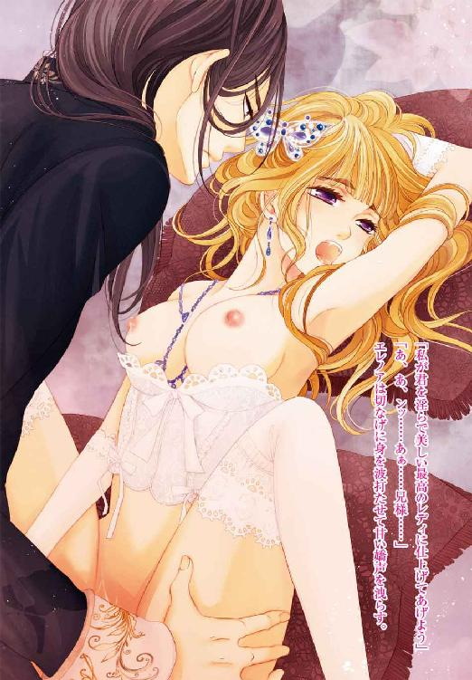
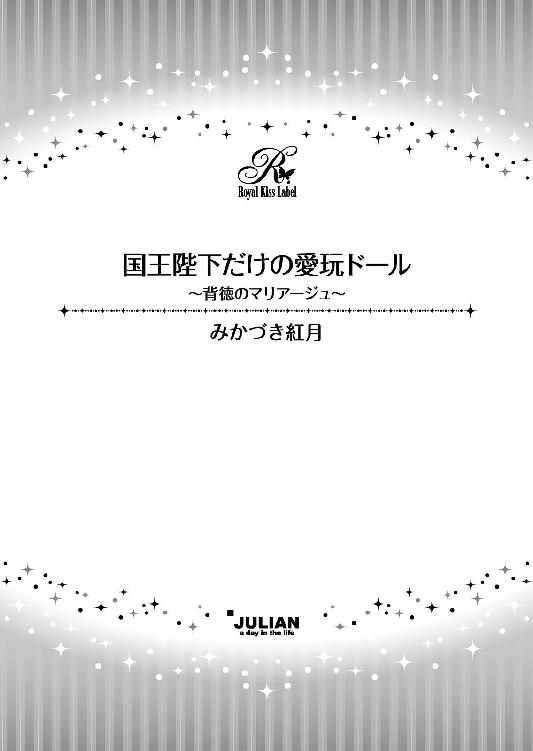
この物語はフィクションであり、実在の人物・団体・事件等とは、いっさい関係ありません。
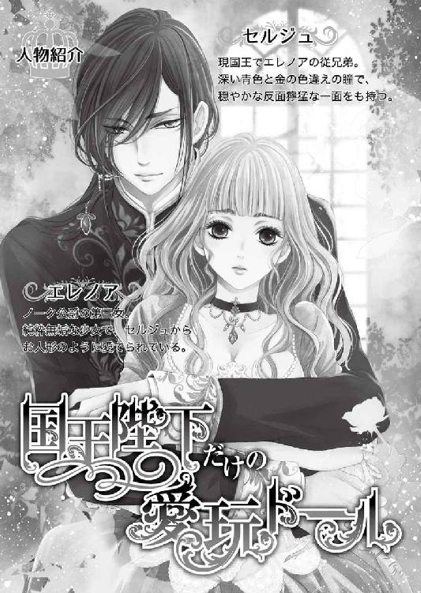
イラスト・龍本みお
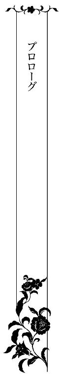
「エラは本当に可愛いな──まるで人形のようだ」
彼がいつも身につけているエキゾチックな香りの香水に包まれながら、優しい響きを持つ声が織りなす甘い囁きにぼうっとなってしまう。
こうして彼の膝の上に座らされ、丁重な手つきで頭を始め、いろんなところを優しく撫でられていると、本当に自分が人形になったかのような気持ちになる。
金とサファイア、まるで宝石のような美しい色違えの瞳が私を穏やかに見つめている。
私の従兄弟であり、幼馴染でもある彼は、大人になったら国王となる特別な人らしい。おいそれと近づけない人なのだ、失礼がないようにとお母様やお父様たちには何度も注意されているけれど、いまいちピンとこない。
だって、彼はしょっちゅう私をお城に招いては、お部屋に遊びに来てくれるし、こんな風に身支度だってしてくれる。本物の妹のように可愛がってくれるのだから。
逢うたびに彼から贈られる山ほどのプレゼント。ドレスもアクセサリーも身につけている全てのものが彼からの贈り物。
彼好みの品々を身につけ、愛でられている様子は確かに彼の人形になったかのよう。
そのたびに、彼にとって自分は特別な存在なのかもしれないという気すらして、誇らしくすら思う。
だけど、その反面、時々どうしようもなく不安になることがある。
「......エラ、そのブレスレットはどうした？」
温かだった声が不意に凍てついた響きを帯びた。
ハッとドレスの袖を引っ張って手首を隠すが、強い力で掴まれてしまう。
「い、痛い......兄様......」
「なぜ隠す必要がある？ いい子だから見せなさい」
有無を言わせない強い口調で言われて抗うのをやめた。
こうなるだろうと思ったからこそ、彼に気づかれてしまわないようにと、袖にたくさんレースをあしらったドレスを敢えて選んでいたのに......。
「悪趣味なデザインだ」
いつもは穏やかな声色が一転して鋭いものとなり、冷や水を浴びせられたような気になり、全身がこわばる。
「誰にもらったのか、教えなさい」
「......忘れました」
掠れた声でそう答えた瞬間、顎を強く掴まれて無理やり彼のほうを向かされた。
「ウソはよくないな。エラ。どうして庇う？」
「............」
詰め寄られて言葉を失う。
そんなこと彼自身が一番よく分かっているはずなのに。どうしてわざわざこんな質問をしてくるんだろう。
彼は私が他の人から贈られたものを身につけるのをけして許さない。
前にも何度か同じようなことがあったけれど、そのたびに私にプレゼントを贈ってくれた人は私の元から去っていった。
その理由はわからない。だけど、彼がなにがしかの方法を使ってそうさせたのだと思わずにはいられない。そんな偶然が何度も重なるはずはないし、気のせいで済ませるにはさすがに無理がある頻度だった。
（でも、このブレスレットは女友達からのプレゼントだし、きっと問題ないはず）
彼のいさめるようなまなざしに堪えかねて、ついに折れてしまう。
「それはイザベルからのプレゼントなんです......おそろいのブレスレットを友情の証にいつでも身につけておこうって......ただそれだけで後ろめたいことはなにも」
「ただそれだけ？」
切れ長の目が不穏に細められたかと思うと、彼はブレスレットを毟り取るように引きちぎってしまった。
「っ!? お願いします！ それだけは返してください！ 大切なものなんです」
慌てて取り戻そうとするが、逆に手をねじあげられ、動きを封じられてしまう。
「このブレスレットは君には似合わない」
「そんな......似合うとか似合わないとかそういう問題では......」
「君は僕だけのドールになるという約束を忘れてしまったのか？」
「......忘れていません......だけど......」
「約束は絶対だ。王族たるもの、自分の発言には責任を持つべきだ」
そう言うと、彼は冷ややかな表情をしたまま、ブレスレットを開け放たれた窓の外へと投げ捨てた。
「──っ！」
いつも優しい彼の豹変ぶりに打ちのめされる。とても同じ人とは思えない。
「......どうして......こんなひどいことを......」
「エラ、間違えちゃいけない。それは僕の台詞だ」
「え？」
信じられない言葉に耳を疑い、目を瞠る。
彼の瞳が水面に映った月と水底のように揺らぎ、その美しく整った顔が苦痛に歪んだ。それに気付いた瞬間、胸の内が罪悪感一色に塗りつぶされる。
「......ごめんなさい......兄様......」
幼い頃からずっと可愛がってくれている人を傷つけてしまうなんてと、涙ながらに赦しを乞う。他の人から贈られたものを身につけることがそんなにもいけないことなのだろうかという疑問は拭いきれないまま──
すると、彼はいつものように穏やかに微笑みかけてきた。まるで何事もなかったように。
そして、私の手をとると、手首へと口づけてきた。
「っ!?」
柔らかでくすぐったいような感触に手をひっこめようとするが、彼は私の手をとったまま離そうとしない。ブレスレットをしていた箇所を唇でたどるようにキスを重ねてくる。
挨拶のキスではない。もっと別な何か──だけど、その意味が分からなくて、私はされるがままだった。怖いという気持ちと得体の知れない胸の高鳴りに戸惑いながら。
「......君は僕だけのドールだ。君に触れていいのは僕だけだし、君が身につけるものを選ぶのも僕だけだ。これは『約束』じゃない。『誓い』だ。いいね？」
独り言のようにつぶやくと、彼は私をじっと見つめてきた。
金と青の不思議な瞳にとらわれ、吸い込まれてしまうような錯覚を覚えながら、気がつけば私は頷いていた。『約束』と『誓い』の意味の違いなど、分かってすらいなかったのに。
いずれ大人になった時に、この『誓い』が取り返しのつかないことを招くとも知らずに。
「さあ、エラの大好きな人形遊びを続けよう。ここはローズ城にある秘密の部屋──君はその部屋に閉じ込められた世界で一番かわいい人形。王様は君を誰にも盗られたくなくて、自分だけのものにしておきたくて君を閉じ込めてしまった」
彼は歌うような抑揚でいつもの自作のおとぎ話を語りながら、再び私を撫で始めた。
彼にされるがまま身を委ねて目を閉じると、まだ見たこともないローズ城に想像を廻らせてみる。
彼が私と同じ年だった頃、お母様と一緒に過ごしていたという小さくてかわいらしいお城。そのお庭には世界中の薔薇が集められ、競い合うように咲き誇っていたらしい。
いつか彼と一緒に訪れることができたらいいのに。
そんなことを考えながら、私は胸に抱いた彼からの初めての贈り物──お人形のベスをぎゅっと抱きしめた。
ただのお人形遊び──それなのに、なぜだか誰にも見られてはならないような気がする。
彼は、鏡の中、戸惑いに揺れる私の目を捉えて、けして離そうとしなかった。
それは、五年前、王城の奥まった場所にひっそりと建つ離宮での秘密の思い出──
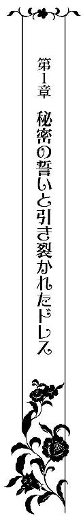
（......セル兄様）
ドレッサーの鏡に映る従兄弟のほっそりとした長い指が黄金の髪を丁重に梳く優美な動きにエレノアの胸は高鳴っていた。エキゾチックな香りの香水は昔と変わらず彼女を酔わせる。
幼い頃から一緒に育ち、兄のように慕ってきた彼に、こんな風に身支度を整えてもらうのはいつぶりだろう？
少なくとも彼が王位を継承して以来であることだけは確かだった。
子供の頃は毎日のように一緒に過ごしていたが、年齢を重ねるに従って逢う頻度は徐々に減っていき、彼が国王になってからは一度も逢っていない。
最後に逢ったのは三年前の王位継承式だったが、その際にも他の人たち同様に玉座に座る彼を前に格式ばった挨拶を交わしたに過ぎなかった。
多くの人々に囲まれた彼を遠目に眺めながら、もう彼と自分とは住む世界が違うのだと思い知った。いつまでも昔のままでいられるものだとばかり思っていたけれど、王冠を頭にいただいた彼を見て、もはや自分には手の届かない遠い存在になってしまったのだと悟り、胸を痛めていたのに......。
今、昔と変わらない丁重かつ鮮やかな手つきで、彼──セルジュはエレノアの髪を巧みに結い上げていた。
エレノアは夢でも見ているのではと何度も疑ったが、夢ではない。
彼の指先に優しく触れられるたびに甘い感覚が身体の奥からこみ上げてきて、息が乱れてしまう。遠い日の秘密の記憶が鮮明に蘇り、いてもたってもいられない心地になる。こんなに強烈な感覚が夢であろうはずがなかった。
それに加えて、久しぶりに間近で見る彼の美しさは、記憶の中の彼よりもさらに磨きがかっていた。
凄みすら覚えるその美しさに、つい目を奪われ幾度となく見惚れてしまう。
エレノアは思いの丈を込めて鏡越しに彼を見つめた。
豊かに伸ばした艶やかな黒髪を片側へと流し、目も覚めるようなサファイアの髪飾りで束ねた彼の片瞳は夜空を思わせる深い青色で、見ているだけで吸い込まれてしまいそうになるような不思議な力を持っていた。
隠していないほうの瞳ですらこれほどまでに惹かれてしまうのだ。斜めに伸ばした前髪の下に隠された金の瞳に見つめられたらどうなってしまうのだろう。
想像してみただけで、胸の鼓動が加速していく。
そのときだった。彼女の視線を感じたのだろうか？ セルジュと鏡越しに目が合い、エレノアは反射的に目を逸らしてしまう。
「エラ、どうした？」
「い、いえ！ な、なんでもありません......」
彼に愛称で呼ばれるのも久々で、胸がとくんっと甘く高鳴る。
「──そんな言い方をされればかえって気になる。尋ねてくれと言わんばかりだ。遠慮せずに何でも言いなさい。昔と同じように」
「でも、昔とは違います。セル兄様は国王になられて......私だっていつまでも子供のままというわけでは......」
彼女の言葉に、セルジュの優しげな目が鋭い光を放った。見たこともない鋭利な刃物のようなまなざしにエレノアは青ざめる。
（セル兄様？ 私、何かいけないことを言ってしまったかしら......）
常に冷静沈着で怒りらしい怒りを滅多に見せない彼が垣間見せた一瞬の感情の爆発は、怒りとも憎しみとも悲しみともとれるもので、狼狽してしまう。
だが、その変化はあくまでもほんの一瞬のものだった。気のせいかと思えるほどに。
「そうだな。君はもう子供ではない。本当に美しい女性に成長した。即位式の時も驚いたものだが、今日はそのとき以上に驚かされた」
しみじみとした口調で言うと、セルジュは鏡の中の彼女をじっと見つめてきた。否、見つめるというよりは熱っぽいまなざしで射抜くという表現のほうが正しい。
（そんな目で見つめてこないで......勘違いしてしまいそうになる......）
片目でよかった。エレノアはしみじみとそう思う。再会した折には、まるで美しい金の瞳を隠すかのような髪型を少し残念に思っていたが、今は救われたような気になる。
あの何もかも見通しているかのようなミステリアスな金の瞳で射抜かれていたら──ずっと胸の内に隠してきた彼への思いの丈を打ち明けてしまっていたかもしれない。
「私が変わったって仰るけれど、セル兄様だって......」
「そうか？ どこが変わったように見える？」
「その......髪型とか......」
単刀直入に尋ねられ、まさか前よりも美しさが増したなんて答えられるはずもなくて、エレノアは言葉を濁した。
「似合わないか？」
「そんなことありません！ とてもよくお似合いです！」
誤解されてはならないと必死に訴えると、彼は寂しげに苦笑した。
「人は自分と異なる存在を恐れるものだからな。王となった今、敵は極力少ないほうがいい。王となる前とは事情が違ってね」
含みを持たせた口調からは不穏な空気を感じずにはいられない。
遠回しにではあるが、世にも珍しい色違えの目のことを言っているのだと分かる。
（国王になられてからは目立たないほうがいい。だから、目を隠している。そう仰っているんだわ......）
だが、いくらオッドアイを隠したところで、その美貌といい、彫りの深いエキゾチックな顔立ちといい、身にまとう圧倒的な存在感といい、一族の中でも抜きんでて目立つ存在であることはなんら変わらない。
昔からそうだった。常に彼は周囲の視線を集めてきた。
エレノアは、ずっと彼と自分の血がつながっていることが不思議に思えてならなかった。
遠縁の親戚ならまだしも、セルジュは前国王の二男で、エレノアは前国王の弟ノーク公爵の第三女。さほど遠い血筋でもないというのに。
セルジュは、一際目立つ外見もさることながら、生まれながらのカリスマというものを兼ね備えており、誰からも一目置かれてきた。
よって、王位継承権においては二番手であったにも関わらず、急逝した父王の後を継いだのも、そうなって当然だと受け止める国民たちが大半だったと話には聞いている。特に、女性たちの間では──
他の兄弟姉妹たちとは異なり、母方の血をただ一人色濃く引く彼は、中性的な見た目の麗しさもさることながら幼い頃から類稀なる美的センスを持ち、いかに自分を魅力的に見せるかという術に長けていたため、ことのほか女性たちの人気が高い。
のみならず、若くして人一倍王族の一員としての意識も高く、ストイックなまでに内面を磨く姿勢からして男女問わず多くの支援者の信頼を勝ち得ていた。まさに王となるべくして生まれた完全無欠の存在といっても過言ではなく、実際に王の座を射止めたのだ。
しかし、それを快く思わない人間もいるのだろう。
彼と離れている間に、きっといろいろなことがあったに違いない。凄みを帯びた美しさの裏側にある苦悩を垣間見たエレノアは顔を曇らせる。
「......セル兄様が大変なときに......傍にいられたらよかったのに......」
「その気持ちだけありがたく受け取っておくよ。あんな危険な場所に君を置いておくわけにはいかない。子供の頃ならまだしも今は危険すぎる」
彼の言葉を耳にして、アメジストの瞳に涙が滲む。
味方が多いということは、同時に敵が多いということでもある。きっと自分には想像もつかない醜い権力争いもあるに違いない。
（いつも兄様にいろんなことをしていただくばかりで、私は何一つ兄様のためにできていないのに......わざわざ私の誕生パーティーに駆けつけてくれるなんて......）
ありがたいとは思いつつも申し訳ない気持ちに駆られて、エレノアは長い睫毛を持つ目を伏せると、そっとため息をついた。
「エラ、どうした？ 浮かない顔をして──サプライズも兼ねて、報せもよこさずに突然訪れたことを怒っているのか？」
「と、とんでもありません！ 怒っているだなんて！」
「ならば、なぜため息をつく？」
「だって、セル兄様にはしてもらってばかりで、何もお返しできていないんですもの」
「そんなことは気にする必要はない。君からはすでに多くのものをもらっている」
「え？」
思い当たることがなくて、エレノアは目をしばたたかせて首を傾げるが、セルジュはそれ以上何も言わずに、彼女の豊かな金髪へと蝶をかたどった髪飾りを着けた。繊細な細工が施されたその髪飾りも彼が彼女のためにと用意した数多くのプレゼントのうちの一つだった。
「やっぱり......申し訳なさすぎます......国王様にこんなことをさせているなんて......お母様に知られてしまったらひどく叱られてしまいますから......どうかこれ以上はもうメイドに任せてください......」
「私が好きでやっていることだ。誰にも文句は言わせないよ。安心しなさい」
「でも......」
「十六の誕生日は社交界デビューも兼ねた特別なもの。他でもないエラにとって大事な日に、この私が駆けつけないなど万に一つもあり得ない」
セルジュは腰を屈めてエレノアの耳元に口を寄せて囁いた。刹那、彼の吐息が耳朶をくすぐり、エレノアはびくっと細い肩を跳ねあげてしまう。
その反応を見てとった彼の切れ長の瞳が不敵に細められた。
「国王である前に、私は君の主人だろう？」
「っ!?」
低い響きを持つ声は熱を帯びていて、エレノアの鼓膜へと沁みていく。
目元に朱が散らばり頬が赤らみ、形のよい眉がハの字にひそめられた。
膝の上に置いた人形に目を落とすと、脳裏にかつての秘密の約束がありありと蘇る。彼女はセルジュから贈られ、ベスと名付けたその人形を子供の頃から常に身につけていた。
「久しく逢えないうちに私との誓いを忘れてしまったのか？」
「い、いえ......」
唇が渇き、声が上ずってしまう。
幼い頃に彼とかわした秘密の誓い──忘れられるはずがないし、実際に片時も忘れたことはない。むしろ彼のほうこそ忘れてしまったのではないかと思っていた。なにせ、これまでにあの誓いについて、彼のほうから何か言ってきたことは一度もなかったのだから......。
たかが子供の頃の口約束のようなものをいつまでも引きずっているのは自分だけだとばかり思っていたのに......。
思わぬ彼の発言に、心臓がドクンッと強く脈打った。
（セル兄様もあの約束を覚えてらしたんだわ......）
胸が熱く震えるが、同時に妖しい気持ちにも駆られる。
あの誓いは、何も知らない子供同士の他愛もない約束とはどこか違う、背徳的で淫靡な響きを持っていた。
「君は私だけのドールだ」
セルジュが口ずさむように言った瞬間、エレノアの全身へと雷に打たれたような激しい衝撃がはしる。
（私は......セル兄様だけのお人形......）
胸の内で反芻するだけで、全身の血が沸騰し顔が熱くなる。胸がきゅっと締めつけられ、頭がぼうっとしてしまう。
セルジュは、昔と同じように彼女の頬や顎を愛おしそうな手つきで撫でていった。
エレノアは子供の頃にしていた秘密のごっこ遊びを思い出しながら、熱に浮かされた表情をしどけなく歪める。息が乱れて、薄く開かれた唇から甘い声が洩れ出てしまいそうになる。
子供の頃とはまた違った感覚の変化に驚かずにはいられず、困り果ててしまう。
「ン......っく、兄様......」
「どうした？ 懐かしいだろう？ 昔はよくこうして君を人形に見立てて遊んだものだ」
「それは......そうですけど......」
確かに懐かしくはあったが、こうして改めて昔を振り返ってみると、やはり違和感を覚えずにはいられない。
人目を避けるように二人きりでしていたごっこ遊び──その違和感の正体はいまだに分からないが、けして他言できない行いであるという奇妙な確信だけは強まる一方だった。
「......あぁ」
陶磁器のような肌を繊細なタッチで撫でられるだけで身体の芯が熱く火照る。彼の手が口にすることすら躊躇われるようなところにも忍び込んできた記憶がありありと蘇り、ぶるりと身震いした。
「君にこんな風に触れていいのは私だけだし、君が身につけることができるのは私が選んだものだけだ。その誓いを忘れてはいないな？」
「......は、い。忘れて......いません......」
「いい子だ。しかし、前はこれほどまでの反応はみせなかったはずだが？ 私の記憶違いだろうか？」
セルジュが意地悪な微笑みを浮かべると、愛撫の手を止めることなく、彼女の唇を指先でツッとなぞってきた。
エレノアはビクッと身体をこわばらせると、羞恥に唇を噛みしめて目を伏せる。
その追い詰められた小動物のような反応がセルジュの牡を煽るとは思いもよらずに。
「そんな顔をされると、もっと虐めたくなる──」
仄暗い欲望を滲ませた声を震わせたセルジュの指が、デコルテに浮かび出た細い鎖骨をなぞり、その下の膨らみへと触れようとした。
が、その直前で手を握り締めると、遠い目をして首を小さく左右に振り、自嘲的な笑みを浮かべる。
「いや──これ以上はやめておこう。取り返しのつかないことになりかねない」
「え？」
何が取り返しのつかないことになりかねないというのだろう？
戸惑いに目をしばたたかせるエレノアに構わず、セルジュは何事もなかったかのように涼やかな表情を取り戻し、プレゼントとして持参した宝石箱の中から珍しいラベンダー色の翡翠を連ねたネックレスを選び、彼女の細い首へと付けた。
胸の上で揺れる翡翠を見つめながら、エレノアは安堵と失望の入り混じった複雑な思いに駆られていた。
もしもあのまま彼が手を止めなければどうなっていたのだろう？
続きを考えてしまわずにはいられない。
そんな動揺を全て見抜いているかのように、彼の目がよりいっそう鋭さを増しているような気がして、まともに彼を見ることができなくなってしまう。
セルジュはエレノアのアメジスト色の瞳に合わせてアクセサリーを見繕っては、優雅な所作で彼女を飾りたてていく。
通常はドレスに合わせて選んでいくものだが、彼は彼女の瞳をことさら気に入っていて、目元を強調するメイクを施した後、髪を結い上げてアクセサリーを選び、最後にドレスを選ぶ手順を踏む。
「さあ、これでいい。完璧だ。後はドレスだ。君に似合うドレスをデザイナーに創らせた」
「あの......ドレスは、その......」
エレノアは視線をさまよわせながら言い淀む。
「どうした？」
「......リディ姉様に贈っていただいたものがすでにあって......」
「姉上がドレスを？ 君に？」
セルジュが眉根を寄せると、疑わしげに目を細めた。
そのよく研ぎ澄まされたナイフのように鋭いまなざしにエレノアの身は竦む。
「......その話、私は初耳だが」
顎に手をあてると、セルジュは苛立ちを滲ませた声で呟いた。刹那、彼をとりまく雰囲気が凍てついたものへと転じる。
リディは、エレノアが父ノーク公に連れられて王城へと足しげく通っていた頃に、セルジュと同じく懇意にしていた王女で、今は隣国アルカディアの国王の元へと嫁いだ身。エレノアにとっては、実の姉のような存在だった。
よく三人で一緒に遊んでいた仲だし、リディからの贈り物ならば、きっとセルジュも身につけることを赦してくれるに違いない。そう思っていたのに......。
この一瞬の奇妙な間に、かつて親友から贈られたブレスレットを捨てられた時同様、自分の予想が甘かったことを思い知らされる。
「それで──まさか君は姉上から贈られたドレスを着るつもりとでも言うのか？」
「............」
責めるような厳しい口調に、何も言葉を返せない。
が、その沈黙を彼は肯定と受け取り、端正な表情を歪めた。
「姉上は私以上の策士だ。男に生まれておけばと何度生前父が洩らしていたかしれない。一体何を企んでいるのやら」
「そんな......策士だなんて......リディ姉様は私のことを思って......」
想像だにしなかった彼の言葉にショックを受け、エレノアはリディを庇おうとしたが、冷ややかな一瞥が彼女の言葉を遮った。
「他人を疑うことを知らない純粋な君には、姉上の本性が見えていないようだな。姉上は自分の正義を貫き通すためならば手段を選ばない恐ろしい人だ」
突き放すような酷薄な口調でリディを悪人のように語るセルジュは、エレノアが知る彼とはまるで別人だった。
エレノアにとっては、リディもセルジュも自分のことを実の妹のように可愛がってくれた大切な存在であって、二人のことを悪く言われることは耐え難い苦痛。しかも、大切な人の口から聞かされるなんて......。
張り裂けそうな胸を押さえて口をつぐんだエレノアにセルジュは肩を竦めて苦笑した。
「エラ、そんなに悲しそうな顔をするのはよしなさい。私は何も姉上の悪口を言っているわけではない。むしろ褒めているのだから」
「......褒めて？」
「ああ、そうだ。彼女のように強くあれたらどんなにいいかと、何度も思ったものだ」
「............」
彼の言わんとするところが分からず、エレノアはかえって混乱してしまう。
「いずれ君にも分かる時が来る。だが、分かったときには手遅れになりかねない。油断は禁物だ。十分警戒したほうがいい。姉上が君に贈ったというドレスを私に見せなさい」
「......は、はい」
エレノアは人形を抱いて椅子から立ち上がると、隣室のクロークへと移動して、リディから贈られたドレスを手に戻ってきた。
身体のラインを際立たせたワインレッドのマーメイドラインのドレスで、足にはスリットが大胆に入っている。いつも彼女が着ているプリンセスラインのものとは違い、大人の色香を強調するようなデザインで、エレノアはこのドレスを着るのを楽しみにしていた。子供から一人前のレディへ──社交界デビューに相応しい一着だと思っていた。
が、そのドレスを見つめるセルジュの目は冷ややかだった。
「なるほど、それが姉上の趣味か。いや、趣味というよりはあきらかに特別な意図をもって選んだものだな。それで、まさか君はそのドレスを気に入っているとでも言うつもりか？」
頷くことが躊躇われるような彼の口ぶりにエレノアは怖気づく。
このドレスを着て、いつも自分のことを子供扱いしてくるセルジュに一人前の大人のレディになったと褒められることを夢見ていたのだが、そのアテが外れて困惑する。
「あの......セル兄様のお気には召しませんでしたか？」
「デザインは悪くない。だが、君にはまだ早いな」
「いつも兄様は私のことを子供扱いなさるんだから......」
「不満か？」
「............」
早く大人になって憧れの彼に近づきたい。一人の女性として見られたい。ずっとそう思っていたのに。そんな気持ちまで否定されたかのような気がして胸がズキリと痛む。
セルジュは、しばらくの間、ドレスをきつく見据えて何事かを逡巡してるようだった。そして、長い沈黙の後、深いため息をついた。
「なるほどな。恐らくこれは姉上の罠だ──」
「罠!?」
「ああ、だが、心配しなくとも私が君を護ってみせる。だから安心しなさい」
「まさかそんな......リディ姉様が私に罠をしかけてくるなんて......信じられません」
「君は何も分かっていないな。本当に恐ろしい敵とは、味方の仮面をかぶって言葉巧みに近付き、誘ってくるものだ」
「──え？」
「私の言葉の意味が分からないようならば、君はまだまだ子供のままだ。安心したよ」
彼に頭を撫でられ、エレノアはいじけたように頬を膨らませた。子供のまま──その言葉が胸に突き刺さる。
「セル兄様、いい加減子供扱いはやめてください......」
「そういう台詞は、人形を卒業してから言うものだ」
不意にセルジュが手を伸ばして、彼女が抱きしめていた人形をとりあげた。
「あっ！ だ、駄目です。ベスをとらないでっ！」
慌てて彼の手から人形を取り戻すと、エレノアはぎゅっと抱きしめて頬ずりをする。幼い頃からずっとお守りのように肌身離さずにいたベスは特別な存在だった。
まるで人形のように愛らしいプリンセスが人形を愛でる姿は幼い頃から評判だった。
それは十六の誕生日を迎えようとする今となっても変わらない。むしろ、まだ少女のあどけなさを残しつつも大人の女性へと移ろいつつあるなんともいえない魅力は噂となり、多くの男たちの関心を集めていたが、そんなことを本人が知るはずもない。
「──ベスは私の大事な親友なんです。それでも、大人になるためには、卒業しなくては駄目なんでしょうか？」
ベスをじっと見つめてため息をつくエレノアにセルジュは首を左右に振った。
「いや、その必要はない」
「でも、お母様からも『さすがにもうそろそろベスを持ち歩くのは子供っぽいからやめなさい』って言われていて......今日のパーティーにも絶対に持ち込んでは駄目だって......」
「君は大人になる必要はないと言っているんだ」
言葉を遮るように言うと、セルジュは彼女の両肩に手を置き、そのブロンドの髪に顔を埋めてきた。
彼の熱っぽい吐息がこもるのを感じて、エレノアは細い肩を震わせる。
「......セル兄様......だけど、私は早く大人になりたいのです......」
セルジュに大人の女性として見てもらいたいから──という言葉は口にせずに、胸の奥にとどめておく。もしも、それを口にしてしまえば、まるで本物の兄妹のように大切に築き上げてきた絆や関係が壊れてしまいそうだったから。
こんな風に思うようになったのは、一体いつ頃からだっただろう？
最初は兄のように慕っていたはずだったのに、気がつけば彼に恋していた。彼に大人の女性として扱われたいと願うようになっていた。
だから、社交界デビューをかざる十六の誕生日を心待ちにしていたのに......。
子供のままでいいなんて言われて、戸惑ってしまう。
「なぜ、そんなにも大人になりたいと思うんだ？」
再び彼から鋭いまなざしを向けられ、エレノアは息を詰まらせ返事を躊躇する。なぜ、こんな恐ろしい目で睨まれるのか分からない。
眉をハの字にして黙りこくってしまった彼女を見ると、セルジュは皮肉っぽい笑みを浮かべてみせた。
「──大人の世界は君が思っているほどいいものではない。周囲から大人として見られ、扱われるということは危険と隣り合わせということを肝に銘じておかねばならない」
「危険......ですか？」
他人を疑うことすら知らなさそうなエレノアの透き通ったアメジストの瞳を見て、彼は重いため息をついた。
「やはり君はそれすら理解していなかったか......姉上の本性を見抜けない人間は多いが、さすがに大人になるということの意味すら知らないのはあまりにも危険すぎる」
そこで言葉を区切ると、セルジュは思いつめたような目で鏡越しにエレノアを見つめた。
「きちんと自覚させておかねばならないようだな。手遅れになる前に──」
「......危険だとか手遅れだとか......私には仰る意味がまったく分かりません」
「だろうな。子供のままでいることを選ぶのであれば分からなくてもいい。だが、君は大人になりたいのだろう？」
「......はい」
「ならば、私が大人になるということがどういうことか、なぜ危険なのか、今から教えてあげよう」
ゾッとするような口調で言うと、セルジュは彼女のこめかみに軽くキスをしてきた。
いつもと異なる彼の態度に、エレノアの胸は妖しく掻き乱される。彼のどこか思わせぶりな言葉に期待と不安とが入り混ざり、息が乱れてしまう。
セルジュは彼女をその場に立たせると、普段着ているシンプルなデザインのドレスを脱がしていった。
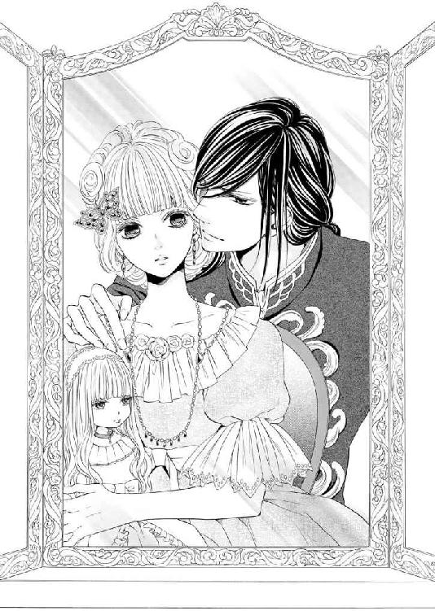
エレノアは恥じらいに頬を染めて目を伏せると、昔のようにされるがまま身を委ねる。ただ単にドレスの着替えをしてくれるだけだ。他意はないはず。そう自分に言い聞かせて。
こうして羞恥をこらえて彼の手に身を委ねていると、かつてのごっこ遊びのディティール、感覚まで思い出してしまい、胸が妖しく締め付けられる。
彼だけのドール──その約束はいつまで有効なのだろう？
先ほどのやりとりによって、子供の頃の他愛もない口約束という言い訳はもはや通用しなくなった。大人になってもなお、否、子供時代以上の執着を感じ、エレノアは違和感を覚えながらも抵抗できない。
（これからもずっと......永遠にお兄様だけのお人形でいられるの？）
胸の内の呟きが、甘やかな呪詛のように心身をがんじがらめに縛めていく。
不安めいた面持ちで、エレノアは鏡越しに彼を見つめる。
もう子供ではないのに──こんなあられもない姿を彼に見られてしまうなんて。
胸のふくらみや身体のラインを覆い隠してしまいたい衝動に駆られるが、そういう素振りを見せることすらなんだか妙に気恥ずかしいことのように思えて......。
ベスをぎゅっと抱きしめると、なんでもないフリをして羞恥に耐える。
セルジュは涼しい表情のまま、いつもよりもコルセットをきつく締めあげると、リディから贈られたワインレッドのドレスを彼女に着せていった。
「さあ、できた──」
彼の言葉に顔をあげたエレノアは姿見に映された自身の姿に驚きを隠せない。
（これが......私？ 信じられない......）
細い肩は剥き出しになっている上に、大胆に開いた胸元からは、コルセットに絞られた豊かな胸のふくらみがのぞいている。
身体のラインが強調されたドレスのスリットからは、ほっそりとしたしなやかな足が顕わになっていた。
こんなセクシーなドレスは今までに着たことがなくて、いざ着てみると、どうにも心もとなく目のやり場に困ってしまう。
そんな彼女の戸惑いを見抜いたかのように、セルジュが凍てつく声で告げてきた。
「これで君にはまだ早いと私が言った意味が分かっただろう？」
「......単に着慣れていないだけで、すぐに慣れるとは思うのですが」
「そういう問題ではない」
「え？」
セルジュは怪訝そうに眉をひそめた彼女の首筋を指でなぞったかと思うと、細く浮き出た鎖骨、胸元へと手を運んでいった。
「──っ!?」
驚いたエレノアが慌てて手で覆い隠そうとしたが遅かった。彼の手がドレスの胸元から中へと侵入すると、ふくらみを力任せに掴みあげた。
「っつ......ぅ......や......っ。セル......兄......様？ な、何を......」
痛みに顔をしかめるエレノアの表情を愉しげに眺めながら、彼はふくらみを情け容赦なく揉みしだく。
「男を誘うような格好をしておきながら白々しい」
「っ!? ひど......い、私は......そ、そん......なつもりじゃ......」
「君がそんなつもりじゃなくても、男はそういうつもりで君を見る。その自覚もないのに、こんな淫らなドレスを着てパーティーに出席しようなど──獣共の群れにいたいけな羊を放り込むようなものだ」
セルジュが彼女のドレスの胸元から二つの丘を掬い上げるようにして露出させた。
まろやかな乳肉を波打たせながら、淡い桃色をした二つの突起が外へとまろび出てくる。
「っきゃ!? い、いやっ！ 見ないで......」
エレノアは悲鳴をあげて胸元を覆い隠すが、セルジュがそれを赦さない。見た目からは想像もつかない強い力で彼女の細い手首を掴んで胸元から引き剥がした。
彼女の手から人形が離れ、ドレッサーの上に横たわる。
「あっ......いや、セル兄様......どうしてこんな......いきなり......」
「もう子供ではないと言っておきながら、大人の女性としての自覚が足りなければ一体どんな目に遭うか、きちんと教えておかねばならない。君を何も知らない無垢な人形に育て上げた責任の一端は私にもあるのだからな」
セルジュは彼女の手首を重ね合わせた状態でドレッサーに固定すると、空いているほうの手で発達途上にあるなだらかな丘を揉み始めた。
前かがみになった状態で、いつも以上に大きく見える胸を彼の長い指が揉みこんでいく様子がとてもいやらしく見え、とても正視できずエレノアは顔を伏せてしまう。
「う......っ、あ、や......やめ......て。セル兄様......」
恥じらいに長い睫毛を震わせながら赦しを乞う。
だが、セルジュは彼女を解放するどころか、わざと羞恥を煽るような意地悪な言葉を歌うように口ずさむ。
「やめてほしいという割に反応が甘すぎる。もっといじめてほしいと言わんばかりだ」
「っ!? そ、そんな......うそ......」
「うそではない。見てみるがいい。もうすでに先端がこんなに尖っている。これは君が私の指に感じている証に他ならない」
乳房の根元を絞り出すように掴むと、ツンと隆起した乳首を指で摘んでみせる。
「っあぁ！ い、やぁ......」
自分でも信じられないほど甘い声を出してしまい、エレノアの表情に戸惑いが滲む。
ふっくらとした真っ白な頬は薔薇色に染まり、整った愛らしい顔が淫らに歪んだ。
（私ったら......なんて声を......）
口を覆いたいが、腕を固定されているためそれもできない。花びらのような唇を噛みしめて声を堪えようとするが、セルジュの巧みな指使いには抗えない。
ついさっきまで髪を梳いていた長い指が、執拗に先端を責めてくる。痛いのに時折甘い愉悦が走り、エレノアは甘く呻いてはぶるりと身震いする。
「──確かに君は一人前のレディに成長したようだ。いつの間にかこんなにも艶めいた声を出せるようになり、色っぽい表情をすることができるようになったのだからな。男を挑発するような淫らな反応まで。一体どこで誰に習った？」
侮蔑の色を帯びた責めるような口調で問い詰められ、エレノアは顔をしかめて懸命に反論しにかかる。
「っ!? だ、誰にも......こんな恥ずかしいこと......習ってなんか......」
「習ってもいないのにこれほどの反応を見せるなんて。行く末が恐ろしい。まさか君がそんな淫らな女性に成長していたとは──失望したよ」
セルジュの言葉が刃のように彼女の胸に容赦なく突き刺さっていく。
「......っ!? どうして......今日はそんなひどいことばかり......仰るんですか!?」
エレノアが憤りのあまり涙ぐんで訴えかけると、彼は苦しそうに顔を歪めた。
「愛憎は紙一重ともいうだろう？ 愛しい相手であればあるほど憎しみも募るもの」
愛しいという彼の言葉に胸が高鳴るが、それと同時に不安にも駆られる。
（......セル兄様に憎まれるようなことをしてしまったということ!? 早く大人になりたいという夢がそんなにもいけないことだったなんて......）
混乱するエレノアのドレスのスリットから彼の手が忍び込んできた。
「っ!? セル兄様っ！ な、何を......」
慌てて足をきつく閉じるが、すでに彼の指は薄布越しに両足の付け根へと侵入し、誰にも触れられたことのない秘所へと触れていた。
「やはり──もう濡れている。いつでも男を受け入れられるように」
セルジュの声色には背筋が凍るような響きがあり、エレノアは青ざめる。とても恐ろしいことを言われた気がしてならない。
「耐え難い屈辱だな。君が誰か他の男に奪われるなど──想像するだけでどうかなってしまいそうだ」
呻くようにいうと、セルジュはショーツの隙間から中へと指を潜り込ませていく。
「あっ!? そ、んなところ......まで......あ、ン......あぁ......！」
エレノアが大きく目を見開くと、戦慄に全身をこわばらせた。彼の指がぬかるみの中から肉芽を捜しあてた瞬間、怖いほどの快感が爆ぜる。
同時に、奥のほうから何かが滲み出てきてしまい困惑する。
「やっ......い、今の......な、何......!?」
小刻みに震えながら驚きに目を見開く彼女の耳元にセルジュが囁いてきた。
「──軽くイッたようだな。気持ちよかっただろう？ だが、大人の愉しみはまだまだこんなものじゃない」
肉核を捉えたままの中指が小刻みに振動し始めた。さっき味わったばかりの快感が断続的に刻まれ始め、エレノアは悲鳴じみた声をあげる。
「やっ!? いやっ！ や、め......て。セル兄......様......い、や......あぁ!?」
「こんなに気持ちよさそうによがっておきながら止めてほしい？ 矛盾しているな。どうして止めてほしいのか、納得のいく理由を言いなさい。そうしたらやめてあげよう」
「だ、だってっ！ こ、こんな......の。お、おかしく......な、って......あ、あぁ......ンッ」
甲高い嬌声をあげながら身悶える彼女を熱っぽいまなざしで見つめながら、セルジュはさらに指を大胆に動かしては、わざといやらしい水音を立てる。
「存分におかしくなりなさい。私の指で──君の痴態の全てを見ていてあげよう」
「や......あぁあっ!? セル兄様の前で......こんなはしたない姿......み、見せたくない......」
「君の主である私が見たいと言っても？」
「っ!? そ......それ......は......」
思ってもみなかった彼からの要求にエレノアは言葉を失う。
その隙に、セルジュはさらなる奥へと中指をぬるりと侵入させると、円を描くように蜜壺をぐちゅりと掻き回してきた。
「っきゃっ!? あ、あ、あぁ......」
立て続けに信じがたいほど恥ずかしい行為を強要され、エレノアは生きた心地がしない。まさか大人の男女が、こんなにも恥ずかしい行いをするものだったなんて思いもよらなかった。未知の世界を前にしてどうしたものか分からず途方に暮れる。
「おか......しいです。こんな......私を......見たいだなんて......」
「そう思うのはまだ君が大人になりきれていない証だ。君にはまだ早いと言った意味が分かっただろう？」
窘めるように言うと、セルジュは彼女の乳房を優しく揉みしだきながら、狭隘な穴を指で解していく。ぐちゅぐちゅというくぐもった湿った音と共に、いやらしい秘蜜がとろとろと彼女の内腿を伝わり落ちていった。
「う......あぁ、っく......そ、んなに......私に大人になって......ほしくないのですか？」
目元を上気させたエレノアがつま先立ちになり膝をわななかせながら彼に尋ねた。
「──ああ、そうだ。急いで大人になる必要はない」
「でも......お母様は......もういい加減......大人になりなさいって......」
「口答えする悪いお人形には、お仕置きが必要だな」
セルジュの居丈高な言葉が彼女の言葉を遮ると、続いて絹を引き裂く音がした。今まで彼女の手を縛めていた彼の手が、ドレスの裾を力任せに引き裂いたのだ。
「これでもうこのドレスは着れなくなった。いい加減諦めなさい」
「や、やめて。セル兄様......」
「エラ、君がいけないんだ。私との誓いを破ろうとしたのだから──君に触れていいのは私だけ。君が身につけることが許されるのは私の贈り物だけだ」
「でも、リディ姉様の贈り物くらい、赦していただけるとばかり......」
「逆だな。姉上の贈り物だからこそ危険なのだよ」
穏やかな表情のまま、しかし、彼は憎しみをぶつけるかのようにドレスを千々に引き裂いていく。
「あぁ、こんなことをして......お母様になんて責められるか......」
「代わりに私が用意したドレスがあるだろう？ ドレスが駄目になってしまった理由も説明しておく。だから何の心配もいらない」
言葉は優しいが、ドレスを引き裂く手は止まらない。その様子には鬼気迫るものがあった。
鏡の中、引き裂かれた布の端切れが羽毛のように落ちていく中、ドレスの下にまとっているコルセットや、白いハイストッキング、ガーターなどが剥き出しになってしまう。
今まで人形のように大切に扱われてきたのに──いきなり手の平を返すような彼の態度にエレノアは慄いていた。
だが、その一方で今までに見たこともないセルジュの獰猛な一面に胸が妖しく昂る。
（乱暴なことは嫌いなはずなのに......どうしてこんなにドキドキするの......）
けして嫌だとは思わない。不安と期待とが複雑に絡み合って動悸が加速していく。
たよりなげに揺れるアメジストの瞳を見据えると、セルジュが彼女に命じた。
「──エラ、腰をもっと後ろに突き出しなさい」
「......は、い」
戸惑いながらもエレノアは従順に彼の命令に従う他ない。
ベスを抱きしめて、腰を折ってヒップを後ろに突き出した彼女に目を細めると、セルジュは彼女のショーツをも情け容赦なく剥いてしまった。
「っ!?」
恥ずかしい箇所を剥き出しにされ、エレノアは咄嗟に腰を引いてしまうが、それよりも早く彼の手が彼女のヒップを平手打ちにしていた。
乾いた音と同時にヴァギナが収斂し、新たな愛液が綻びから伝わり落ちていく。
エレノアが羞恥に堪えて、おずおずと再び腰を後ろへと突き出すと、セルジュは人差し指と中指とを揃えて蜜を滴らせる肉唇へとひと思いに突き立てた。
「っ!? ひっ!? あ、あ、あぁああっ！」
太いものに貫かれる強烈な感覚に、花弁のような唇が解け、引き攣れた艶声が放たれる。
きつく閉じられた目の裏が赤と黒に明滅し、あまりもの痛さにその場にうずくまってしまいそうになる。
一体、自分の身に何が起こっているか分からなかった。
ただ一つ、子供の頃にしていたごっこ遊びの範疇を超えたことをされているという確信だけはあった。
細い体躯を震わせながら大きな目を見開き身体を硬直させた彼女に構わず、セルジュは、膣内に埋めた二本指を鉤状に曲げたかと思うと、ゆっくりとピストンさせていく。
「い、痛......い。あ、っく......う、うぅう......や、あ......ぁ」
「大丈夫だ。すぐに良くなる。いい子だからもう少し我慢していなさい」
落ち着き払った声で宥められるようなことではないはずなのに──いつもとなんら変わらない口調で窘められ、エレノアは形の良い眉を切なげにひそめる。
これがどういった行為なのかは分からないが、本能が警鐘を鳴らしていた。これ以上は危険だと......。
「はっ、あ、あぁ......う......っく......ン......っふ、あぁ......」
だんだんと水音が大きくなるにつれ、唇から洩れでる声色も変わってきた。
甘い響きが混ざり始めたことに気づいたセルジュは、さらに力を込めてまだ硬さを残している膣壁を開拓していく。
彼の指は確実に彼女の弱点を見つけ出しては、強弱をつけて責め立てる。
腹部側にある一際感じやすい壁と肉芽とを同時に弄られ、覚えたての官能の波が早くも高波となって彼女に襲いかかろうとしていた。
「あ、ああ、何かが......出てきて......しまい、そ......うで......もうっ......もう本当に......赦してくださいっ！」
息を淫らに弾ませながら、エレノアは逼迫した表情で鏡越しに彼に訴えかける。
下腹部の奥に愉悦のしこりが肥大して、いまやはちきれんばかりに膨らんでいた。
だが、セルジュはけして首を縦には振らない。
「君の粗相ならばいくらでも歓迎しよう。思う存分イきなさい──」
嗜虐心を剥き出しにすると、手首のスナップを利かせて彼女をイかせるべく本格的な抽送を開始した。
「っ!? やっ！ あ、ああぁああっ！ いやぁっ！ セル兄......様ぁっ!? ンンンッ！」
想像だにしなかった凄まじい指責めに、エレノアは人形をきつく抱きしめ、顔を振りたてながらあられもない声をあげてよがりくるってしまう。
どれだけ痴態を晒したくなくとも、こうも執拗に弱点を責められては、もはやまともにものを考えてはいられない。
せっかく美しく結いあげた髪も乱れ、髪飾りが音を立てて床へと落ちていった。
しかし、そんなことに構う余裕はもはや残されていなかった。
エレノアは腰を悩ましげにくねらせながら悲鳴じみた声をあげ、際限なく昇りつめては、さらなる高みへと追い詰められていく。
「あ、あ、あぁああっ！ も、う駄目......い、いやぁああああ！」
やがて、一際甲高いイキ声をあげると同時に、エレノアは愛らしい顔をくしゃくしゃにしてその細い身体を激しく痙攣させた。
つま先立ちになった足がガクガクと震え、蜜壺が万力のようにセルジュの指を締め付けたかと思うと、大量の蜜潮と共に外へと押し出す。
エレノアはがくりとうなだれると、ついにその場に崩れ落ちてしまった。甘酸っぱい淫らな芳香が鼻をつき、恥ずかしさのあまり顔を両手で覆い隠す。
よりにもよって憧れの人の前でこれほどまでの醜態を晒してしまうなんて。今すぐにでも消えてしまいたかった。
細い肩を震わせて打ちひしがれる彼女の傍にセルジュは跪くと、いたわるように頭を撫でてきた。
「............」
エレノアがおずおずと顔をあげると、いつもと変わらない彼の穏やかな微笑みがすぐ傍にあった。こわばりきった表情が安堵に緩む。
だが、セルジュは彼女の目の前に濡れた指を突き付けてきたかと思うと、わざと見せつけるように舐めあげた。
「っ!?」
信じられないといった風に目を見開いたエレノアは咄嗟に目を逸らす。
しかし、彼は彼女の顎を掴むと、力づくで自分のほうへと向かせた。
「なぜ私から目を逸らす？」
「......だ、だって......汚い......です。そ、んな......の......おかしい......です」
今にも泣き出してしまいそうな頼りない声で反論する彼女にセルジュは目を眇めた。
「汚くなどないし、おかしいことでもない。これが大人の味だ。君の味は切なくて病みつきになってしまいそうだ。まさに媚薬だな。おかしな心地になる」
指先に糸を引く蜜を丹念に舐めとってみせると舌舐めずりをする。いつもの優美な彼らしくない獣じみた態度にエレノアの白磁の肌が粟立つ。
「これで分かっただろう？ 二度とこんな恥ずかしい目に遭いたくないと思うならば、けして急いで大人になろうとはしないことだ。いいね？」
セルジュは彼女の頭を優しく撫でると、幼子に言い含めるような口調で語りかけてきた。
エレノアが躊躇いがちに頷いてみせると、ようやく彼の双眸から鋭い光が消え失せる。
その次の瞬間、不意にセルジュが彼女の身体を力いっぱい抱きしめてきた。息もしづらいほど強く抱きしめられ、エレノアは驚きに目を見開く。彼が身につけたエキゾチックな香水が強く香り、眩暈を覚える。
「......セル......兄様？」
「怖がらせてしまって悪かった。だが、君を護るためにはどうしても必要なことだった。それだけは分かってほしい。今日、十六の誕生日を迎えてしまった君は、今後、この種の危険に常に晒されることになるだろう。だから、男たちの甘い囁きは、すべからく罠と思ってくれぐれも警戒するように。いいね？」
「......はい」
なぜいきなりこんなことを言われるのか、いまいちピンとこないが素直に頷いてみせる。
いつもの彼に戻ったことを感じ、心の底から安堵のため息をついた。
しかし、先ほどされた行為が気になって仕方ない。
（あれが大人になるということ......あんな恥ずかしいことをされるなんて知らなかった）
単純に少しでもセルジュに近づくことができるという喜びに蔭りが差す。初めて触れた未知の世界は、エレノアの感じやすい心に強烈な衝撃を与えていた。
しばらくの沈黙の後、セルジュが彼女の耳元で深いため息をついた。
「──やはり、君は大人になってしまったのだな。いつかこんな日が来ると覚悟はしていたつもりだったが」
中断された言葉の続きが気がかりで、エレノアは顔をあげて彼の顔を見ようとした。
だが、セルジュはまるで自分の顔を見られまいとでもするかのように彼女の頭を掻き抱いたかと思うと、血も凍るような恐ろしい声で呟いた。
「本当は──未来永劫、いつまでも君を私だけの人形にしていたかった」
仄暗い欲望を滲ませた彼の声色に、エレノアは心臓を氷の手で握りしめられたような錯覚を覚えて身を竦ませる。
瞬く間に、得体の知れない暗雲が、胸を黒々と覆い尽くしていく。
長い時間をかけて今まで築き上げてきた大切なものが失われつつあるような気がして急に怖くなり、エレノアは彼の身体にすがりついた。
（どうしてこんな言い方をなさるのかしら......）
まるでその願いはかなわなかったという過去形の言いぶりが気になって仕方ない。
（セル兄様、苦しそう......私が早く大人になりたいなんて願ったせい？）
罪悪感に打ちひしがれ、激しく後悔しても時間を巻き戻すことはできない。
エレノアは胸に渦巻く不安を逃すようなため息をつくと、思いの丈を込めて彼に甘えるように頬ずりをした。
悩みごとがあったり塞いだときには、不思議とこうして甘えるだけで心が落ちつく──はずだった。
だが、今回ばかりはなぜか不吉な予感にどうしようもないほどに胸が掻き乱され、いつまで経っても収まりそうにない。
その不安を感じ取ったのか、セルジュは優しく彼女の顔を上向かせると、柔らかく微笑みかけてきて、唇を一瞬重ねてきた。
初めてのキスにエレノアの胸がときめく。
だが、次の瞬間、前髪を掻きあげたかと思うと、隠しているほうの金色の瞳で彼女を見据えた。
「......っ!?」
幼い頃の記憶にある神々しいほど透き通った美しい瞳はそこにはなかった。
猛禽類を彷彿とさせる黄金の瞳が、凄絶ともいえるほど鋭い光を放っていた。
のみならず、見ているだけで危うい感覚を他人に抱かせる得体の知れない何かが秘められているような気がして......。
目を逸らさねばと思うのに、その意志に反して目を逸らすことができない。
エレノアがアメジストの双眸を見開いてその場に固まっていると、セルジュは自嘲めいた微笑みを浮かべて彼女へと尋ねてきた。
「──エラ、私が怖いか？」
「............」
否定しなければならないと思うのに、唇がわなないて思うように言葉が出てこない。
すると、セルジュは前髪を元に戻し、小さなため息をついた。その姿に罪悪感をおぼえたエレノアは目を伏せる。
（どうして？ セル兄様を怖がってしまうなんて......）
ありえない自身の反応に戸惑い、長い睫毛が震える。
「......ごめんなさい。兄様......私......」
おずおずと口を開いたエレノアに苦笑してみせると、彼は首を左右に振った。
「気にしなくていい。自分の正体は一番自身がよく分かっている。誰もが生まれたときのまま、子供のまま美しくはいられない。それが大人になるということだ」
謎めいた言葉を口にすると、セルジュは口端をあげて目を細めて見せた。
その表情は、笑っているようにも泣いているようにも見える。
鉛のように重い空気の中、セルジュはエレノアのためにと持参した薄紫色のドレスを手にとると、彼女へと着せていく。乱れてしまった髪も結い直し髪飾りをつけ、何事もなかったかのように身支度を整える。
その間、エレノアは一言も言葉を発することができず、本物の人形のように息すらひそめて彼に身を委ねていた。
せわしない胸の鼓動は初めてのキスの昂りなのか、恐ろしい瞳への恐れなのか、わからない。
「さあ、できた。世界で一番美しい人形のできあがりだ」
セルジュは満足そうに頷くと、鏡の中に映る彼女へと微笑みかけた。
そこには、いつもと変わらない人形のように愛らしいプリンセスがいた。
「──くれぐれも私の警告と誓いを忘れないように。いいね？」
「......はい」
「その返事を聞いて安心した。では、後ほど。会場で逢おう」
マントを翻して何事もなかったかのようにその場を立ち去っていく彼を引き留めようと右手をあげたエレノアだったが、無言の拒絶を彼の逞しい背に感じとってその手を下ろした。
多くの疑問符が頭の中を埋め尽くしていて、必死に考えを廻らせるが、一向に答えは得られない。
幼い頃からずっと一緒にいた彼のことはなんでも知っていると思っていたのに。結局は、分かったつもりになっていただけに過ぎなかったのだと思い知らされる。
一番近しく感じていたはずの彼に、急に突き放された気がして途方に暮れてしまう。
「セル兄様......一体どうされてしまったのかしら？」
やりきれない思いに乱れながら、エレノアはベスを抱き上げて尋ねた。
いつもならベスに悩み事を打ち明けると心が軽くなるのに、胸の疼痛はいつまで経ってもおさまりそうにない。
いつもの優しいセルジュからは想像もつかないような一面を垣間見てしまった。加えて、他人にはけしていえないような恐ろしいことまでされてしまった。
今となっては、子供の頃の秘密なんて大したものではなかったように思えてくる。
ベスは沈黙したまま穏やかな微笑みを浮かべて佇んでいる。いつもと変わらない彼女の様子にエレノアのこわばった表情が緩んだ。
刹那、ハッとする。
（お人形はずっと変わらない存在......兄様にとって私もそうであるべきだということ!?）
謎の一端が解けた気がするが、まだそれでも十分だとは思えない。
（......兄様の願いなら、なんだって叶えて差し上げたい。だけど、人間が人形になるなんてこと、本当にできるのかしら......）
できないと分かっているからこそ、あんな風に苦しそうだったのかもしれない。
だが、そもそも本当に不可能なことだと分かっていたならば、わざわざあの誓いを改める必要なんてあったのだろうか？
セルジュの本意を掴みかねて、エレノアは深いためいきをついた。
これから自分が主役のパーティーだというのに、彼のことが気がかりでそれどころではなくなってしまう。
（どうしてこんなことになってしまったの？ 一体、私はどうすればよかったの？ 兄様）
答えの得られない問いを自身にして、そっと目を閉じる。
何か取り返しのつかないことをしてしまったような。もうけして元には戻れないような後悔に苛まれる。
しかし、その反面、妖しいまでの胸の高鳴りは一向に収まりそうにもなかった。
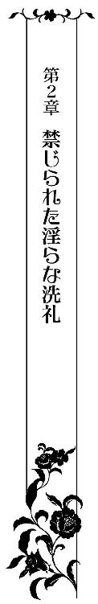
「エレノア！ この日のためにとリディ様がせっかく素敵なドレスをプレゼントしてくださったのに台無しにしてしまうなんて......シャーリーを部屋にいれては駄目とあれほど注意していたでしょう！」
「お母様、申し訳ありません......」
セルジュから贈られたプリンセスラインのドレスを着たエレノアを見つけるや否や、母親のセリスが目を吊り上げて詰め寄ってきた。
どうやらセルジュが前もって母にリディから贈られたドレスを着ることができなくなった旨を説明してくれていたようだが、それにしてもよりにもよって飼い猫のせいにするなんて──と、エレノアは唇を尖らせて人だかりができている場所に目を運ぶ。
セルジュがいるところには昔から人だかりができるのが常だった。
案の定、彼は多くの美女たちに囲まれていた。
色とりどりのセクシーなドレスを着たグラマラスな美女たちが、セルジュに大胆に迫る様子を目にするや否や慌てて目を逸らす。
自分には大人っぽいドレスを着ることを禁じておきながら、他の女性たちには赦すなんて、と胸のうちで独りごちる。
同時に、あれだけ綺麗な女性たちに熱烈なアプローチを受けているのだから、いくら自分が背伸びをして大人っぽく着飾ってみたところで所詮敵うはずもなかったのだという気持ちにも駆られて悲しくなる。
（......セル兄様は大人だから、あの方たちにも......私にしたようなことをするのかしら？）
ついさっきドレスをズタズタに引き裂かれてしまい、恥ずかしい行為を強制されたことを生々しく思い出して頬が熱く火照る。
躊躇いがちに彼のほうを見ると、一瞬目が合った。
セルジュは意味深な微笑みを口端に浮かべると、切れ長の目を細めてみせる。
「っ!?」
エレノアは弾かれたように再び彼から視線を外すと、扇を開いて顔を隠した。
（どうしよう......まともにセル兄様の顔を見ることができない......）
誰にも見せたことのない恥ずかしい姿を見られてしまった。声も聞かれてしまった。
胸が妖しく掻き乱され、下腹部の奥に熱がこもる。時間にすればものの十数分だったはずだが、身体はすでに彼の指を覚えていた。
無意識のうちに熱い吐息が唇から洩れ出てしまう。
こんな風に心がざわついたときにこそ、ベスを抱きしめたら少しは落ち着くことができるのに。母に厳しく言われて、ベスを部屋に置いてきてしまったことを早くも後悔する。
「まあ、いいでしょう。国王陛下が贈ってくださったそのドレスもとても素敵だわ。ただ、やっぱりリディ様の贈ってくださったドレスのほうが大人の仲間入りをする今日のパーティーには相応しかったわね......」
「............」
頭のてっぺんから爪先まで値踏みするように見られて、エレノアは得体の知れない嫌悪感を覚える。
（今まではこんなことはなかったのに）
何も疑うことなく投げかけられた言葉をそのまま受け取っていたはずなのに。母の言葉の裏に隠された意味を考えてしまわずにはいられない。
これが大人になるということなのだとしたら......果たして自分はうまくやっていけるのだろうか？
せっかく楽しみにしていたパーティーだというのに、憂鬱な思いに塞いでしまう。
「ドレスの件は誤解されないようセルジュ様がリディ様に前もって事情を説明してくださるそうですし。きちんとお礼を言っておくのですよ？」
「は......はい......」
ドレスを駄目にしてしまったのは他ならぬ彼なのに......と明かしてしまいたかったが、そんなことを口にしたところで信じてもらえるはずがない。セルジュは非のつけどころのない絶対的なカリスマを持つ国王なのだから。
現にエレノアですら、まさか彼があんな振る舞いに及ぶとは想像だにしていなかったし、今でも悪い夢を見ただけなのではと疑ってしまう程だった。
「パーティーに足を運んでくださった皆さんにまずはご挨拶をと言いたいところですが、それよりなにより優先すべきことがあります」
そこでいったん言葉を区切ると、セリスは扇を開いて口元にあて、声をひそめて耳打ちしてきた。
「リディ様が素敵な方を特別に貴女に紹介してくださるそうですよ」
「姉様が？」
「ええ、王妃様じきじきに良い方をご紹介してくださるなんて。こんな機会はそう滅多にあるものじゃありません。お相手の方にはくれぐれも失礼のないようにして、必ずや気に入っていただくのですよ！ くれぐれもリディ様の顔に泥だけは塗らないように！ いいですね？」
闘志を漲らせて爛々と輝く母のこわいほど真剣なまなざしにエレノアは気圧される。
恋とか結婚はもっと甘くて蕩けるようなものだとばかり夢見ていたが、どうやらそうではないらしい。
少なくとも母にとっては、母一人、子一人といった家庭の事情のせいもあるのだろうが、娘の人生を決める天下分け目の戦いのようだ。
違和感を覚えながらも、母親の言うことは昔から絶対で逆らえるはずもない。五年前に父が不慮の事故で他界してからはなおさらだった。
エレノアが恐るおそる頷いてみせると、セリスは満面の笑みを浮かべて頷き返してみせた。
と、そのときだった。
アルカディア王にエスコートされ、目にも鮮やかなバイオレットのドレスに身を包んだリディが大広間に姿を見せた。
女性ながらすらりと背が高く、凛とした立ち姿が目を引く美しい隣国王妃の登場に周囲の注目が集まる。
セルジュ同様、生まれながらにして華やかな雰囲気を身にまとった彼女は、ただそこに居るだけで衆目を集めるカリスマを備えていた。
彼女の美しさは、年を経るにつれて衰えるどころか、よりいっそう輝きを増していくかのようだった。
幼い頃から、自分もあんな風にいつかなれたらと願ってきたリディの姿を一目見た瞬間、エレノアの顔は喜びに輝く。セルジュの彼女に関する不穏な言葉すらどこぞへと吹き飛んで。
母と一緒にいそいそと彼女のもとへと足を運んで彼女を出迎えた。
「リディ姉様！ お久しぶりです。お忙しいところ、わざわざ誕生パーティーにお越しいただきましてありがとうございます」
「まあ、エラ。立派なレディになって。十六歳のお誕生日と社交界デビューおめでとう」
「ありがとうございます。でも......せっかくプレゼントしていただいたドレスをお披露目できなくて申し訳ありません......」
エレノアがドレスのことを謝ると、リディは何もかも見通しているような理知的な目を眇めて首を左右に振る。
「いいえ、貴女が謝る必要はないのよ。さっきセルジュから事情は聞いたわ。シャーリーのせいですって？ 彼女はのんびりとした気立てのよい猫なのにおかしなこともあるものね？ どうせ羊の皮を被った獰猛な獣の仕業でしょう？」
「そ、それは......」
ぎくりとして答えに迷うエレノアに鷹揚に微笑みかけた彼女は、唇にそっと人差し指をあててみせた。それは、何も言わなくても事情はあらかた察しているという素振りだった。
（リディ姉様は......きっとセル兄様の本性も知ってらっしゃるんだわ......でも、一体どこまで察してらっしゃるのかしら......）
誤解を受けずに済んだと安堵すると同時に、もしかしたら彼との秘密まで知られてしまっているのではと青くなる。
「そんなに怖がらなくても大丈夫。幸い昔から獣のあしらいは得意なほうなの。誰が言ったか猛獣を飼いならす調教師ですって。私が可愛い貴女を護ってみせるわ。エラ、貴女には絶対に幸せになって欲しいもの」
「......ありがとうございます」
セルジュと同じことをリディからも言われ、ありがたいとは思うものの二人の板挟みにされたような気がして複雑な想いに駆られる。
（セル兄様もリディお姉様も私のためを思って護ってくださるって仰るけれど......私は一体どちら側につけばいいのかしら......）
おぼろげにしか分からないが、二人の考え方はまったく異なるような気がしてならない。
まさか社交界デビューと同時に、こんなことになってしまうなんて思いもよらなかった。
自分が姉弟喧嘩の原因にならなければよいけれど、と不安になる。
すると、リディはそんな彼女の内心をもすぐさま見抜いたようで、彼女の耳元に囁いた。
「──貴女は私だけ信じていればいいのよ。可愛いエラ。弟のことは信じては駄目。あの子に気を赦さないで。あの黄金の目は獣の瞳。危険よ」
「リディ姉様......」
「昔から私だけがあの子の正体に気づいていた。間違いが起こらないように何度防いできたかしれないわ。貴女は知らないだろうけれど」
間違い──意味深な彼女の言葉に不安は煽られる一方で、エレノアは眉をひそめる。
すると、リディは彼女の頬を優しく撫でて艶やかに笑みかけてきた。
「せっかくのおめでたい日にこんな話はふさわしくないわ。このくらいにしておきましょう。エラ、今日は貴方にぜひとも紹介したい方がいるの」
エレノアの傍に控えているセリスに聞こえるように口調を強めると、彼女は夫であるアルカディア王に目配せをしてみせる。
「ええ、私の親友というか、悪友なのですが──」
王はそう言うと背後を振りかえって、シャンパングラスを手に紳士たちと談笑していた青年を招き寄せた。
「フランソワ・ランス・ドメーヌです。仲間思いの気のいい男ですよ。ずっと男兄弟で育ってきたため、少々荒削りなとこはありますが」
「おいおい、本人を目の前にしてそんな紹介はあんまりだろう？」
「最初に欠点を晒しておいたほうが後々問題にならないと思ってのことだよ。ただでさえ君は見た目が派手で女性に夢を抱かせがちなのだからな。『こんなはずじゃなかった』と何度幻滅されてきたか、自分でも数えきれないってぼやいていただろう？」
二人の気の置けない会話にエレノアの表情が和む。
フランソワは少し長めに伸ばした濃い茶色の髪を無造作に後ろへと掻きあげると、彼女へと微笑みかけてきた。
彫りが深く野性味あふれる顔立ちに加え、髪と同色の双眸はとても温かで好奇心に輝いている。背が高く肩幅も広く、まぶしいほどの男ぶりにエレノアは目を細める。
「──近々、お父様から爵位を継がれてロレーヌ公爵となられるらしいわ」
セリスが扇を口元にあてて、そっと耳打ちしてきた。
結婚において爵位を継ぐ嫡男であるということは何よりも重視されること。リディの紹介に加え、アルカディア王の親友、しかも近々公爵となるフランソワとの結婚は理想の結婚に違いない。
だが、あまりにも突然のことすぎていまいち実感が沸かない。
エレノアは、セルジュとのやりとりといいリディからの紹介といい、青天の霹靂に戸惑うばかりだった。
「フランソワ様、お初にお目にかかります。エレノアと申します」
「初めまして。エレノア、お会いできて光栄です。いや噂に違わず、本当に人形のように愛らしいお嬢さんで驚きました」
爽やかな微笑みを浮かべると、フランソワは彼女の手の甲に口づけてきた。
こんなレディらしい扱いを見知らぬ男性から受けるのは初めてのことで、エレノアの頬に朱が散らばる。
「でしょう？ エラは昔から本当に素直でかわいくて。私が男だったなら絶対に放っておかないって常々思っていたわ」
「噂は大抵尾ひれがつくもので話半分にしか聞かないようにしているが、噂以上でしたね」
「エラはあまりにも純粋すぎて、だからこそ放っておけなくて。ずっと傍に置いておきたくなるの。私だけのお人形にしてしまいたいと何度思ったことか......」
リディがうっとりと夢見心地にエレノアを絶賛する。
一方のエレノアは、私だけのお人形というくだりにぎくりとしていた。単なる偶然かもしれないが、やはりリディは自分と彼の秘密の誓いを知っているのかもしれない。嫌な汗がこめかみを伝わり落ちていく。
「なるほど、絶世の美女に美少女か。実に絵になる。リディ、君が多趣味なのは知ってはいたが、そういう趣味もあったとは知らなかったな」
「あら、特別な女友達をつくるのも最近の流行なのよ？」
「紹介しておいてそれはないだろう？ リディ、君が恋敵なんて敵いそうもない」
「ふふ、冗談よ。エレノアの幸せが私にとっての幸せだもの。邪魔はしないわ」
フランソワとリディの軽口のやりとりの意味さえ分からず、エレノアは首を傾げるばかり。
そんな初心な彼女の様子も微笑ましそうに二人は笑みくずれた。
「では、邪魔者は消えるわ。どうぞごゆっくり──今夜が二人にとって特別なものとなりますように。祈っているわ」
リディが片目を瞑ってみせると、夫とセリスと連れだってその場を後にする。
その場に残されたエレノアは、初対面の男性の前でどんな風に振舞ってよいものか分からなくて恥じらいに目を伏せた。
「エレノア、かなり緊張しているようだね。なるほど人見知りするほうか──」
「は、はい......すみません......」
「大丈夫、じきに慣れる。分からないことがあったらなんでも聞いてほしい」
「ありがとうございます」
両手を胸の前できつく組んでぎこちなく笑ってみせる彼女にフランソワは目を細める。
「確かに。リディの言うとおりだな。放っておけない。護りたくなる」
「そう......でしょうか？ 自分ではそういうこと、よく分からなくて......」
「きっと大切に育てられてきたせいだろうな。醜い世界は見せず、触れさせずといったところか。今時、君のように純情無垢な女性がいるなんて奇跡のようだな。君みたいな女性を理想とする男は実に多い。が、現実は酷なものでね。純情無垢な仮面をかぶった策士ばかりだ」
不意に彼の指がエレノアの唇をつっとなぞってきた。
刹那、くすぐったさに肩を竦める彼女を見つめる彼の目が鷹のような鋭さを帯びた。それはセルジュの眼光には遠く及ばないが、同じ種のもので──エレノアは身をこわばらせて彼を警戒する。
「まだ大人の世界を何一つ知らないようだな。いろいろなことを教えてあげたくなる」
「......っ!?」
セルジュの警告を思い出して急に怖くなる。
ただ単に、世間知らずの自分にいろんなことを教えてくれるという親切な申し出に過ぎないと自分の胸に懸命に言い聞かせるが、得体の知れない慄きをどうしても払拭できない。
セルジュにドレスを引き裂かれる前ならば、恐らくこんな風には思わなかっただろう。疑いもせずにありがたいことだと感謝したに違いない。
だが、大人の世界を垣間見てしまった後では、母の言葉同様、彼の言葉にも何かよからぬ意味が含まれているのではと疑ってしまう。
（人を簡単に疑うなんて......よくないことなのに......）
申し訳ない気がして、エレノアは顔を曇らせた。人を信じることが美徳だとずっと教えられてきたのに、いきなり手の平を返されても困る。
「実は、君の母上とリディに頼まれていてね。『君を一人前のレディにして欲しい』と」
「お母様とリディ姉様が？」
「ああ、そうだ。私に白羽の矢が立ったことを光栄に思うよ。だからそんなに不安がらなくてもいい。未知の世界を前にして慄いてしまう気持ちも分かるが──」
くびれた腰に手を回すと、フランソワは彼女をバルコニーのほうへと紳士的にエスコートしていく。
憧れていた一人前のレディとしての扱いに胸がときめくはずなのに、エレノアの足は鉛のように重い。
（お母様とリディ姉様のお墨付きなら、何も心配することはないはずなのに......）
セルジュの警告のせいか、このまま彼についていってはいけない気がして、躊躇いがちに足を止めた。
「どうしました？」
「......あ、あの......一体どちらへ？」
「ここは賑やかすぎて落ち着いて話ができそうにない。少し静かなところに移動しよう」
「でも......まだ他の方々にご挨拶も済んでいませんし......」
「パーティーはまだ始まったばかりだし、焦る必要もない。君の母上がしっかりとフォローしてくれるだろう」
「............」
抵抗を試みてはみたものの、強引に押し切られてしまいそうになって焦る。
男女問わず押しの強いタイプに流されてしまうのは昔から変わらない。元々、引っ込み思案で人見知り。素直で優しい性格といえば聞こえがいいが、裏を返せば臆病なだけ......。そんな自分に自己嫌悪に陥ることも多々あった。
これでも昔に比べれば、ずいぶんと自分の考えを主張できるようにはなったほうだとは思うが、それでもやはり強気な相手にはどうしても流されてしまう。
だからこそ、リディのように誰が相手であっても物怖じすることなく、自分の意見を毅然と口にできるかっこいい女性に憧れてしまうのだろう。
こんなことをしてしまったら相手の気分を害してしまうのでは？ 傷つけてしまうのでは？ と、気に病みすぎだと分かってはいても、自分ではどうしようもできない。
なんとか理由をつけて、フランソワから逃れねば──しかし、そう思ううちにも、大広間の端のほうへと連れていかれてしまう。
（これだけ人目があるのだもの。そこまで警戒する必要はないはず。いざとなったら大声で助けを呼べばいいし......）
不安にくじけそうになる心を必死に奮い立たせるエレノアをフランソワは慣れた様子でバルコニーへと連れだした。
ランタンの明かりが闇の中でぼんやりと妖しい光を放っている。
会場内の熱気から逃れ、ひんやりとした夜風に当たったり、葉巻をたしなんでいる人等、誰がしかいるのが常だった。
それなのに、どういう訳か今夜はまったく人気がない。
予想が外れ、エレノアの血の気が引く。
「──ここなら誰にも邪魔されないだろう」
背後からフランソワの低い声がして身を竦ませる。その声には確信めいた響きがあった。まるであらかじめバルコニーに人気がないのを知っていたかのような。
「............」
エレノアは、今すぐ彼から離れて大広間へと戻るべきだと思うのに、失礼な態度をとってはいけないと思って動けない。昔から母の言葉は絶対で呪詛のように縛めてくる。
フランソワがエレノアの細い腰を両手で支えたかと思うと、後ろを振り向かせて抱き寄せてきた。そして、顔を上向かせると、じっと彼女の目を見つめてくる。
「っ!? お話......だけ......ですよね？」
かすれた声を紡ぎ出す花びらのような唇に彼の人差し指が押しあてられた。
「っ!?」
「話をするよりも、もっと簡単に君のことを知る良い方法がある。教えてあげよう」
息を呑むエレノアの唇を指先でなぞると、フランソワは顔を近づけてきた。
「ま、待って......くだ......さい......そんな......いきなり......」
キスの予感にエレノアは慌てふためく。まだ出会ったばかりだというのにいきなりキスをしてくるなんて信じられない。
（大人ってこんなに簡単に誰かれ構わずキスをするものなのっ!?）
咄嗟に顔を背けて俯いてしまうが、顎を掴まれ無理やり彼のほうを向かされてしまう。
「──まずは、大人のキスを教えてあげよう」
彼の指が唇を割り開いてきた。
エレノアは必死に抵抗を試みるが、むしろそんな抵抗をも愉しんでいるかのような微笑みを浮かべて、フランソワは彼女の唇を力づくで奪いにかかる。
「や......だ、駄目......です。い、や......」
全力で抵抗しようと思うのに声が掠れて思うように声が出てこない。彼の唇がすぐそこにまで迫ってきている。
（本当にお母様とリディ姉様がこんなことを頼んだというの!?）
信じがたい展開にショックのあまり涙ぐむ。
（セル兄様にキスをされたときには、こんな風には思わなかったのに......見ず知らずの人とキスをすることがこんなに嫌なことだったなんて......）
彼に対する思いは恋というよりもむしろ憧れに近いものだと自分に言い聞かせるようにしていたが、まさかこんな形でこれほどまでに彼を愛していると思い知らされることになるとは思いもよらなかった。
彼以外の誰かにキスされることなんてとても耐えられない。
全身が鳥肌立ち、嫌悪感に胸が悪くなる。
「や......あ......」
唇を噛みしめて、顔を左右に背けては彼から逃れようとするが、フランソワは執拗に彼女の唇を追い求めてきた。
やがて、ついに顎を強く掴まれて固定されてしまい──万事休すの事態に陥る。
「キス一つにすらこんなに慄くなんて。可愛いな......虐めたくなる」
荒々しい息をつくと、フランソワは舌で唇を濡らして怯える獲物を見据えた。
そして、彼女の頬を左右から指で挟むと、きつく閉じられた唇を綻ばせ、無理やり口づけようとする。
（いや......駄目......この人とはしたく......ない......）
どんな手段を使っても拒絶しなくてはと思うのに、身が竦んで何もできない。エレノアが悔しさと自己嫌悪に顔を歪め、目尻に涙が滲ませたちょうどそのときだった。
「嫌がる女性に無理を強いるのは紳士として恥ずべき行為ではないか？ 次期ロレーヌ公よ」
聞きなれた声が鋭い語気で空気を引き裂く。
「......っ!?」
声のしたほうを見ると、そこにセルジュの姿があった。
パーティー会場を背にしているため逆光でその表情までは分からないが、彼の全身から凍てついた空気が迸っているのを感じ、エレノアは息を呑む。
フランソワはエレノアから渋々顔をあげると、苦笑して前髪を掻きあげた。
間一髪のところで危機を脱したことを悟ったエレノアは、安堵のあまりその場に崩れ落ちてしまいそうになるが、なんとか必死に両足に力を込めて耐えた。
「これはこれは陛下、まさかこんなところにまでいらっしゃるとは──」
「こんなところで貴公は何をするつもりだった？」
「陛下ともあろう方が無粋なことを。これがどういう状況かお分かりでしょう？」
「男女のロマンスではないことだけは確かだ。獣がいたいけなレディを欲望の毒牙にかけようとしているといったところか」
「女性が男を煽るために抵抗する素振りを見せることはよくあることでしょう？」
「本気で嫌がっているか、そうでないかくらいはさすがに分かるだろう？」
「勿論──ですが、最初は本気で嫌がっていても、途中から悦ぶ場合もあります」
「それは男にとって都合のいい考え方に過ぎない。よほど自信があるようだが、貴公の思いこみに過ぎないという可能性も否定できないだろう？」
「さあ、それはどうだか。女性たちに直接尋ねてみないことにはなんとも」
「なるほど。では、直接尋ねてみることにしよう。知られては困るような行いが出てこなければよいが」
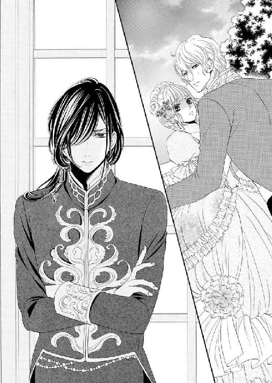
「............」
腕組みをして冷ややかなまなざしを向けるセルジュを前に、ついにフランソワの表情から笑みが消えた。
二人の鋭いまなざしが宙で激しくぶつかり合い、目には見えない火花を散らす。
会話の応酬の端々に刺々しいものを感じて、エレノアはうろたえる。
ややあって、勝ち誇った笑みを浮かべたセルジュが手を差し出してきた。
「エラ、シルヴァール公爵が君を捜していた。私と一緒に来なさい」
「伯父様が？ フランソワ様、申し訳ありませんが失礼します」
張り詰めきった空気に戸惑いながらも、エレノアは腰を落としてフランソワへと一礼し、セルジュのほうへと歩いていく。今すぐ駆け出して彼の胸に飛び込みたいという衝動を我慢しながら。
「──また後で」
「......っ!?」
すれ違いざま、フランソワに耳元に囁かれた。
ぞくりと背筋が寒くなり、エレノアはセルジュの元へと急ぐ。
すがるように彼を見つめると、セルジュは「もう大丈夫だ」という風に頷いてみせた。
「では、失礼する」
セルジュは彼女の腰へと手を回すと、肩越しに侮蔑のまなざしでフランソワを一瞥して、大広間へと戻っていった。
ж ж ж
大広間へと戻るや否や、エレノアはようやく緊張から解放され、安堵のため息をついた。
いまさらのように足がガクガクと震え出して腰が抜けてしまいそうになり、セルジュの腕にしがみついてしまう。
あのまま好きでもない相手に強引にキスをされていたらと考えるだけで怖くなる。
否、キスだけで済めばまだいいほうで、獰猛な牡の本性が見え隠れしていたフランソワの態度からすれば、それ以上の行為をされていたかもしれない。
具体的にそれがどういうものかは分からないが、セルジュにされたような恥ずかしい行為であろうことは想像がつく。
キスだけでも嫌だったのに──あんな行為まで無理やりされていたらと考えるだけで、血の気が引いていく。
（......大人のレディになるってそういう恥ずかしい行為をするということ？ でも、まさかお母様たちがそんなひどいお願いをしていたなんて信じられない......一体どうして......）
信頼していた人たちが自分を傷つけるような行いをしてくるなんて思いもよらなかった。
今まで信じていた世界が音を立てて崩れていき、沈痛な面持ちで胸を押さえて涙ぐむ。
「エラ、大丈夫か？」
「............」
セルジュが、不安定にぐらつくエレノアの身体を支えながら尋ねてきた。
彼に心配をかけてはならないと、必死に笑顔をつくって頷いてみせようとしたエレノアだったが、どうしても引き攣った表情になってしまう。
今まで自分の感情に素直に生きてきたのに、いきなり本音を隠す仮面を被ろうとしても無理があった。
「どうやら大丈夫じゃなさそうだな」
呟いたセルジュは、周囲の視線から彼女を庇うようにして大広間から一旦離れると、人目を避けて控えの間へと移動した。
控えの間はダンスなどに疲れた人々が休憩をとるために設けられた部屋だが、まだパーティーは始まったばかりだということもあり、利用している人はいない。
それを確認してからセルジュはドアを閉めた。
次の瞬間、ついにエレノアの目から涙がぽろりとこぼれ落ちてしまう。
「......す、すみま......せん......私......」
「もう大丈夫だ──」
セルジュが彼女の肩に手を置くと、涙を唇で優しく拭った。
「............」
目を細めて表情を弛緩させるエレノアだが、いったん堰を切ってしまった涙はなかなか止まりそうにもない。
「すみません......伯父様にご挨拶をしなくてはならないのに......」
「いや、君をあの男から引き離すために適当な理由を用意したに過ぎない」
「......そうだったんですか」
やはり、相手の言葉の裏にまで思いを巡らせることができず、そのまま受け取ってしまう子供っぽい自分に嫌気が差して力なく俯いてしまう。
「私......駄目ですね。セル兄様に忠告していただいたのに」
セルジュは黙ったまま彼女の身体を抱きしめると、そのほっそりとした背中をいたわるように撫でた。
だが、彼に優しくされればされるほど、エレノアはいたたまれない気持ちになる。
「いや、さすがにまさかここまで強引な手段に打って出てくるとは想定外だった。知っていれば最初から君を一人にはしなかった。怖い目に遭わせてしまって悪かった」
「そんな......よしてください。セル兄様は何も悪くないのに......」
「私は君を護ると言った。自分の言葉には責任を持つべきだ。私の甘さが招いたことだ」
自分を責め、けしてエレノアを咎めようとしない姿勢はいかにも彼らしいストイックなものではあったが、いっそ責められたほうがいいとすら思ってしまう。
「──王となって以来、非情であるように努めてはきたのだがな。私としたことが、女同士というのは末恐ろしく情け容赦ないものなのだということを失念していた......」
苛々と前髪を掻きあげたちょうどそのとき、彼の金の瞳が恐ろしい輝きを放っていることに気付いたエレノアの背筋が凍る。
彼は冷笑を浮かべると、エレノアの頭を撫でながら歌うように言った。
「今度こそ安心していい。さっきの男の許しがたい振る舞いは、姉上と君の母上の私への宣戦布告と見なす。私を敵に回したことを後悔させてやろう」
「......そんな恐ろしいこと言わないでください。大体、本当にお母様とリディ姉様があんなことを......信じられません......何かの間違いでは......」
「信じたくはないが──初対面であるにもかかわらず、あれほど大胆不敵な振る舞いに及ぶにはそれなりの後ろ盾が必要だろう。それに君は身に覚えがあるはずだ」
「............」
大切に思っている人たちを疑いたくはないが、母とリディの意味深な会話を思い出し、反論することができない。
「だけど、どうして......そんなひどいことを......」
「あの二人はそれをひどいことだと思っていないからだ。君のためだと信じているのだよ。だが、ずっと子供扱いしてきておきながら、今になっていきなり君に『大人になれ』と急かし、強硬手段をとるのも酷な話だ」
「......悪意はなかったということですか？」
「エラ、悪意がなければマシだという考えは捨てなさい。自覚のない他人を傷つける行為ほど恐ろしいものはない」
セルジュの言葉には重みがあり、一瞬明るくなったエレノアの表情が再び曇る。
「己の行いを正義と信じて疑っていないからこそ、他人を奈落まで突き落とすことも躊躇わないのだ」
「あんなことが私のため、正義だなんて......」
バルコニーで味わった怖気を思い出して、エレノアは青ざめ唇をきつく噛みしめる。
「私、セル兄様のおっしゃることがようやく分かってきました......お母様とリディ姉様の正義は私が望んでいないこと......ですよね？」
「ああ、分かってもらえたならば何よりだ」
「今まで正しいものは一つだけだと思っていました。私にとって正しいものが他の人にとっても正しいことだと。でも、そうじゃない......」
「自分が正しいと思うことは自分の力で貫かねばならない」
「これまでと一緒じゃ駄目ということですね......もっとしっかりしないと。嫌なことは嫌だって主張できるようにならないと......」
ようやく自分の置かれた深刻な状況が理解できたような気がする。
今までずっと親の言葉は絶対で、逆らおうなんて考えたことは一度もなかった。期待されるようにふるまってきた。まるで人形のように。
そんな自分がいまさら逆らおうだなんて、果たしてできるのだろうか？
だが、本能がここだけは絶対に譲ってはいけないと警鐘を鳴らしていた。
（これまでと同じように操り人形でいてはならない。周囲に流されては駄目......）
もしもそれができなければ、きっととんでもないことになってしまう。後悔してもしきれないことになりかねない。そんな不吉な予感が胸に押し寄せてくる。
「......リディ姉様とお母様はフランソワ様と私の結婚を望んでいて、そのためにはさっきのように手段は選ばないつもりなのでしょうか？」
「ああ、そのとおりだ」
「でも、良く知りもしない......好きでもない人との結婚なんて考えられません」
まっすぐ前を向いて毅然と言い切った彼女を見て、セルジュは誇らしげに頷いてみせる。
「いい表情だ。これは姉上たちも誤算だったろうな。自分たちの思うがままに操れる人形を創ってきたつもりなのだろうが、君は純粋すぎて醜い行いに従うことは是としない。それでこそ私だけの人形だ。君は誰よりも清らかで美しくあるべきだ」
「私はお母様やリディ姉様のお人形じゃありませんもの。セル兄様だけのお人形ですから」
エレノアは思いの丈を込めて彼をじっと見つめると、一言ずつを噛みしめるように言った。それは、勇気を振り絞ってようやく伝えることができた遠回しな告白だった。
胸の鼓動が加速して思うように息ができない。彼に気づいてもらえるようにという思いと、気付かれませんようにという相反する思いが激しくぶつかり合っていた。
今まで大切に築き上げてきた実の兄妹のような関係が壊れてしまうのは怖い。
だけど、子供の頃から大切に育んできた彼への想いを胸に秘めたまま、好きでもない人と結婚させられることだけは絶対に嫌だった。
（私はセル兄様が好き......セル兄様以外に触られたくなんかない......）
祈るような思いで、彼からの返事を待つ。
「............」
セルジュは黙ったまま、アメジストの瞳の奥を覗き込むかのように見つめていた。
思いつめたようなそのまなざしには苦悩と葛藤とが滲み出ている。
しばらくの沈黙の後、ため息混じりに低い声で呟いた。
「──それが君の願いか」
エレノアが頷いてみせると、彼は眉根を寄せ、寂しげな笑いを浮かべて自嘲めいた口調で言葉を続ける。
「いや、むしろそれは私の願いといったほうが正しい。君をずっと私だけのものにしたいと願ってしまった。君がずっと純粋なまま、変わらないことを望んでしまった。だから、君をこの世のありとあらゆる醜いものから護り続けてきた。赦されないことだとは承知の上で」
「どうして赦されないのですか？ ずっとセル兄様のお傍にいたいのに......大人になってしまったら......もう一緒にはいられなくなるということですか!?」
エレノアは縋るように必死に尋ねる。
自分でも信じられないほど動揺していた。胸が引き裂かれるような痛みは、先ほどフランソワに唇を奪われそうになったときの比ではない。今までその存在を感じつつも目を逸らしてきた不安が、今はっきりとした形を成して眼前に迫っているのを肌で感じる。
「それなら私......大人になんてなりたくないです」
「そういうわけにはいかない」
「ならば、一体どうすればセル兄様のお傍にいられるのですか？」
「............」
愚直なほどまっすぐな質問にセルジュは視線をさまよわせた。その一瞬の迷いにエレノアは救いを見出す。
「お傍にいられるならばどんなことでもします！ 方法があるなら教えてください！」
「──そういうことは安易に口にすべきことではない。子供時代のように、ただ一緒にいたいからという理由だけでは一緒にいられない。君も分かっているはずだ」
「でも......」
「我々の立場上、赦されないことだ。王族にとって優先されるのは個ではなく公。常に国にとっての利となるよう動かねばならない。君もそう教え込まれたはずだ。常に他人の目を意識して、尊敬されるような振る舞いを心掛けるように。敵は極力作らないようにと──」
「それは分かっています......それでも何か方法があるならば......私は......」
「君は親が選んだ相手と結婚しなければならないし、私もまた国にとって一番利となる相手を選ばねばならない。いつまでも一緒というわけにはいかない」
「............」
直接的な拒絶の言葉に打ちのめされて押し黙る。
男女がずっと一緒にいるためには結婚しなければならない。しかし、自分とセルジュは結婚できない。
分かってはいたつもりだった。だが、いざその場に立たされてみて、ようやくその残酷な現実が迫ってくる。
「何も結婚しなくても......今まで同様......懇意にさせていただければ......」
震える唇から紡ぎ出される言葉が白々しく虚ろなものであることは、自分自身が一番よく分かっていた。きっと見抜かれているに違いない。彼の目を直視することができなくなる。
「エラ、それはずっと一緒にいる相手への裏切りになる」
「......私にとってのお相手というのは......さっきの方なんでしょうか？」
「ああ、そうだ。確かに──姉上と母上が吟味した相手だけあって良い縁談だとは思う」
「............」
まるで他人事のように淡々と口にする彼を信じられない思いで見る。
あくまでも客観的な意見を述べたに過ぎないのだろう。
だが、ひそかに温めてきた彼への想いを土足で踏みにじられたかのような気がして、目の前が真っ暗になる。
（私......セル兄様のこと......こんなにも好きだったなんて......）
胸を刺す痛みに顔をしかめながら愕然とする。
彼への想いは、恋心というよりは家族愛に近いものだとずっと信じてきたはずなのに。こうして会話を重ねれば重ねるほど、ただ単にそう自分に言い聞かせようとしてきたに過ぎないと気付かされる。
（もしも、家族としての愛だったとしたらこんなに胸が痛むはずがないもの......悲しむことなんて何もないはずだもの）
まさか自分が叶わない恋に身を焦がすなんて思いもよらなかった。
途方に暮れたエレノアは、独り言のようにぽつりと呟いた。
「私......あの人にキスされそうになって......ものすごく嫌でした......セル兄様以外は嫌だって思ってしまって......」
「エラ、自分が何を言っているか分かっているのか？」
セルジュの低い声がエレノアの言葉を遮って彼女を咎めた。
「でも、自分の本当の心に嘘はつけませんから......」
困り果てたように涙ながらに悲しい微笑みを浮かべたエレノアを目にした瞬間──彼は衝動的に彼女をきつく抱きしめる。
愛する人に息もできないほど強く抱きしめられたエレノアの頬に涙が伝わり落ちていく。
抱きしめ合ったまま、二人は沈黙に身を委ねる。重なり合った胸は、くるおしいほどの鼓動を奏でていた。
言葉はなくとも、互いの想いが伝わりあっていく。
「......もっと早くに気づけばよかったのに。それか永遠に気づかなければよかったのに」
やりきれない切なさに、アメジストの双眸から涙が煌めき落ちていく。
「気付かせるつもりなどなかった。今ならまだ間に合う。いい子だから忘れなさい」
「嫌です......気付いてしまった以上、忘れることなんてできません。そんなに私は器用じゃありません。それはセル兄様が一番よくご存じのはず」
どこまでもひたむきなエレノアにセルジュは複雑な表情を浮かべる。
「私はずっとセル兄様だけのお人形でいたいです。今までお母様の言いなりだった私にいまさらそんなことを言う権利はないのかもしれないけれど、悪い子だって叱られてしまうかもしれないけれど。私が兄様だけのお人形でいられる方法があるならばどうか教えてください」
エレノアは彼を見上げると、その目を見つめて必死に訴えかける。
自分の胸の奥にこんな情熱が隠されていたなんて知らなかった。
（こんな駄々をこねる子供のようにわがままを言うなんて。兄様を困らせるだけなのに）
頭ではそう分かっていても、感情を抑えることができない。
もはや後には退けなくなったエレノアは、彼の胸に顔をうずめ、断頭台に立たされ処刑を待つような想いで返事を待つほかなかった。
鉛のように重い沈黙が辺りを支配していた。
どのくらいそのままでいただろう。
ややあって、長く深いため息をつくと、セルジュの苦しそうな声が静けさを破った。
「方法は──ある」
「っ!?」
思わぬ返事に顔をあげた彼女の目に飛び込んできたのは、彼の沈痛な面持ちだった。
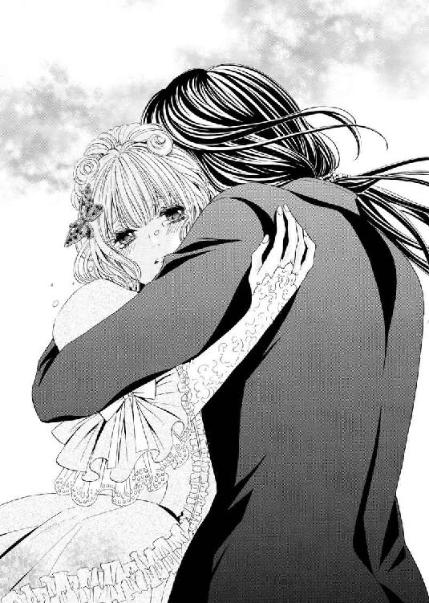
「だが、その方法は君を不幸にしてしまう。それは私の本意ではない」
「......不幸になってもいいです。ずっとセル兄様のお傍にいられるなら」
「そういうわけにはいかない。君は幸せになるべきだ」
強い決意を滲ませた強い語調には反論の余地はない。黙りこくってしまったエレノアの頬を撫でながら、セルジュは独り言のように呟いた。
「──君にこんなことを言わせてしまうなんて。私はなんて罪を犯してしまったのだ」
「罪だなんて、そんなこと言わないでください......」
「......いや、これは私の罪だ。私には罪を償い、君を幸せにする責任がある」
それは、聞きようによってはまるでプロポーズのような甘やかな言葉だったが、彼の端正な表情は歪み、その口調は忌々しげなもので。エレノアは悲しくなる。
「姉上も君の母上も同じ責任を感じているのだろうな。同じ罪を犯した私にはよく分かる」
「兄......様？」
「だが、さっきみたいな強引なやり方だけは認めない。君の幸せを願うと言いながら、まだ何も知らない君を深く傷つけるようなやり方を無理強いするなど言語道断だ」
突如、セルジュが恐ろしい微笑みを浮かべた。
怒りと憎しみを顕わにした彼の鬼気迫る様子にエレノアは震えあがる。
（あの時と同じ......）
彼女は、子供の頃、女友達からのプレゼントを彼に捨てられてしまったときのことを思い出していた。
異様なまでの独占欲──いつも穏やかでクールな彼が時折垣間見せる本性は、ぞくりとするほど恐ろしく。だが、同時に苛烈なまでに美しくもあった。目を背けたいはずなのに、どうしようもなく惹かれてしまう。
セルジュは、危険な予感に身震いする彼女の顔を自分のほうへと向かせて尋ねた。
「エラ、私にキスをされるのは嫌ではないと言ったな？」
エレノアは白い頬を薔薇色に染めて、ぎこちなく頷いてみせる。
刹那、セルジュの片側の瞳が凄味を帯び、獣じみた光を放つ。
「ならば、方針を変えるとしよう。私が責任を持って君を大人にしてあげよう──」
「セル......兄......様？」
（大人に......って......キスの続きをしてくださるってこと？）
同じ言葉でも、発言する相手によってこうも違うものなのだろうか？
フランソワに同様のことを言われたときには怖いとしか思わなかったのに、セルジュに言われると胸の奥が熱を帯び、無意識のうちに熱いため息をついてしまう。
未知の世界に足を踏み込むのはとても怖いことだったが、他ならぬセルジュが導いてくれるのならばと勇気づけられる。
「だが、これだけは約束してほしい。君が大人のレディとなった暁には──自分に課せられた役目を果たして必ず幸せになること。いいね？」
「......はい」
エレノアは複雑な想いに駆られつつも、彼に頷いてみせた。
すると、セルジュは彼女の頭をいとおしげに撫でてからいったん彼女から離れると、扉まで戻り、後ろ手に鍵を閉めた。
カチリという金属質な音を耳にした瞬間、エレノアの心臓が大きく跳ねる。
青い瞳をぎらつかせたセルジュが彼女のほうへとゆっくりと歩いてくる。その目は彼女のドレスを引き裂いてきたときと同じものだった。前髪に隠された金色の瞳は、どれだけ獰猛な輝きを放っていることだろう。想像するだけで胸がざわつき息が乱れてしまう。
キスの続き──これから一体どんなことをされてしまうのだろう？ 指で弄られたとき以上に恥ずかしいことをされてしまうのだろうか？
不安と期待が濁流となって胸に押し寄せてくる。
セルジュはエレノアの手を恭しくとると、三人掛けのアンティークのソファへと促した。
そして、彼女をそこへ座らせると、フリンジのついたクッションを頭と腰へとあてがい、甘い口づけをしながら覆いかぶさってくる。
「ン......」
彼の重さを感じながら、エレノアはそっと目を閉じて彼の唇を受け入れる。
羽に表面をなぞられるような柔らかな感触が心地よい。いたわり慈しむような優しいキスに酔いしれる。
セルジュは彼女の唇をじっくりと味わいながら、丁重な手つきでドレスを脱がしていく。
コルセットを緩められ、真っ白な乳房が震えながら姿を見せた。
まだ成長途上にある硬さを残した二つの丘を彼の指が丹念に揉みほぐしていく。
「あ......ン......う、ン......」
エレノアが顔をしかめて躊躇いがちに艶めいた声を上げると、セルジュはよりいっそう指を大胆に動かし、淡い桃色の突起をくすぐるように責め始めた。
「く、くすぐった......いです......セル兄様......あ、あぁ......」
「それだけじゃないだろう？ もうこんなに尖らせて──もっと虐めて欲しいと主張しているようだ」
片方の突起を摘んで指の腹で捏ね回しつつ、もう片方の乳首にキスをした。
湿った滑らかな舌に触れられた瞬間、エレノアが「あぁっ!?」と切ない声をあげ、反射的に彼の頭を抱きしめる。
「もっとして欲しいというおねだりか。いいだろう」
セルジュが彼女の胸を中央に寄せたかと思うと、左右交互に乳首を舐めかじり始めた。
敏感な二つのしこりから滲んでくる面映ゆい感覚にエレノアは身をよじる。
「あ......変な感じ......がして......ン......あ、あ......やっ!? どうしてこんなに......」
濡れた舌先で先端を弾かれるたびに下腹部の奥のほうが疼き、どういうわけか落ち着きなく腰が揺れてしまう。
月のものにもよく似た感覚──身体の奥からじわりと何かが沁みだしてきて、彼女の下着を濡らしていった。
「パーティーの前に解しておいて正解だったようだな。あくまでも結果論だが──」
セルジュは、彼女の乳首を吸い上げながら、舌を小刻みに動かして柔肉を揉みしだく。
最初こそ焦らすような優しい責めだったのに、だんだんと愛撫が激しくなってきて、エレノアは時折痛みすら感じるようになる。
だが、そのかすかな痛みが快感のスパイスとなり、まだ初心な少女の官能を巧みに花開かせていった。
「ン......あ、あぁっ......兄様......こ、声が......我慢できな......こんなはしたない声、嫌......なのに。あぁ......」
エレノアは、時折身体を甘く痙攣させながら困り果てたように彼へと訴えかける。
「我慢しなくてもいい。私は君の可愛い声をもっと聞きたい」
「で、でも......誰かに気付かれてしまったら......」
ドアと壁一枚隔てた向こう側では、主役不在の誕生パーティーの真っ最中。
しかも、フランソワを会場に残してきてしまった以上、いつリディとセリスが二人を捜しにやってくるかしれない。
結婚する前の身でありながら、こんな場面を見られてしまえばどうなるか。考えただけでエレノアは怖くなる。
「構わない。パーティーにはつきものの大人の情事だ。それを邪魔立てするような無粋な人間はそう多くはない」
「リディ姉様と......お母様も？」
「もはや何をどうしようとも手遅れだと思い知らせるにはむしろ見せつけてやるほうがいいだろう。姉上と君の母上は私を本気で怒らせた」
凄絶な笑みを浮かべると、セルジュはドレスの裾を絡げて、エレノアのほっそりとした足を露出させた。そして、膝を割り開くと、ベルトを外しながら身体を進めていく。
「セル......兄様......一体......何を......」
秘所を覆った薄布越しに硬いものを感じ、エレノアは全身をこわばらせると、上ずった声で彼へと尋ねた。
「アダムとイブの話は有名だろう？ 元々男と女は一つだった」
聖書の有名なエピソードのうちの一つで、教会に通う人間ならば誰でも知っている話だが、こんなときにそんな引用をもってくるなんて、神への冒涜のように思えてならない。
今まで周囲の望みどおりに清く正しく生きてきたエレノアの罪悪感がより一層煽られる。
「二つに分かたれたものを再び一つにすることによって人は本来あるべき姿を取り戻す。その儀式のようなものだ」
「私と兄様が......一つに......」
そんなこと本当にできるのだろうか？
具体的に想像できず、エレノアは半信半疑の面持ちで首を傾げる。
が、すぐに彼が言わんとしようとしたことをその身をもって知ることとなった。
セルジュが、すでにいやらしく湿った彼女の下着を片側へと寄せると、濡れた花弁へと熱い塊を押しつけてきたのだ。滑らかな感触と恐ろしいほどの硬さが奥へと侵入を試みる。
「っ!? やっ!? あ、あ......な、何......そ、れ......兄様......こ、怖......い」
前人未到の狭い膣道を強引に割り開こうしてくる灼熱の肉棒の責めに腰が引けてしまう。本能的な恐怖に衝き動かされ、エレノアは彼から逃れようとソファの上で身体を波打たせた。
しかし、片方の足を固定され、腰を抱え込まれてはもはやどうすることもできない。
恐ろしいほどの圧迫感が引き続き彼女の身へと襲いかかる。
「っ!? うっ！ あ、あ、あぁああああっ！」
一瞬、我を忘れて鋭い声をあげてしまった。
が、間一髪のところで彼の大きな手が口を塞いできて事なきを得る。
「......っン......っく、ぅ......あぁ......」
エレノアは愛らしい表情を苦悶に歪めて胸を上下させながら、自分にのしかかってくるセルジュを不安そうに見上げた。
「不安がらなくてもいい。エラ、大丈夫だ──ゆっくり深呼吸をしてみなさい」
優しい口調で語りかけるように言うと、セルジュは彼女が落ち着くまで指で乱れたブロンドを梳きながらじっと待つ。
足の付け根にはしる痛みを必死にこらえながら、エレノアは言われたとおりに深い息を繰り返してみる。すると、力が抜けたせいか確かに少しだけ痛みが和らいだ。
「いい子だ。エラ。最初はきついかもしれないが、少し我慢をすれば今までに味わったことのない快感を得ることができる。私を信じて身を委ねなさい」
汗ばんだ秀でた額にキスをすると、セルジュは注意深く自重をかけていき、再び陰茎をいたいけな肉壺へとじりじりと埋め込み始めた。
「っ!? ン......う、っく......ンン......い、痛......兄様......」
「どうしても声を我慢できなさそうなら私の手を噛んでいなさい」
目の前に手の甲を差し出されたが、エレノアは躊躇する。
しかし、そうこうしている間にも雄々しい肉槍がさらなる奥を目指して攻め込んできて、悲鳴じみた声が喉の奥から今にも放たれそうになる。
（だ、駄目。こんなところお母様たちに見られでもしたら大変なことに......我慢しなくては）
いよいよ追い詰められたエレノアは、申し訳なさそうに彼の手の甲へと歯を立てた。
「っつ!? う......ン......む......ぅ......ンン......」
甘噛みでなんとか声を抑えるつもりだったが、あまりにも凄まじい痛みと圧迫感とについきつく噛んでしまう。
だが、セルジュは形の良い眉を少し動かしただけで、一際狭くなった箇所を突破すべく腰にさらなる力を込めていく。
やがて、肉幹に太い血管を浮かび上がらせた剛直が、ついに処女膜を突破した瞬間、身体の奥で何かが爆ぜ、エレノアは目を大きく見開くと背筋を弓なりに反らせた。
「ンっ！ ンンンンンンンンッ!?」
破瓜を迎え、まぶたの裏が真っ赤に染まる。
膝頭がガクガクとわななき、全身へと震えが拡がっていった。
「エラ、大丈夫だ。よく堪えた」
セルジュが熱い吐息混じりの声で耳打ちすると、硬直しきった彼女の身体を包み込むように抱きしめてその頭を撫でる。
「う......っく......ぅ......ンン......」
エレノアが薄く開いた目には涙の膜が張り、アメジストの瞳が頼りなく揺れた。
奥に張り詰めきった塊が興奮に跳ねるたびに、そのわずかな振動すら怖くて身動き一つできない。息をすることすら躊躇われるほどだった。
まさか自分の身体がこんなに太いものが入る仕組みになっていたなんて思いもよらなかった。それにしても、この裂けてしまうのではないかというほどの痛み......少し我慢すれば気持ちよくなると言われても疑わずにはいられない。
（私ったら......セル兄様を疑ってしまうなんて......）
今までずっと信じてきた彼を疑ってしまう自分が許せず、自己嫌悪に駆られる。
一方のセルジュは彼女のまぶたに交互にキスをすると、肉芽へと指を忍ばせていく。
花弁の奥に息づくしこりを掘り出すと、愛液を指先にまぶして入念に塗り込み始めた。
「っ!? あ、あ、あぁっ......や......ぁ......ン......」
鋭い快感が恥骨から子宮へと駆け抜けていき、エレノアは首を左右に振りたてる。
破瓜の痛みを和らげるべく、セルジュは彼女の乳首に舌をじっくりと這わせながら、指先を振動させて陰核に刺激を与えていく。
剥き出しにされた真珠は真っ赤に充血し、ほんのわずかな刺激ですら貪りにかかる。
息を乱しながら、エレノアは細い肩を左右に突き出すようにして身悶える。
乳首と陰核の両方を執拗に責められるたびに、身体の中心を串刺しにした肉槍をきつく締め付けてしまう自分が恥ずかしい。
「──ああ、ものすごく感じているようだな。エラ。君の恥ずかしいところを通して、全部伝わってきている」
「そ......それ......は......」
「さっきまでは外へと追い出そうとしていたのに、今はもっと奥へと誘うかのように物欲しげな動きを見せるようになった」
「あぁ......嘘です。そんなこと......。ものすごく痛くて......壊れてしまいそうで。怖くて仕方がないのに......ン!? あ、あ、あぁあ......ン......」
喘ぎながら彼の言葉を否定しようとするエレノアだが、そのたびにセルジュが乳首を強く吸いあげては歯をたてて邪魔をする。
「あ、あ......ン、セル兄様......意地悪しないで......も、もう赦して......ください。こ、これ以上は......無理......です」
「そうか。他ならぬエラの頼みならば、そろそろ赦してあげなくてはな」
彼女の安堵した表情を眺めながら、セルジュがゆっくりと腰を引いていった。
圧迫感から解放されていく際に、亀頭の出っ張りに敏感な膣壁を抉られた瞬間、エレノアは声ならぬ声をあげて達してしまう。
ヴァギナが剛直をきつく握りしめて絞りたて、つなぎ目からは甘酸っぱい香りの恥蜜が洩れ出した。
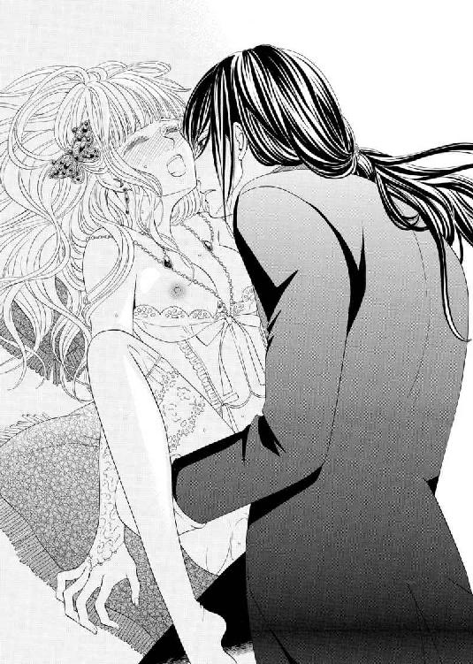
「はぁはぁ、あ、う......い、今の......は......」
「気持ち良かっただろう？ まだまだこんなものではない。女性の身体にはいたるところに官能の芽が隠されている。それを見つけて花開かせてやるのが男の役目だ」
セルジュが腰を浮かせるようにして、腹部側にあるざらついた膣壁を亀頭で刺激してきた。尿意にも似た快感が奥のほうで肥大し、エレノアは両手で顔を覆い隠すと首を力なく左右に振り立てる。
「い、や......そこ......おかしくなって......何も考えられ......なく......ンッ！ あぁ......」
「何も考えなくていい。ただ私だけを感じていなさい」
「......セル兄様......だけ......」
「今まで大切に磨き上げてきた君を花開かせる権利を他の男などに渡しはしない。君を大人のレディに花開かせるのは私だ。世界中の男たちが欲してやまないドールにしてみせよう」
腰を緩やかにグラインドさせながら、セルジュは彼女の白磁の肌に唇を押しあてては強く吸っていく。ほっそりとした首筋や鎖骨、胸元へと赤紫色の痕が刻まれていった。
「兄様......痕が......」
「君はまだ私だけの人形だ──誰にも渡さない。これはその証だ」
彼が自分の所有権を主張してわざと痕を残しているのだと気付いたエレノアは、愛する人がこれほどまでに自分を欲してくれることがうれしくて笑みくずれる。
しかし、その反面、「まだ」という彼の言葉が棘のように胸に刺さる。
いずれは彼の元を離れねばならないということをけして忘れてはならないという彼からの忠告のような気がする。
「エラ、私が君を淫らで美しい最高のドールに仕上げてあげよう」
そう言うと、セルジュはいよいよ彼女の腰を本格的に抱え込んでの抽送を始めた。
「あ、あ、ンッ......あぁ......兄様......」
彼の動きに合わせて、エレノアは切なげに身を波打たせて甘い嬌声を洩らす。
太い肉棒が身体の中心を往復するたびに足の付け根が軋み、鋭すぎるほどの愉悦が走り抜けていく。
潤滑油と化した愛液が湿ったいやらしい音をたてては、彼女の羞恥心を煽りたてる。
だが、ひっきりなしに襲いかかってくる悦楽の高波に苛まれ、エレノアにはもはやそんなことを気にする余裕は残されていない。
「ンッ！ っく......うぅうっ!? や......あ、あ、あぁああっ！」
自分の手に歯をたてると、必死に喘ぎ声を堪えようとするが、セルジュは彼女にそれを赦さず自らの手の甲を再び噛ませた。
エレノアは我を忘れて、彼の手の甲にきつく歯を立ててしまう。
（あぁ、これが......一つになるということ。大人になるということ......）
自分が自分でなくなってしまうようなくるおしい快感の渦中に呑まれて怖くなる。
縦横無尽、がむしゃらな抽送に息が乱れて顔が熱く火照り、幾度となく意識が遠のくが、それを察するたびにセルジュが気つけ代わりに乳首に歯をたててきた。
「いっ!? っつ......ぅ......あぁっ!? い、痛......も、もう......おかし......い。あ、ンぁあ」
腰を雄々しく動かすセルジュの下で、意識を失うことすら赦されず、エレノアは暴れるように身悶える。すでに舌がもつれてまともな言葉を紡ぎ出すことすら難しくなっていた。
その舌足らずないやらしい嬌声を堪能しながら、セルジュは熱を込めて肉壺を穿つ。
処女を散らしたばかりだというのに、姫壺は剛直の巧みな責めに応じていた。
一番奥に衝撃がはしると同時に、子宮から全身へと絶頂のさざ波が拡がっていく。
「あ、兄......様っ!? も、もう......わ、私......変に......あぁ、変に......なって......これ以上は駄目で......す。ゆ、赦してっ！ あ、あぁああ」
形容しがたい強烈な感覚が加速度的に下腹部の内側で膨らんでいき、エレノアは切羽詰まった艶声をあげながら責めの中断を乞う。
しかし、セルジュはピストンを止めるどころか、さらに力を込めて腰を鋭く振りたてた。
「う、あ、あ、あぁああっ！ いやぁあああぁっ！」
悲鳴じみた声をあげると同時にエレノアは全身を激しくわななかせながら、想像だにしなかった絶頂を迎えた。
強くいきんだ瞬間、頭の血管が切れてしまったかのような錯覚を覚える。
一瞬、頭の中が真っ白になり、そのすぐ後にうっとりするようなまどろみが訪れた。
エレノアは蕩けきった表情で目を閉じると、ぐったりと身体をソファに預け切る。
セルジュは小さく呻くと、名残惜しそうに彼女の中から半身を引き抜いた。
蜜しぶきをあげながら現れでてきた濡れた怒張から白濁液が勢いよく飛び出す。
幹をしごくようにして最後の一滴まで彼女の腹部に注ぎ切ってから、彼は深いため息をつくと、まるで糸を切られたマリオネットのように身体を弛緩させたエレノアを見下ろした。
「エラ、君をついに私のものにしてしまった──」
罪悪感を色濃く滲ませた彼の言葉に薄く目を開けると、彼女は彼を安心させようと健気に微笑んでみせた。
「......そんな顔......しないでください。セル兄様は......何も悪くありません......私がわがままを言ってお願いしたことなんですから......」
「絶対に赦されないことだと分かっておきながら、君が他の男に迫られているのをどうしても見過ごすことはできなかった──君があの場に居合わしていなければ私はあの男に何をしたか分からない」
「うれしい......です。そんな風に思ってくださったというだけで......十分すぎます」
彼のくるおしいほどの情熱がうれしくて、エレノアの目に涙が滲む。
背徳的、罪深い行為だと分かってはいても、彼と一つに溶け合えた瞬間の至福感は何ものにも代えがたいものだった。
だから、考えすら及ばなかった。前髪に隠された彼の獣の黄金の目が、どれだけくるおしく恐ろしい輝きを放っていたか。彼の言葉がどれほど危険なものであったか。
ややあって、セルジュは彼女をじっと見つめて言った。
「──これは君と私だけの秘密だ。いいね、エラ」
「はい......誰にも言いません......」
「君を純粋無垢な人形に仕立て上げたのは私だ。穢れないものは脆く傷つきやすい。だからこそ私が護ってみせる。エラ、君をどこに出しても恥ずかしくないレディにしてから幸せの道へと送り出すとしよう。それがせめてもの罪滅ぼしだ」
「罪だなんて......そんな風に言うのはやめてとお願いしているのに......」
セルジュは彼女の汗ばんだ額をやさしく撫でながら苦笑すると、いたわるように身体を抱き起こした。
そして、彼女を姿見の前に立たせると、コルセットを慣れた手つきで締め直していく。
間もなく、まるで何ごともなかったかのように身支度が整った。
が、首筋や胸元に刻まれた唇の痕は生々しく残されたままで──エレノアは姿見に映る自身の姿を正視できない。
「この痕を目にするたびに君は私を思いだすだろう」
鏡越しに笑みかけると、セルジュは彼女の髪を下ろしウェーブがかった長い髪を指で丁寧に絡めながら首回りへと垂らしていき、首筋やデコルテに視線が集まらないように仕上げた。
「これで大丈夫だ。ごまかせるだろう」
「ありがとうございます」
「私と君だけの秘密を隠し通すように。いいね？」
「は、はい......」
果たして隠しおおせるか分からないが、エレノアは素直に頷いてみせた。
二人だけの秘密──懐かしく甘く妖しい響きに胸が躍る。
「──では、君は先に広間に戻りなさい」
「え、でも......セル兄様は......」
「私が一緒に出ていったら怪しまれるだろう？」
「あ......わ、分かりました......」
彼の言わんとすることに気付いたエレノアの頬に朱が散らばる。
エレノアは後ろ髪をひかれつつも、彼に命じられたとおりにおぼつかない足取りで控えの間を退出していった。
ж ж ж
エレノアが残していった髪飾りを手にのせたセルジュがソファに腰掛け、一人静かに物思いに耽っていると、ドアがノックされた。
ノックの音は鋭く無遠慮ともいえる攻撃なもので、眉をひそめる。
返事をするよりも先にドアが開かれた。
現れたのはリディだった。腰に手を当て、目を吊り上げて彼を鋭く睨みつけている。
「姿が見えないと思ったら、こんなところにいたのね」
刺々しい口調には明らかに弟を責める響きがあった。
だが、セルジュは薄い笑みすら浮かべて、気付かないフリを貫く。
「──さっきエラに会ったわ。フランソワからも話は聞きました」
ポーカーフェイスで姉の言葉を聞き流すと、髪飾りを丁重な手つきで胸元にしまった。
「セルジュ、私の目をごまかせると思っているの？」
「その言葉そのままお返ししますよ。姉上」
冷ややかな声で応じる弟に、リディは眉をひそめる。
「まるで私が悪者のような口ぶりね」
「そう聞こえるのは、姉上にも後ろめたい気持ちがあるからでしょう？」
一瞬、彼女の勝気な表情に迷いの色が浮かび、その目が頼りなげに宙をさまよった。そのわずかな変化をセルジュは見逃さない。
しばらくの沈黙の後、リディは押し殺した声で言った。
「そもそもは誰のせいだと思っているの？」
「姉上ともあろう方が責任転嫁ですか？」
冷笑を浮かべると、セルジュは大仰な素振りで肩を竦めてみせた。
リディは弟の侮蔑に唇を歪めると歯噛みする。
「責任転嫁ですって!? 呆れたわ。自分が犯してきた罪を棚に上げてよくそんなことが言えたものね。エラは貴方の人形ではないわ！」
「貴女の人形でもない。姉上」
「っ!? 貴方と一緒にしないで！ 私はあの子を人形扱いしたりはしないわ。れっきとした一人の女性として幸せになって欲しいと真剣に考えているの」
「だが、実際にやっていることはといえば、エラの気持ちを無視し、自分の理想と都合を押しつけているだけだ。同性ならばそれがどれだけむごいことか共感もできそうなものだが」
「......そうよ。だけど、エラのお母様も私も貴族の家に生まれた女は全員が経験してきたことよ。男の貴方には絶対に分からないでしょうけれど」
彼女の声は屈辱に震え、その青い瞳には憤りの炎が燃えさかり、まなざしには仄暗い憎悪が滲み出ていた。
「あの子だけ例外というわけにはいかないわ。いつまでも夢見る子供のままではいられない。厳しい現実を知り、受け入れていかねばならない。全てはエラのためなの。私は私の思う方法でエラを幸せにしてみせるわ。誰にも邪魔させはしない」
「──ならば、私も私のやり方で彼女を幸せにしてみせます。いかなる理由があろうとも姉上の方法には賛同しかねますから」
「貴方は彼女を不幸にしかできないわ！ 少しは自分の立場というものを弁えなさい。昔とは立場が違うという自覚はあるの？ 貴方は国王なのよ!? 国民にこの一連のおこないが知られてご覧なさい。民の模範となるべき国王自ら法を犯すなんて身の破滅よ」
「そんなことは重々承知の上です」
セルジュの落ち着き払った返事に、リディは歯噛みする。
「敵に塩を送るような真似をわざわざすべきではないと言っているの。そんな愚かなこと、私が知る貴方なら絶対にしないはずよ」
「兄上のことなら心配はいりませんよ。彼には私をどうこうできるだけの力はない。むしろ、私が警戒しているのは姉上です」
「なんのことかしら？ 他国に嫁いだ私に何ができるというの？」
「さあ、それは姉上が一番よくご存じのはずですが──」
互いの胸の内を探るような会話を交わす二人の間には、張り詰めた空気が流れている。
やがて、セルジュは腕組みをすると、ため息混じりに言った。
「私もエラも立場は弁えています。だから、どうか強引なやり方でエラを自分の思うままにしようとするのはやめていただきたい。エラは姉上たちのように強くない。無理やり大人の世界に引きずり込めば壊れてしまいかねない」
「そんな言葉信じられるとでも!? エラに対する貴方の異様なまでの執着に私が気づいていないと思って？ ミイラ取りがミイラになりかねない危険な方法を赦すわけにはいかないわ」
「信じるも信じないも姉上次第です。どうしても信じられないと仰るならば、私を敵と見なしてご自分の信じる正義を貫けばいい」
セルジュの顔から笑みが消えた。前髪を掻きあげるようにして黄金の瞳を顕わにする。
片違えの双眸は恐ろしいほどの殺意を迸らせていて、リディは息を呑んだ。
「──忌まわしい獣の瞳......」
呻くように呟くと、忌々しげに扇子を開いて毒づく。
「思いあがらないで。女の幸せは、女にしか分からないわ」
「エラの幸せを姉上が理解しているとは思えない」
「──そんなこと言われたくないわ。貴方にだけは」
きついまなざしで弟を一瞥すると、リディは踵を返してその場を後にした。
ドアが閉まるのを見てとると、セルジュは鏡に目を移し、自身の黄金の瞳を見据える。
「久しぶりに耳にした。もはや懐かしくすら感じる」
ため息混じりに呟いてエレノアの髪飾りを取り出すと、そっと触れて目を閉じる。脳裏には、先ほどの淫らな行為がありありと蘇っていた。
物心ついた頃からずっと心の奥底に秘めてきた彼女への欲望を解き放ち、ついに手折ってしまった。罪滅ぼしという大義名分を振りかざして──
「ミイラ取りがミイラか。確かに姉上の言うとおりかもしれない」
次の瞬間、片違えの双眸に力がこもったかと思うと、セルジュは手を握りしめた。繊細な飾り細工を施した髪飾りが音を立てて砕けていくのにも構わずに。
「だが、もう遅い。こうなったからには、もはや突き進むほかない」
壊れてしまった髪飾りの破片が煌きながら床へと落ちていくさまを、陶然とした表情で見つめる双眸には危うげな光がちらついていた。
黄金の瞳がぎらつき、獰猛な衝動が今にも弾けてしまいそうなほど肥大していく様を久々に味わう彼の顔には、恐ろしい微笑みが浮かんでいた。
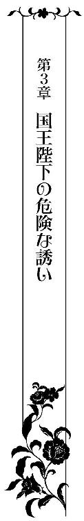
（......私、セル兄様と......一つになってしまった......）
エレノアは控えの間のソファの肘置きに身をもたせかけると、物憂げなため息をついた。
社交界デビューも兼ねた誕生パーティーから一週間が経とうとしていた。
その間、憧れの従兄弟とつくってしまった秘密を片時も忘れられずにいた。気がつけば、こうして彼と結ばれたこの場所に足を運んでは物思いに耽ってしまう。
さまざまなお稽古ごとにも身が入らず、自分が自分でなくなってしまったかのように常にぼんやりと呆けてしまい、まるで夢うつつの世界に迷い込んでしまったかのようだった。
にも関わらず、家庭教師や両親はそんな彼女を責めたりはしない。むしろ好ましい状況だと言わんばかりに温かな目で彼女を見守り、意味深な笑みを浮かべるだけ。
（たぶんお母様はフランソワ様と私がそういう関係になったのだと誤解しているのだと思うけど......）
相手がフランソワではないと知られてしまったら、しかもその相手がセルジュと知られてしまったなら一体どうなってしまうのだろう？
通常、貴族の子女は親が選んだ相手と結婚するもの。今までずっと素直に親の意向に従ってきたエレノアも無論そのつもりだった。
それがまさかこんなことになってしまうなんて──
改めて、自分がとんでもない過ちを犯してしまったのではないかと怖くなる。
従兄弟との婚姻は法律上は認められているが、相手が国王ともなると話は別だ。
王族の結婚は、国にさらなる富と繁栄を与える結婚とならなくてはならない、国王であればなおさらそうであるべきだ。リディが隣国へと嫁いだのも、それがもっとも国に利益をもたらす結婚だったから。
何度も厳しく教え込まれてきた掟をまさか破ることになろうとは思ってもみなかった。
最愛の共犯者がいなければ、罪悪感に押しつぶされていたに違いない。
「でも、セル兄様は私たちが一緒にいられる方法がないわけではないって仰っていたもの。きっとなんとかなるはず......」
今はただ彼の言葉をよりどころにするしかない。どんな方法かは想像もつかないが、彼と一緒にいられるのであればなんだってするという言葉に偽りはない。
日増しに彼への思いが募れば募るほど、その決意がより強固なものとなっていくことをエレノアは実感していた。
「......セル兄様......元気でいらっしゃるかしら。お会いしたい......」
誰にも相談できない秘密をもてあまし、そっと溜息混じりに呟いたそのときだった。
唐突にドアがノックもなしに開いたかと思うと、「あぁ、エレノア、こんなところにいたのね！ 捜したわ！」と、セリスが興奮気味に部屋の中へと入ってきた。
母の姿を目にするや否やうしろめたい気持ちに駆られ、エレノアは気まずそうに視線を宙にさまよわせる。
「......お母様、何かご用ですか？」
「ええっ！ リディ様から舞踏会の招待状が届いたのよ！ フランソワ様もいらっしゃるのだそうよ。よかったわね！」
セリスが満面の笑みを浮かべて、彼女へと封筒を差し出してきた。
フランソワの名を耳にして、エレノアは唇を噛みしめる。また強引に迫られてしまったらどうしようと不安になる。
セルジュの手ほどきをうけて、大人の世界がどんなものかおぼろげに分かってきた。彼にされたようなことをフランソワにもされるかもしれないと考えただけで気持ちが塞いでしまう。
（いずれは......セル兄様でなく......あの方とそういう行為をしなくてはならないのに......）
分かってはいるはずなのに、どうしてもセルジュ以外の男性とは考えられない。
少し想像してみただけで、生理的嫌悪感とでもいうべきものが沸々とこみあげてきて、どうしたものかと途方に暮れてしまう。
セルジュに抱かれた後、会場で再びフランソワを見かけはしたが、次々と女友達に声をかけておしゃべりに夢中になるフリをしてあからさまに彼を避けてしまった。
きっと彼も避けられていると感じただろう。そういう事情もあって、ますます彼に合わせる顔がない。
（フランソワ様が一体何をどこまでご存じか......どういうつもりだったかも分からないし......お会いするのが怖い......どんな風に振舞えばよいの？）
何か理由をつけて欠席したいところだが、こんなにも乗り気な母がそんなこと赦すはずもないし、他ならぬリディの招待を断るわけにもいかない。
エレノアは気乗りしないまま、招待状に目を通した。
「......仮面舞踏会？」
通常の舞踏会とは異なり、参加者は仮面を身につけ、身分も名も隠して参加するという秘密めいた趣向のもの。サロンなどで小耳に挟むことは何度かあったが──妖しい予感に胸がざわつく。
「あの......お母様、まだ普通の舞踏会にも参加したことがないのに......いきなり仮面舞踏会への参加だなんて......大丈夫でしょうか？」
「心配しなくてもかしこまった舞踏会よりもずっと気軽なものですよ。名前も身分も明かさずに参加できるのだから、ダンスで失敗しても恥をかくことはありません」
「......は、はい」
あまりダンスは得意なほうではないためホッとするエレノアだが、何かが腑に落ちない。
名も身分も明かさない者同士──確かに気軽な集まりなのかもしれないが、どこか危険めいた感じを受けるのは気のせいだろうか。
他人の言葉を鵜呑みにしすぎてはならない。それが例え母の言葉であっても。
それはこの間の誕生パーティーで嫌というほど思い知った。
「名前も身分も秘密にして参加するということは......逆に危険じゃありませんか？」
恐るおそる意見してきたエレノアにセリスは驚く。
「危険ですって？ それは心配いらないわ。リディ様が素性の分からない人を招かれるはずがないでしょう!?」
「素性が分かっているとはいっても......その人が何かいけない行いをしたとして......それが誰か分からないというのはちょっと......」
「それこそフランソワ様が護ってくださるから大丈夫よ！」
「............」
その彼に危険な目に遭わされそうになったのに......という言葉を呑みこんで、エレノアは困り果ててしまう。
招待を断る良い理由が見つからない。第一見つかったとしても、それを母が赦すとはとても思えない。何をどう言ったところで、結局いつものように押し切られてしまいそうだ。
こんなときこそセルジュに相談できたらいいのにと思ったそのとき、ドアがノックされた。
セリスが返事をすると、エプロンドレスを身にまとったメイドのルーがひどく慌てふためいた様子で現れた。
「あ、あの、奥様、お嬢様。セルジュ様......国王陛下がお忍びでいらっしゃって。エレノア様に面会を求めてらっしゃいます......ど、どうすればよろしいでしょうか!?」
「っ!?」
彼の名を耳にしただけで、エレノアの胸が強く脈打った。
（どうしよう......いきなりいらっしゃるなんて......こんなことなら、一番お気に入りのドレスを着ておけばよかった......）
ずっと会いたいと思っていたはずなのに、いざ会えるとなるとソワソワと落ち着かず、逆に身を隠したくなってしまう。身体を重ねる前には、想像だにしなかった自身の変化に驚く。
「まあ、セルジュ様がっ!? どうするも何もすぐにお通ししなさいっ！」
「そ、それが......もうすでに......」
気まずそうにルーが視線をさまよわせると、その背後からセルジュが姿を見せ、従者のスレインを伴って部屋の中へと入ってきた。
目にも鮮やかなロイヤルブルーのマントを翻し颯爽と歩く凛々しい彼のいでたちを目にしてエレノアは熱いため息をつく。
一瞬、彼の切れ長な目がエレノアへと向けられ、二人の目が合った。
エレノアはつい反射的に目をそらしてしまうと、耳まで真っ赤になって唇を噛みしめる。そんな彼女に目を細めると、セルジュは何事もなかったかのようにセリスの手をとって手の甲に唇を押しあてて一礼した。つづいて、エレノアの手の甲にも同じようにキスをしてくる。
が、すぐには唇を離してしまわず、不敵な笑みを浮かべて熱っぽく彼女を見つめてきた。
エレノアは長い睫毛を落ち着きなくしばたたかせながら目を伏せると、気恥ずかしそうに彼へと微笑み返した。ようやく彼との再会をしみじみと噛みしめる余裕が生まれてくる。
スレインがわざとらしい咳払いをすると、セルジュは名残惜しそうに彼女の手から唇を離してセリスへと向き直った。
「突然の訪問お赦しください。ちょうど公務で近くまでやってきたもので、立ち寄らせていただきました」
「いえいえ、むしろ光栄ですわ！」
「どうも昔の癖が抜けなくていけませんね。立場上、本来ならばしかるべき手順を踏んでの訪問が筋とは分かっているのですが──」
「セルジュ様のご訪問ならいつでも大歓迎ですわ！ 昔から懇意にさせていただいているのですもの。お時間、ご都合の赦す限り、いつでもいらっしゃってください！」
「そう言っていただけるとありがたいです」
「それで、お時間はどのくらいおありですの？ 今、お茶の準備をさせますわ」
「いえ──それには及びません。すぐに王城に戻らなくてはなりませんので」
「あら、そうですの......残念ですわ」
セリス以上にエレノアは肩を落とす。
だが、続く彼の言葉に耳を疑う。
「そういう事情もあって、エラを少しの間お借りすることは可能でしょうか？」
「っ!?」
あまりにも大胆な申し出に、目を大きく見開いて息を呑む。
（そんなことをしたら、お母様に疑われてしまうのでは......）
期待と不安とに狼狽する彼女をよそに、セルジュは涼しい表情のまま言葉を続けた。
「誕生パーティーの際に駄目になってしまったドレスをプレゼントするとエレノアと約束していたのですが、ここのところまとまった時間がとれそうもなくて、採寸やデザインを相談するためにこちらへと伺うことが難しいのです」
「まあ、そうでしたの」
「こちらへ伺うことは、プライベートを確保するためにも最適な口実だったのですが......それも立ち行かなくなり......そこでエラに城に滞在してもらえればとても助かるのですが」
「それはもうぜひっ！ わざわざありがとうございます」
ハラハラするエレノアとは裏腹に、セリスは即座に顔を綻ばせて返事をする。どうやら疑われてはいないらしい。
安堵する一方で、母に対して申し訳なくも思う。
「本当はもっと早くに約束を果たすべきでしたが、公務が立て込んでいまして遅くなってしまいました。申し訳ありません」
セルジュはエレノアに視線を移すと、情熱的なまなざしを寄せる。
遠く離れてはいても自分のことを考えて動いてくれていたのだと、エレノアの胸は熱く震えた。
「お忙しい中、エレノアのためにそこまでしていただけるなんて......。光栄ですわ。ちょうどリディ様から仮面舞踏会の招待状が届いたばかりで。素晴らしいドレスがあれば、とても助かります」
「──姉上が仮面舞踏会を？」
セリスの言葉をセルジュが聞き咎めたが、舞い上がってしまっている本人は気付かない。
「ええ、そうなんですよっ！ 本当にリディ様もセルジュ様も昔からエレノアを可愛がってくださって......ありがたいことです！」
どうやらセルジュとエレノアの対立をセリスはまったく知らないようだった。
誰が何をどこまで知っていて、何を企んでいるかは分からないが、少なくとも母はリディとセルジュの厚意に裏があるとは思っていないようでホッとする。
「......なるほど」
セルジュの目に好戦的な光が宿る。その背筋が寒くなるような彼の恐ろしいまなざしに気づいたエレノアは身震いし、悲しくなる。
（セル兄様とリディ姉様が私のせいでいがみ合うなんて......どうすればいいの？）
身も凍るような笑みを浮かべた彼のただならぬ様子からして、ただの姉弟喧嘩でないことだけは確かだった。
昔から二人とも意志が強く、ある意味似たもの同士で、互いの信条をけして曲げないところがあった。必然的に姉弟喧嘩は激しいものになりがちだったが、仲直りも早かったし、第一こんなにも相手への敵意を剥き出しにすることは皆無だった。
基本的には似たもの同士で気が合うのだから、それも当然といえよう。
しかし、今回ばかりは違う。下手をすれば、二人の間に取り返しのつかない溝ができかねない。そんな嫌な予感に胸が締め付けられる。
もしも二人が自分のせいで絶縁することにでもなってしまったなら......。
いつも三人で仲良く遊んでいた昔を思い出すと、やりきれない気持ちになる。
「では、その仮面舞踏会までに全てを間に合わせましょう」
セルジュが意味深な微笑みを浮かべてみせたが、その目の奥は笑ってはいない。それは、昔から本当に怒ったときにだけ彼が見せる表情だった。
単純に喜ぶセリスとは対照的に、エレノアはハラハラする。
「私がパトロンを務めている新進気鋭のデザイナーを王城に招き、エレノアのためだけのドレスを特別につくらせます。ドレスに似合うジュエリーも用意させましょう。仮面舞踏会で誰よりも美しく輝くように。本当にエレノアに相応しい相手が現れるように──」
「まあ、もったいないお言葉、ありがとうございます」
暗に、フランソワはエレノアに相応しい相手ではないと言っているのだが、やはりセリスは気付かない。
「そのもろもろの準備を私にお任せいただきたいのですが、よろしいでしょうか？」
「国王陛下にそこまでしていただくなんて。恐れ多いですわ......」
口ではそう言いながらも、セリスの満面の笑顔は無言のうちに「大歓迎」だとものがたっていた。エレノアは恥ずかしそうに視線をさまよわせ、そっと溜息をつく。
「他ならぬエラのためですから──腕によりをかけて、どの令嬢よりも美しく磨きあげてみせましょう」
真摯にセリスを見つめるセルジュの表情からは、獣の本性を窺いしることはできない。
どちらが本当の彼なのだろう？ と、エレノアが狐につままれた思いでいると、不意に彼と目が合った。その刹那、彼の口角があがり、不穏な笑みが浮かぶ。
その笑みは二人の秘密を彷彿とさせる淫靡な空気をまとっていて、エレノアは耳まで真っ赤になって頬を押さえて俯いてしまう。
「ああ、本当にもったいないお申し出、ありがとうございます。エラをどうぞよろしくお願いいたします！ すぐに準備をさせて近日中に王城へ向かわせます！」
「その必要はありません。エラを迎え入れる準備はすでに全てこちらで整えてありますから。その身一つで来ていただければいい」
急に彼の声色が危険な鋭さを帯びた。
それに気付いたエレノアは熱く悩ましいため息をつかずにはいられない。なんてことはない言葉のはずなのに、妙に意味深なものに聞こえる。
（気のせいよ......考えすぎに決まってるわ......）
自身に言い聞かせるも、胸の動悸は一向に収まりそうもない。
そんな彼女の乱れようにセルジュは明らかに気づいているようだった。獲物を追い詰める肉食獣のようなまなざしで内心煩悶している彼女を見据えている。
「ほら、エレノア、貴女もお礼を言いなさい！」
「......あ、ありがとうございます......セル兄様......」
母に促されて我にかえったエレノアは、慌ててドレスをつまんで腰を落として一礼した。
だが、ドレスを駄目にしてしまったのは他ならぬ彼なのにという思いがつい顔に出てしまったのだろう。セルジュが目を細めて笑いを噛み殺した。エレノアはそんな彼をうらめしそうに上目づかいに甘く睨み、唇を尖らせる。
以前と同じようでいて、どこか異なる甘い雰囲気がくすぐったい。
昔話やサロンで令嬢たちから聞かされる恋愛話に憧れ、いつかこんなやりとりができる特別な存在が自分にもできればと夢みていた。
だが、まさかその相手が従兄弟であり国王だったなんて......。
生まれて初めて知った甘やかな思いにかすかな疼痛が混じり、エレノアは顔をしかめる。
「ちなみに姉上にはくれぐれもこの件は内密にお願いします。当日驚かせたいので」
「ええ、分かりましたわ！ なんて素敵なサプライズでしょう！」
舞い上がるセリスは、微塵たりともセルジュのことを疑っていないようだった。やはり、姉弟の確執については知らないのだろう。
母が自分を傷つけるためにフランソワとの縁談を強引に進めようとしていたわけではないと分かり、エレノアは少しだけ救われたような気になる。
「とりあえず、いくらお時間はないと言っても、さすがにお茶一杯くらいはお飲みになってくださいな！」
「では、お言葉に甘えて一杯だけ。いただいていきます」
「今すぐご準備いたしますね！」
セリスがいそいそと立ち上がると、ルーを伴って部屋から出ていった。
同時に、セルジュがスレインに目配せをすると、彼は手にしていた薄手の箱をソファの上に置き、恭しく一礼して部屋を退出していく。
二人きりになると同時に、エレノアは力いっぱい彼に抱きしめられた。
「──っ!?」
息もできないほどきつく抱きしめられて、幸せな思いが胸いっぱいに満ちる。彼のエキゾチックな香りを胸いっぱい吸い込んで、安堵にも近いため息をついた。
ずっとずっと会いたかった。こうして抱きしめて欲しかった。
たった一瞬で、胸に巣食っていた切なさや不安が吹き飛び、あまりにも幸せすぎて涙ぐんでしまう。
「久しぶりだな、エラ──会いたかった」
「私もです......セル兄様......」
ようやく二人きりになれた。
セルジュとエレノアのまなざしが熱く絡み合い、彼を見上げる彼女の唇をセルジュが貪るように奪った。
久々に味わう柔らかくて温かな感触に目を細めるエレノアの薄く開かれた唇の隙間から、さらに滑らかな舌が雄々しくねじこまれてくる。
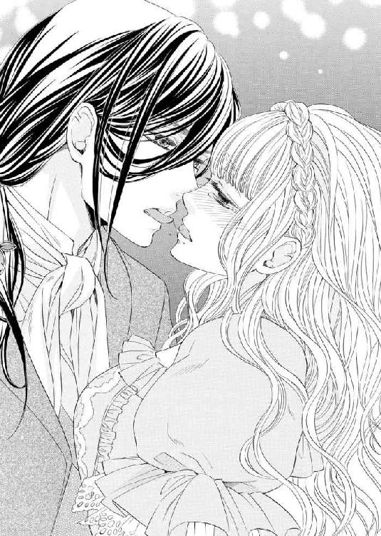
「ン......っ......ン......っふ......あ、あぁ」
甘やかな感覚に身震いしながら、うっとりと目を細めるエレノア。
たちまちのうちに顔と下腹部の奥とが熱く火照っていくのを感じる。
ドアの鍵はかけられていない。母や使用人たちにこんなところを見られてしまったらどうしようという気持ちとは裏腹に、背徳的な快感が唇と舌とを通してみるみるうちに肥大していき、いても立ってもいられない心地に駆られる。
まだ芽吹いて間もない官能が淫らなキスに誘発され、早くも昂りつつあった。
初めて彼と結ばれた部屋と同じ部屋でされる濃厚なキスはあまりにも甘美で淫靡──彼に会えない間、幾度となく反芻しては身悶えていた感覚が研ぎ澄まされていく。
「あ、はぁ......セル......兄様......」
濃厚なキスに唇を塞がれてしまい、息を継ぐために彼から唇を離すたびに、甘い声を紡いでしまうことが恥ずかしくてならない。
いくら逃れようとしても執拗に追い求めてくる彼の唇と舌の動きに翻弄されながら、エレノアは細い身体をしどけなくくねらせた。
まるで離れていた分を埋め合わせるかのように、セルジュは執拗なまでに彼女の唇を貪り、舌を絡めてくる。そのあまりにも獰猛な責めにエレノアは朦朧となってしまう。
彼の逞しい腕の中で意識が遠のきそうになって、ようやく彼は彼女を解放した。二人の唇に唾液のアーチがかかり、淫靡な雰囲気に拍車をかける。
激しいキスでいつもよりも赤みを帯びて膨らんだ唇をいとおしげに見つめると、セルジュは熱っぽい声で彼女の耳元に囁いてきた。
「──君の母上のお茶よりも、今すぐこの場で君を心ゆくまで味わいたい」
「そ、んな......いけません......」
慌てて首を横に振るエレノアだが、エロティックな声が鼓膜に沁みていき、淫猥な揺さぶりをかけてくる。
きっと自分が慌てふためくのが楽しくて、わざといじわるを言っているに違いない。昔から彼はそうだった。本気ではないはず。
そう自分に言い聞かせて落ち着きを取り戻そうとするが、セルジュは彼女の首筋を舌でなぞったかと思うと、真っ白な胸元に口づけ始めた。
「っ!? あ、あ......や......あぁ......いけない......のに。こんな......あぁ......」
エレノアは彼から逃れようと上半身をのけぞらせるが、細い腰にしっかりと逞しい腕を回されて思うように身動きできない。
控え目に盛りあがった白磁の肌に、彼の情熱的な口づけによる赤い痕がついてしまう。
「駄目......です。兄様......無理......お母様たちに知られてしまったら......大変なことに」
「スレインを見張りに立たせているから大丈夫だ。なんとでも理由をつけて、この部屋に何人たりとて入れさせはしないだろう」
愛らしい抵抗を楽しみながら、セルジュは慣れた手つきで彼女の背中に手を回し、コルセットを緩めた。柔らかな乳房が弾みながらドレスの胸元から外へとこぼれ出る。
淡い桃色に色づいた蕾を彼の唇が挟みこむと、甘く吸い上げた。
「んんんっ！ あぁっ！」
胸の頂にむず痒いような快感が爆ぜると同時に下腹部の奥がきゅっと締めつけられ、奥のほうから蜜が溢れ出てきてしまう。久しぶりの愉悦にエレノアの滑らかな肌が粟立つ。
「可愛らしいさえずりだ。君のこの声をずっと聞きたかった。もっと聞かせてほしい」
「い、や......こんなところでは......兄様......やめ、て......あ、あ、あぁあ......」
セルジュは、涙目になって必死に彼の唇から逃れようとするエレノアの胸の先端を執拗に追いかけては唇に含み、舌先を小刻みに震わせて弾きながら貪欲に味わってくる。
口元を両手で強く押さえて喉奥から突き上げてくる嬌声をとどめようとするが、彼の繊細な舌づかいから逃れようとしても無理な話。それでもいじらしく懸命に声を堪える彼女へとセルジュが囁いてくる。
「なぜ声を我慢する必要がある？ スレインにも君のこのかわいらしい声を聞かせてやったらいいだろう？」
「......う、っく......スレインは......私と兄様のことを知って!?」
「ああ、そうだ。スレインは昔から私の心強い味方だからな。隠しだてする必要などどこにもない。まあ、もっとも今回ばかりはさすがに渋りながらの協力だがな。それも無理はない。秘密の恋とはそういうものだ」
「......っ!?」
秘密の恋──歓迎されるような行いでないと分かってはいたが、ずっと昔からセルジュの従者を務めているスレインにも反対されていることを知ったエレノアは、改めて自分はいけないことをしているのだと打ちのめされる。
その胸の内を見抜いたセルジュが彼女のドレスを巧みに脱がしながら、幼子をあやすような口調で宥める。
「──君が気にする必要は何一つない。秘密の恋の一つや二つ、大人の世界では珍しいものでもない」
「でも......誰にも歓迎されない恋だなんて......」
「それは単に受け取り手の問題だ。スレインが堅物で融通が利かないタイプだというのは今に始まったことではないだろう？ だからこそ、他の誰よりも正義感が強くあるべき近衛騎士団長に選んだのだから」
「......分かってはいます......だけど......悲しくて......」
「大丈夫だ。悲しみなんてすぐに散らしてあげよう」
大きな瞳に涙をたたえたエレノアが長い睫毛をしばたたかせながら声を詰まらせるのにも構わず、彼の愛撫の手は白磁の肌を這いまわり、芽吹いたばかりの少女の性感を着実に引きだしていく。
「ンッ、う......っく、あ、あぁ......や......あぁ......」
蕾を交互に甘噛みされ、吸い上げられるたび、エレノアは細い身体を小刻みに痙攣させては両手の細い指を絡めて口元を押さえる。
彼の言うとおりだった。瞬く間に巧みな愛撫に身も心も融かされていく。
「はぁ......あ、あぁ......セル兄様......」
淫らな声を健気にも懸命に堪え、頬や目元を朱に染め上げた彼女を見つめる国王の目は鋭さを増す一方だった。
やがて、ドレスがふわりと床へと落ちていき、細い裸身が顕わになる。
彼の魔手から逃れようと必死にもがくエレノアだが、大きな手がその両手をやさしく縛めてくる。
そして、ついに彼の指が足の付け根へと差し入れられていった。
「っ!? あ！ ン、あぁああああっ！ いやぁあっ！」
太股同士をきつく閉じていたが、割れ目の付け根の敏感な肉芽を指でくすぐられ、脱力した瞬間、長い指がぬるりと秘所へ侵入していく。
その生々しい感触に、エレノアは堪らず小さな悲鳴をあげてしまった。
「そう、この声だ」
切れ長の目を細めて歌うように言うと、セルジュは蜜壺の中で指をあそばせ始めた。くちゅくちゅといういやらしい蜜音が、よりいっそうエレノアの背徳感を煽る。
「っあ、や......あぁ......はぁ......ああぁ......兄様。こ、声、我慢できなく......」
熱っぽい吐息混じりの悩ましい声を紡ぎ出す彼女に触発されてか、セルジュの指はますます大胆に動き、肉壁を抉っては新たな蜜を外へと掻き出し始めた。
エレノアは形のよい眉をひそめ、唇をきつく噛みしめて、激しく首を左右に打ち振るう。
艶やかな長い髪が乱れ宙を踊り、セルジュの頬をくすぐる。
「──まだ狭いな。私の指を思い出して自分で慰めはしなかったか」
「っ!? そ、んなはしたないこと......とても......」
「なるほど。まだ私の指を覚え足りないというならば、二度と忘れられないほど覚え込ませてあげよう」
「誰もそんなことは......っ!? え？ きゃ、あ、あぁあああっ！」
意味深な台詞の意味を尋ねるより早く、彼の指で深々と奥を穿たれ、エレノアは彼に無我夢中でしがみついてしまった。
「あ......あ、い、いや......あぁ......ひど......い。そんなに......指、たく......さん......」
「エラ、この程度で泣き言を言っては一人前のレディにはなれない。君のここは、指よりも太くて硬いものを数え切れぬほど迎えねばならないのだからな」
「う、そ......そんな......」
「怯えなくてもいい。私が責任をもってじっくりと教えてあげよう。そのために君を迎えにきたのだから」
「そのために......って......一体......っ!? あ、あ、や、いや、あぁああっ！」
エレノアの問いかけを遮るように、しなやかな三本の指が狭い蜜道を押し広げたかと思うと出たり入ったりを繰り返す。
のみならず、奥のほうでピアノの鍵盤を叩くように動くたびにくぐもった音がして、泡立ったはしたない蜜が外へと滴り落ちていく。
「はぁはぁ......う、ン......や......あぁ」
周囲を憚ることなく存分に喘ぎくるいたいエレノアだが、羞恥心と理性が邪魔をしてくる。
「恥ずかしがることはない。これも大人のレディになるための特訓なのだから。たしなみなのだと堂々と受け入れるがいい」
セルジュが親指を小刻みに振動させて肉核を弄りながら、秘所に出し入れする指の速度を上げていった。
「あっ、あ、あぁああ......い、やぁ......ンン、あ、あぁあああああ」
花びらのような唇から零れてくる蜜声のトーンがあがっていく。
困り果て逼迫したエレノアを窘めるように、セルジュは人差し指を口にあてて、意地悪な目を細めた。
（こんなことまでされて......我慢なんて......無理なのにっ）
愛しい従兄弟に対するうらめしい思いとは裏腹に、背徳的な感情が悦楽を高めていく。
「っ！ あ、いやぁ......ンッ!? はぁ、ンンンッ！」
彼の指先が奥の敏感な箇所を力任せに押してくると同時に、肉芽を潰すように刺激してきたその瞬間──エレノアは小柄な身体を激しくわななかせながら達してしまった。
秘所から大量の甘酸っぱい蜜が溢れ出してきて、絨毯に恥ずべき染みをつくってしまう。
エレノアは霞がかった視界の中、その染みを見つめて、粗相をしてしまった罪悪感に打ちひしがれうなだれた。
そんな彼女を慰めるようにセルジュが頭をやさしく撫で、指で長い髪を梳いてくる。
「兄様......どうして......こんな意地悪を......」
「君がどうしようもないほど可愛すぎるから。昔からそうだった。存分に可愛がっておきながら、不意にとてつもなく壊したいという衝動に駆られる」
セルジュは前髪を無造作に掻きあげると、エレノアを一心に見つめた。
色違えの鋭い双眸には、やはり危険な光が宿っていた。
にも関わらず、切なそうに眉をひそめる憂いを帯びた彼の表情に胸を衝かれ、エレノアは戸惑いを隠せない。
本能が警鐘を鳴らしているにも関わらず、妖しい輝きを放つ彼のミステリアスな瞳から目をそらすことができない。
一瞬、彼になら壊されてもいい──そんな危険すぎる考えが脳裏をよぎって我にかえる。
「ずっと隠してきたつもりだったが、姉上は見抜いていた。だからこそ、手段を選ばずに君を他の男のものにしてしまうつもりだ。仮面舞踏会も姉上の罠に違いない」
低い声で言いながら、セルジュは艶やかな髪をひと房手にとってキスをした。たったそれだけのことなのに、エレノアの身体は鋭敏に反応してしまう。
「私にそれを邪魔する権利などないことは重々承知している。が、どうしても我慢ならない。何も知らない君を他の男に穢され奪われるなど......耐え難い屈辱だ」
嫉妬を色濃く滲ませた低い声を震わせると、セルジュは懐から何かを取り出した。
それは、直径五センチ程度の球状に磨きあげたサファイアとタイガーアイを細い鎖で縦に連ねたものだった。
彼の瞳を彷彿とさせるその不思議な道具を舌で舐めあげて濡らしたかと思うと、それをエレノアの秘所へと挿入れていく。
「っつ!? う、あ、あ、ああ......い、や......な、何を......ンン......」
抵抗する間もなく、よく指で解され濡れそぼつ花弁はそれを呑みこんでしまう。
今までに味わったことのないひんやりとした無機質な感覚に身体の中を押し広げられ、エレノアは愛らしい表情を歪めてぶるりと身震いした。
「いや、兄様......出して......お願い」
「いかに可愛いエラの願いでもそれは無理だ。これもレッスンの一環なのだから。この宝石は君の狭い道をより魅力的なものにするためのものだ。宝石を外に出すまいと自然と力が入ってしまうだろう？ その動きが男を迎える際にも効くようになる」
「......そん......な」
まさか、そんないやらしい道具を身体の内に仕込まれてしまうなんて。
エレノアは愕然とする。
「私の許可がなければ、これを外してはならない。いいね？」
信じがたい命令をされ、その場に固まってしまう。
「──いいね」
再度強い口調で命じられた瞬間、反射的に頷いてしまっていた。
「いい子だ」
満足そうに頷くと、セルジュはスレインが置いていった箱の蓋を開けて、中から繊細なレース飾りがいたるところに施してある布地を取り出して彼女へと見せてきた。
「これも私からの贈りものだ。身につけるものによって人は変わるもの。君の望みどおり大人のレディに相応しい品だ」
エレノアが布地だと思ったものは下着のようだったが、その確信は持てずにいた。
なぜなら、そのデザインは今までに見たこともない扇情的なものだったのだから。
本来隠すべき個所にはシースルー素材の布地が使われており、膨らみの頂が透けて見えてしまっている。加えて、革のベルトの縁取りは胸を絞り出すように強調してもいる。
それは下着という名の拘束具だった。否、拘束具というには優美すぎる。
自分が着たところを想像してしまい、エレノアの頬に全身の血が集まる。
「......大人の女性は......本当にこんな下着を身につけるものなのですか？」
「ああ、そうだ。男を誘惑し、虜にする魔性のドレスと言っても過言ではない」
セルジュは美しい所作でその淫らな下着を戸惑う彼女へとつけていく。
「これでいい。君のために特別につくらせた世界に一つだけの特別な下着だけによく似合う。想像以上だな。美しい」
恥ずかしさのあまり、彼の賛辞にも顔をあげることができずにいるエレノアを無理やり上向かせると、鏡の中に映る自分の姿と対峙させる。
「きちんと自分の姿と向き合いなさい。目を逸らしては駄目だ。見たくないものを見ないままに済ませることができるのは子供まで。君は子供を卒業したいのだろう？」
「......は、い」
勇気を振り絞って顔をあげると、エレノアは鏡に映る自分と向き合った。
目元から耳まで真っ赤に染め上げた表情には、まだあどけなさが残っているにも関わらず、身につけているものは色香溢れる挑発的な下着。自分がこんな下着を身につけるのは分不相応な気がして目を逸らしてしまう。
「似合わない......です......私にはまだ早いのかもしれません......」
「安心しなさい。次第になじんでくる。最初は誰もが分不相応だと思うものだ」
「セル兄様そんなことが？」
「ああ、私も父の王冠を継いだときには分不相応だと思った」
（そんな風にはまったく見えなかったのに......セル兄様も私とおんなじ......）
エレノアは、セルジュの言葉に救われたような気がする。
「同じ器により多くの水を入れようとすれば溢れてしまうだろう？ 器を大きくしてやることが先決。それと同じことだ。大人になりたいと願うのならば、まず姿かたちから大人に倣うほうがいい」
「分かりました。兄様......私、頑張ります」
「いい子だ。エラ」
素直に応じる彼女の頭を優しく撫でると、セルジュは最後の仕上げに宝石をあしらった革製のチョーカーらしきものを彼女の首につけてきた。
シャンデリアの灯りを受けて大粒のアメジストとそれを取り巻くサファイアとタイガーアイが妖しく煌めく。
首の後ろでかすかな金属音がした後、彼は小さな鍵をエレノアへと見せてきた。
アクセサリーに鍵なんてかけるはずもない。
困惑気味にエレノアは彼へと尋ねた。
「兄様、一体これは？」
「これはネックカフ。首輪といったほうが分かりやすいか──シャーリーもベスもつけているだろう？ おそろいだ」
「......っ」
ただのアクセサリーではないとは思っていたが、まさか首輪だったなんて。
エレノアはベスの首元を見てハッと息を呑む。
（風変わりな首飾りだと思っていたけれど、あれも首輪だったんだわ......）
どういうつもりで彼がそんな人形を自分へと贈ったのかは分からないが、何か特別な意味が隠されているような気がしてならない。
戸惑っていると、セルジュが彼女の耳朶にキスをして囁いてきた。
「そうだ。感じるだろう？ 君が私だけのものという証だ。この首輪を外すことができるのは私だけ。それまで君は私だけの人形。誓いを裏切ることはけして許されない。いいね？」
「......はい」
妖しい胸騒ぎに胸が焦がされ、エレノアは上ずった声で答える。
ずっと自分は彼の人形だと思ってきてはいたけれど、こんな風に目に見える形で示されると改めて自分は彼だけのものだという自覚が生まれる。
同時に、身体を程良い圧で締めつけてくる下着が、よりいっそう彼に拘束されているのだという実感をもたらしてくる。
「あぁ......」
熱っぽいため息をつくと、眩暈を覚えてふらついてしまう。
とっさにセルジュが彼女を支え、不敵に目を細めた。
「もう酔ってしまったのか......イケナイ子だ」
「酔う？ お酒なんて飲んでもいないのに......」
「君は私の拘束に酔っているんだ。昔から君はそういうタイプだとは思っていたが、やはりそうだったか」
「っ!?」
拘束に酔うなんて聞いたこともない。
だが、自身の変化が彼の発言が正しいと無言の内に告げていた。
秘密のごっこ遊びを思い出して、エレノアは胸を押さえる。
「──昔、よく一緒に遊んだだろう？ 私が君を攫い、君が囚われの姫となり人形として私に弄ばれるごっこ遊び、君は覚えているはずだ」
「あ、あぁ......セル兄様も覚えて......」
「忘れるはずがない。あれはただの人形遊びではなかったのだよ」
「............」
彼の口から明かされた真実に愕然とする。
まさか子供の頃の無邪気な記憶すら、こうして書き換えられてしまうなんて......。
自分が今まで見てきたもの、信じてきたもの、感じてきたもの全てが壊れていく感覚に身震いする。
現実はあまりにも残酷だった。今まで、自分がいかに夢の世界をたゆたっていたのか、思い知らされる。
「どうして......あんな遊びを......」
「君が可愛すぎてどうしても抗うことができなかった。この獣の瞳から」
セルジュが前髪を掻きあげると、黄金の瞳を彼女へと見せてきた。
危険な色を帯びた瞳は、いつも以上に爛々と輝いている。まるで獲物を狙う飢えた獅子のように。
「兄様はこうなることを予想してらしたんですか？」
「その逆だ。こうなることを避けようとしての代用行為だ。いまさら信じてはもらえないかもしれないが」
「............」
信じていると言おうとしたが、どうしても口からその言葉が出てこなくて、エレノアは苦しそうに俯く。
嘘がつけない自分が嫌になる。大人の嘘は、他人を傷つけないためにも使えるものだと知り、それができない自分はどうしようもなく子供なのだと落ち込んでしまう。
セルジュはそんな彼女を励ますように肩を軽くたたくと、床に落ちたドレスを拾い上げ、彼女へと着せつけていった。
エレノアは彼に申し訳なく思いながらも何も言えずにいた。今、何を口にしようとも、空々しい言葉しか出てこない気がして。
やがて、ドレスを着せ終えると、セルジュが指を鳴らした。それが外への合図だったのだろう。ややあって、スレインが部屋の中へ入ってきた。
エレノアはまともに彼の目を見ることができず、俯いたまま拳を強く握り締める。先ほどの痴態を扉越しに全て知られているのだと思うだけで、羞恥のあまりどうかなってしまいそうだった。
ドレスの下にあんなにも恥ずかしい下着を身につけていることも彼には知られているはず。否、それだけじゃない。もしかしたら口には出せないような場所に仕込まれている淫具のことすらも知っているのかもしれない。
心臓が破裂するのではないかというほど強く脈打ち、動悸のあまり思うように息すらできなくなる。
裁きをうける前の罪人のような思いでエレノアが俯いたままでいると、スレインがセルジュへと言った。
「セリス様には場所を変えて欲しいとお願いしておきました。鏡の間に続くテラスにてお待ちです。とはいえ、あまりお待たせするのもいかがなものかと。お急ぎください」
「ああ、分かった」
彼に詳細を尋ねられたり、行為を諌められたりしたらどうしようと不安でならなかったが、二人が交わした言葉はそのたった二言だけだった。
セルジュに要件だけを伝えると、スレインは再び外へと出ていく。彼のいつものポーカーフェイスからは、どんな感情も読み取ることができなかった。
二人のやりとりのあまりのそっけなさにエレノアは驚きを隠せない。
恐らく、以心伝心。ずっと傍にいた二人の間に余計な言葉はいらないのだろう。
彼のように、言葉にしなくても相手の気持ちを慮り、その要望に叶うような行いをスマートにすることができたらどんなにいいか......。
「秘密を身にまとうと、また違った世界が見えるだろう？」
「......っ!? それは......」
いきなり耳元で色香を帯びた声で囁かれ、エレノアは肩を跳ねあげた。
胸が締め付けられ、興奮に総身が昂る。
その反応から気持ちを汲み取ったと思しきセルジュが、彼女の背後から胸を鷲掴みにしたかと思うと、硬くなった頂を指でつまみあげてきた。
特注の淫らな下着は、隠すべきところを隠していないデザインゆえに、ドレス越しにであってもダイレクトに刺激が伝わってしまう。
「あぁっ！」
彼女の甘い悲鳴に耳を傾けると、セルジュは蕾を指先ですり潰すように愛撫してくる。
「やはりそうか──君は身体も素直なのだな」
「い、や......あぁ......そんなことは......あ、ああぁっ！」
必死に彼のいやらしい指摘を否定しようとするエレノアだが、言葉半ばで首筋をいやらしく舐めあげられ、さらに甘い声をあげてしまう。
「今後はいついかなるときでも私を意識することになる。覚悟しておきなさい」
「っ!? そのために......こ、んなことを......」
ようやく彼の意図を知り、愕然とする。
確かにこれほどいやらしい下着を身に着け、身体の奥深くに淫具を仕込まれ──あまつさえまるで飼い猫のように首輪までつけられてしまっては、意識せずにいられるはずがない。
「こんなことしなくたって私は......っ!? きゃっ、あ、あぁ......」
胸の内を明かしてこんなことはやめてほしいと訴えるつもりだったが、その言葉は意地悪な彼の指使いによって妨げられてしまう。
「──もはや子供のときのようなごっこ遊びではない。君を本物のドールにしてあげよう」
「っ!?」
色香を滲ませた彼の声に、心臓が甘く妖しく締め付けられる。
耳朶に歯をたてられ、滑らかな舌が官能的な動きで耳の穴をまさぐってきた。淫らな水音が耳の中で反響して鼓膜を震わせる。
「あぁ......セル兄......様......になら......私......構いません......」
叶うならば、ずっとお傍に置いていただけたらいいのに。そう思うエレノアだが、その願いを口にすることはできない。彼を困らせてしまうだけだと分かっていたから。
やりきれない切なさに胸が引き裂かれそうな痛みを覚える。
（それでもいい......例え、少しの間だけだったとしても、セル兄様に身も心も何もかも独占されたい）
自分でも、こんなに熱い思いが胸に秘められていたなんて知らなかった。
エレノアは胸を渦巻く熱い思いを吐息にのせて逃しながら、セルジュの腕の中でしどけなく身悶える。
その意味を知るまでは、単なる扇情的な下着に過ぎなかったのに。今やそれらはエレノアの心身に食い込み縛めていた。
奥深くに埋め込められた宝石も、よりいっそう存在を主張してきて、彼に貪られたときを彷彿とさせる。
「兄様......駄目です。お茶が冷めてしまいます......」
「ドールは口答えはしないものだ。ベスを見習いなさい」
「......は、い」
従属の言葉を口にしただけなのに、下腹部の奥に蠢いているしこりが弾けて、奥のほうからとろみを帯びた蜜が溢れ出てきてしまう。
ともすれば、仕込まれた宝石が外へと出てきそうになり、括約筋に必死に力を込めるが、そうするたびに鈍い快感が沁みていく。
「あ、あぁっ！ 兄様、もうっ、我慢できなく......なって......宝石がっ！ 出てきてしまいそうに......」
「力を込めて我慢しなさい」
セルジュは、二つの蕾を虐める指に力を込めてつねりながら引っ張ると同時に、彼女の首筋を舌先で舐めあげた。
「そ、んな......ンッ、は、ぁ......駄目っ......もう、もうっ！ や、あぁあ......」
全身で彼を感じながら、エレノアは高みを目指す。
だが、達する寸前で、セルジュは指を離してしまう。
「......えっ？」
肩透かしをくらい、エレノアの愉悦にとろけた表情に困惑の色が浮かんだ。
「どうした？ やめて欲しいのだろう？」
「............」
エクスタシーを迎える寸前で行き場を失った昂りを持て余したエレノアは返事に困る。
わざと中断したに違いない。彼の不敵な笑みを浮かべた表情からそれは明らかだった。
「不服そうだが、どうした？」
「......セル兄様の意地悪」
「ああ、そんなことは昔から分かっているだろう？ 分かった上で君は私の人形になることを選んだ。違うか？」
「うぅ......」
反論を封じられ、困り果てた表情で拗ねたように唇を尖らせた彼女をきつく抱き締めると、セルジュは独り言のように呟いた。
「かわいいエラ、こうして困らせて苛めたくなる。際限なく──自分が恐ろしい程に。やはり私の本性は獣。黄金の瞳は伊達ではないな......」
荒らぶる息を繰り返しながら、身を震わせる様子はまさに獲物を歯牙にかけんと武者震いする獣のように獰猛なもので。エレノアは生きた心地がしない。
本当に彼は獣の化身なのかもしれない。
いかにそれが現実離れした考えであっても、彼にはそう信じ込ませるだけの何か得体の知れないものがあった。
「今まで我慢してきた分だけ君を貪ろう。もはや我慢はしない」
魂ごとぶつかってくるような彼の責めを思い出して、エレノアも身震いする。
今ここで激しく抱かれてしまえば、自分がどうなってしまうか分からない。周囲を憚ることなく乱れてしまうかもしれない。
青ざめると同時に、無意識のうちに喉元が嚥下の動きを見せる。
それをセルジュは見逃さなかった。
「今すぐ君をここで抱いてもいいが──それでは調教にならない」
危険な響きを持つ言葉がエレノアの胸を射抜く。
「たっぷり焦らして後でおいしくいただくとしよう。獣の味を想像して期待しておくように」
セルジュは彼女の手を騎士よろしく恭しく取ると、言葉をつづけた。
「では、君の母上のお茶をいただきに行くとしよう。くれぐれも我々の秘密が知られてしまわないように。いい子にしていなさい。いいね？」
「......はい」
素直に頷くエレノアだが、果たして本当に我慢しきれるのか、不安を隠せない。
ただでさえ思ったことが顔に出やすいのに、二人だけの淫らな秘密を身にまとったまま、母の前でいつもどおりに振舞える自信がない。
自分だけでもお茶を辞退したいと思うが、それは赦されないだろう。
（私はセルジュ兄様だけのお人形なのだもの......命令には従わないと）
エレノアは首輪にそっと手を触れると、自分に言い聞かせるように胸の内で呟いた。
初めて自分の意志でつかみ取った選択肢は、もしかしたらとんでもなく恐ろしいものなのかもしれない。
そんな予感を募らせながら──
ж ж ж
王の執務室の扉がノックされたのは夜も更けてのことだった。
書類に目を通していたセルジュは返事をしない。こんな時間に自分を訪ねてくる人間はたった一人しかいない。わざわざ返事をする必要もないという無言の取り決めゆえに。
扉を開いて中へと入ってきたのはスレインだった。
セルジュは彼のほうを一瞥すると、書類に目を通しながら尋ねた。
「──エラの様子はどうだ？」
「例のご婦人用の客用寝室に案内致しました。全ては滞りなく。湯浴みをされた後、お部屋でお休みになられています」
「そうか。ご苦労」
「寝ずにセルジュ様を待つと健気にも仰って、つい先ほどまで起きていらっしゃいましたが、さすがに馬車での長時間の移動は疲れたのでしょう。ソファでうたた寝をされていたので、ベッドに運んでおきました」
「昔と変わらないな。後で寝顔を見に行くとしよう」
厳しい表情が緩み、その口端には微笑みが浮かぶ。
それに気付いたスレインは、彼とは対照的に渋面を浮かべてため息をついた。
「どうした？ 何度目のため息だ？」
「......誰のせいだと思っていらっしゃるのですか？」
眉間に皺を寄せると、苛立ちを隠しもせずに主を睨みつける。
「そんなに怖い顔をするな。せっかくの美男子が台無しだ。もっと愛想を良くすれば引く手あまたなものを。もったいない」
「引く手など、自分には必要ありませんから──」
スレインがさらに苛立ちを濃くした声で反論すると、セルジュはそこで初めて顔をあげて仕事の手を止めた。
「スレイン、何をそんなに怒っている？」
「わざわざ私の口から聞くまでもないでしょう？ 分からないとは言わせませんよ」
「君の友情には感謝している。君なくして私の夢は叶うべくもない」
書斎机の席から立ち上がると、彼のほうへと歩いていく。
「どうだ？ 久しぶりに一緒に飲まないか？ いいワインがある」
「私よりも一緒に楽しむのに相応しい方がいらっしゃるはずですが？」
「まあ、そう言うな。妬いているのか？」
「............」
スレインは、嫌味にからかいで応酬してきた主へと無言で反発の意を示す。
そこでようやくセルジュが折れた。
「──悪かった。エラのことだろう？ 無茶は百も承知の上だ。君にも負担を強いてしまい、申し訳なく思っている」
「無茶どころか破滅の道です。兄上様だけでなく、他にも王の座を狙っている者たちへ格好の餌を撒いているとしか思えません。賢明なる王がなさることではない。理解しかねます」
鋭い口調でスレインは主人を諌めるが、セルジュは彼の非難を真っ向からは受け止めずにかわしにかかる。
「君らしくもないことを。むしろこの状況を逆手にとり、敵が尻尾を出すための撒き餌として利用するものだとばかり思っていたが──」
「相手が彼女でなければ歓迎したでしょう。ですが、エラだけは駄目です。ずっと傍でお二人を見てきた私からすれば、彼女は危険すぎます」
「危険？」
一瞬、スレインの表情に躊躇いが浮かんだ。
が、彼は意を決したように言葉を続けた。
「彼女には悪意はないでしょう。その点を疑うつもりはありません。ですが、悪意がないからこそ厄介なのです。『悪意はなかった』と言いながら、他人を傷つける自称善人ほど性質が悪いものはありません」
その言葉が終わるか終らないうちに、セルジュが動いた。
腰の細剣を鮮やかな所作で引き抜くと、スレインの喉元へと剣の切っ先を突き付ける。
しかし、スレインは怯みもしなければ、まばたき一つせず微動だにしない。
辺りがしんと静まり返る。
鉛のように重い沈黙を破ったのはスレインだった。
「貴方が望むなら、いつだって死ぬ覚悟はできています」
そう言うと、自分へと向けられた抜身の剣を握りしめてみせる。
手の平に刃が食い込み、床へと血が滴り落ちていくが、眉一つ動かさない。
セルジュは眉根を寄せると、剣を持つ手の力を抜いてため息混じりに呟いた。
「相変わらず君は生真面目すぎるな。そこまでする必要はないだろう？」
「その点には同意しかねます。貴方は私が忠誠を誓った主ですから」
真一文字に引き結ばれた口元や逆八の字になった眉は子供の頃と変わらない。
セルジュは、昔からことあるごとに彼の愚直なまでの頑固さに悩まされてきたことを懐かしく思い出しながら苦笑する。
彼へと剣から手を離すように命じてから剣を鞘へとおさめた。そして、胸元からハンカチを取り出すと、傷ついた手をとってあてがい止血しにかかる。
「あまり無茶をしてくれるな。君の忠誠を疑ったことなど、一度たりともない」
「光栄です。では、どうか私の意見にも理解を示していただきたい」
「理解はしているつもりだが──この件についてだけは退くつもりは全くない」
二人は互いを牽制し合うように鋭い視線を交わす。
ややあって、再び深いため息をつくとスレインは押し殺した声で言った。
「セルジュ様、人の心というものは自分が思うようにうまく操れはしません。全て貴方の思い通りに事が運ぶとでも思っていらっしゃるのですか？」
「随分と信用がないな。私が今までに一度口にしたことを違えたことがあったか？」
「お言葉を返すようですが、貴方こそ随分とご自分を過信されているようですが？」
王に投げかける言葉とは思えないほど辛辣な言葉を口にする。敢えてそういった言葉を選んでいるかのように。
だが、それが彼のやり方だと知っているセルジュは聞き流す。
「現にもうすでに予定はくるっているのではありませんか？ この現状が貴方の用意したシナリオどおりとはとても思えませんが」
「ただ単に状況に応じて柔軟に方針を変えただけだ」
「......だといいのですが」
スレインの表情や目つきからは、疑念の色が消えることはない。
重苦しい静けさをセルジュの声が破った。
「君は私の味方だろう？」
「もちろん、いつだって貴方だけの味方です」
その一瞬の迷いもない返答に、セルジュは厳しい表情を緩めると、キャビネットへと足を運んでワインと二つのグラスを手にとった。
それを見てとったスレインは、渋面を浮かべたままソファへと腰掛ける。勝手知ったる二人の仲ではそれが暗黙のルールだった。互いに何か思うところがある場合、こうやって杯を酌み交わして胸の内を明かすのだ。
「久しぶりだな」
「ええ、本当に。久しぶりすぎですね」
皮肉めいたスレインの口ぶりにセルジュは苦笑しながら、ワインの栓を開け、二つのグラスへとなみなみと注ぐ。確かに久しぶりだと思いながら。
国王に即位してからは一度もこういった機会を設けていなかったと気づく。いつも彼が傍にいるのが当たり前で、何も言わずとも良き理解者でありつづけるに違いないという信頼が油断を生んだのだろう。
グラスの縁を重ね合わせて乾杯すると、互いにワインをひと思いに呷る。
土の香りが強い液体が喉を滑り落ちていく。
瞬く間に時間が逆行し、まだ主従関係になかった頃、ただの良き友人だった時の思い出が脳裏に蘇る。
しかし、遠い目をして昔を懐かしむ主を見据えるスレインの目には、仄暗い光が宿ったままだった。
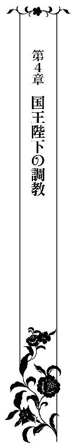
エレノアが王城に滞在するようになってから、早くも二週間が経とうとしていた。
表向きは通常の賓客をもてなすとき同様、婦人向け客用寝室をあてがわれていたが、実はその部屋には隠し扉があり、王の寝室へとつながっている。それが何を意味するかは、説明するまでもない。この部屋はそういう目的のために作られたものなのだと、セルジュから聞かされたときには驚きに言葉を失った。
エレノアは使用人の目をかいくぐりながら、常に王の寝室で一日の大半を過ごしていた。
彼が部屋に戻ってくるのを待ちわびつつ、誰にも存在を知られてはならないという緊張に晒されながら。
つい先ほども、部屋の掃除に訪れた使用人たちの目を避けて、クロークの衣装の中に身を隠したばかりだった。
誰もいなくなったことを見計らって、部屋へと戻ってベッドへと腰を降ろすと、首輪に手をあてて深い安堵の溜息をつく。
さっきは、ついうたたねをしてしまっていて、使用人が清掃にやって来る時間であることをすっかり失念していた。ドアの鍵が開けられる音に気づくのが少しでも遅れていたらと考えるだけで血の気が引く。
「......こんなこと誰にも知られてはならないもの。秘密は守り通さなくては」
サイドテーブルに置かれた手鏡をとると、チョーカーに見せかけた首輪を見つめて、改めて気持ちを引き締める。
首筋のいたるところに赤い痕が残っていることに気付いて頬が赤らむ。
それはセルジュに昼夜を問わず貪られている証に他ならなかった。
そもそもうたたねをしてしまっていたのもそのせいであって──と、そこまで考えて、エレノアはさらに頬を赤く染めると、つい先ほどまでの情事を頭から振り払うように首を左右に振った。
「私、一体どうしてしまったのかしら......」
誰にも言えない秘められた愛欲に溺れる日々にいつの間にか染まってしまったのかもしれない。自分が自分でなくなっていくような感覚は恐ろしいが、同時に今まで知らなかった新たな自分に出会うたびに世界が拓けていくような気もする。
最初は恥ずかしくていたたまれない行為と思っていて、今もその考えは変わらない。
そのはずなのに、毎回セルジュの巧みな手ほどきによって理性を壊され、本能を剥き出しにされてしまう。
あまりにも激しい責めによって愛している人には見られたくないような痴態を晒してしまわずにはいられず、そのたびに彼に嫌われてしまうのではと怖くてならない。
にもかかわらず、そうであればあるほど、逆に彼により愛されていると実感できる。
この矛盾は、常に他人の目を気にして生きてきたエレノアにとっては不思議でならないことだった。
もしかしたら、男女の営みはありのままの自分を愛してくれる人を見つける方法なのかもしれない。誰にも見せられないような恥ずべき姿を見せ合うことによって秘密を共有し、互いにとって特別な存在であることを確認し合うのだろう。それが恋人であり、夫婦であるのだ。
思わぬ発見に胸が躍るが、彼とは恋人同士にも夫婦同士にもなれないということを思い出して塞いでしまう。
（私と兄様のは単なるごっこ遊びだもの......昔となんら変わらない。私は兄様のお人形）
セルジュに深く愛され、そのたびに勘違いしそうになる自分に何度そう言い聞かせてきたかしれない。
「ベス。私、ちゃんと貴女みたいにいいお人形になれるかしら？」
人形を抱きしめ、そのガラスの目をじっと見つめて呟いたそのときだった。
寝室の壁の一部が浮き上がったかと思うとスライドし、隠し扉が現れる。
その音を耳にするや否や、エレノアの胸が甘く高鳴った。
隠し扉から姿を見せたのはセルジュだった。隠し通路はエレノアにあてがわれている女性客用寝室だけでなく、執務室と教会にもつながっている。
セルジュは、執務の合間を縫っては足しげくエレノアの元へと顔を出し、そのたびに淫らな調教を彼女におこなっていた。
「エラ、ただいま。いい子にしていたか？」
「おかえりなさいませ。セル兄様......」
エレノアが顔を輝かせて出迎えると、セルジュは彼女の腰を強く自分のほうへと抱き寄せてから甘い口調で諌める。
「まだ直らないようだな。その呼び方はやめるようにと何度も注意したはずだが？」
「申し訳ありません......どうも癖が抜けなくて......」
「君の兄代わりはもうやめたと言っただろう。たとえ限られた間だけでも君と私は恋人同士だ。いいね？」
「はい......」
限られた間だけでもという言葉に冷や水を浴びせられる思いがするが、それでも恋人同士という彼の言葉に救われたような気にもなる。
（兄様が私のこと、そんな風に思ってくれていたなんて......）
ただの人形ではない。胸の奥がじわりと温まってくる。
エレノアが頬を染めて熱っぽくセルジュを見つめていると、彼は彼女の髪を一房手にとって口づけをしてこう言った。
「執務中もずっと君のことばかり考えていた──」
率直で情熱的な愛の囁きにエレノアはぼうっとなってしまう。こんな甘やかな愛の言葉を彼から聞かされるなんて夢のようだ。
憧れが恋へと代わり、恋が愛に代わっていく過程がこれほどまでにときめくものだとは知らなかった。
とはいえ、それが仕事の支障になってしまうのは問題だ。
「......お仕事に集中してくださらないと......困ります......」
そうは言ってみるものの、笑顔がついこぼれてしまい困ってしまう。
「君を悪女にしてしまうつもりは毛頭ない。はるか東方に絶世の美女が皇帝をたぶらかし亡国の憂き目にあった例もきくが......」
「悪女だなんて......ひどいです」
「君を悪女だなんて思ったことはないよ。可愛い私だけのドール」
優しい微笑みに吸い込まれそうになるエレノアだったが、わずかな違和感を覚えて彼へと躊躇いがちに尋ねた。
「──あの、兄様......もしかしたらお疲れですか？」
「いや、大丈夫だ」
「......本当に？」
ポーカーフェイスからはどんな感情もまったく読み取れないが、それでも表情に蔭りが差しているように感じられる。毎日傍にいられるようになってから、彼の些細な変化に気づくことが増えてきた。
彼女の訝しげなまなざしに気がついたのか、セルジュが苦笑した。
「随分と察しが良くなったものだな。特訓の成果がこんなところにまで現れるとは」
わざとからかうような口調から、エレノアは自分の見立てが正しかったことを知る。彼は相手の気を逸らせようとするときによくこんな皮肉めいた口調になる。
「やはりお疲れのようですね......何か私にもお手伝いできることがあればよいのですが」
「いつものことだ。大したことではない。国王というものは案外敵も多いものでね──常に気を張らねばならないのだよ」
「............」
彼こそ王になるべくして生まれてきた人で、誰もがみんな彼の味方だと思っていた。皆に望まれて王になったのだと疑いもしなかった。
やはり、華やかな世界の裏側には、自分には想像もつかないような闇が広がっているのだと改めて感じ、ぶるりと身震いする。
気がつけば、エレノアは力いっぱい彼を抱きしめていた。
そして、思いの丈を込めて必死に訴えかける。
「私は！ 私は兄様の味方ですから！ 絶対に......今までもこれからも......ずっと！」
驚いたような表情を浮かべると、セルジュはくすりと笑い、彼女の頭を優しく撫でる。
「ありがとう、エラ。心配しなくともいい。私は大丈夫だ」
「でも......」
「敵とはいえ恐れるには足りない。いずれ私を敵に回したことを必ず後悔するだろう。もはや私は何もできない子供ではないのだからな。あの頃のように」
穏やかな表情ではあるが、その口端には背筋が凍るような笑みが浮かんでいて、エレノアは慌てて目を逸らしてしまう。
彼の口ぶりにはかつての自分を責める響きがあった。
だが、その理由を尋ねることができるような雰囲気ではない。
だから、代わりにエレノアは彼の胸に顔を埋めてこう呟くほかなかった。
「......私に......できることがあれば、なんなりと仰ってください......」
「............」
その言葉を耳にした瞬間、セルジュの表情が和らいだ。
憂いを帯びた遠い目をして、彼はエレノアをまっすぐ見つめて微笑む。
「──懐かしいな。最初に君に会った時のことを思い出す。あのときも君はこうしてくれた。何の打算もなく。それがどれほど私を救ったか」
「そうだったんですね......」
今から約十年も前の出会いをエレノアは振り返る。
あれは王城の広い庭で迷子になってしまったときのことだった。見たこともない美しい人が辛そうな面持ちで佇んでいるのに出くわした。
それがセルジュだった。
この人の笑顔を見たい。その一心で幼心に彼を必死に勇気づけようとしたことだけは覚えている。
「無欲の愛──そんなものを私に注いでくれたのは、君のほかに母上しかいなかった。君のことを亡き母上の生まれ変わりだと思ったほどだ」
（もしかしたら、あのときセル兄様はお母様を亡くされていた!? そんなこといままで一言だっておっしゃっていなかったのに......）
肉親を失うつらさはよく分かる。
父を亡くしたときに彼からベスをプレゼントされた。本当につらいときにそっと手を差し伸べられることがどれだけありがたかったことか......。胸がいっぱいになって泣きたくなる。
「辛いときには......そう仰ってください......どうか一人で平気なふりをして我慢しないでください。私だってそういうときこそ何かのお役に立ちたいです」
涙ながらに訴えかけると、セルジュはいつものクールな表情を取り戻して言った。
「ただ私の傍でこうして笑ってくれているだけでいい。君は私のオアシスだ。今も昔もそれは変わらない」
「でもそれだけじゃ......」
なおも食い下がろうとするエレノアの言葉を阻もうとしてか、彼女の柔らかな手を握りしめて己の半身へと導いていく。
「......っ」
そこはすでに雄々しく滾っていて、エレノアは息を呑む。
（兄様......こんなやり方で私の言葉を封じるなんて......ずるい）
物問いたそうな面持ちでセルジュを見るが、彼は沈黙を守ったまま穏やかに微笑むばかりでそれ以上何もしようとはしない。先ほど垣間見せた恐ろしい微笑みも、悲しげな微笑みも、もはや跡形もなくなっていた。
「もうこの話は終わりにしよう──分かるだろう？ これがどういう状態か。私はずっと君を想っていた」
（そんなどうして？ 一体いつから？）
身に覚えがなくて困惑する。
（もしかして......執務中の間もずっとという意味？ 私を想って？）
そう思い至った瞬間、白い頬に朱が散らばった。思いすごしに違いないと自分に言い聞かせるが、一度思いついてしまった可能性はそう簡単に打ち消せはしない。
「どうした？ エラ？ なぜそんなに頬を赤く染めている？」
「い、いえ......なんでもありません......」
「これが私がずっと君を想っていた証だと察したからではないか？」
「っ!?」
胸の内を読まれ、エレノアは視線を頼りなくさまよわせながら返事を躊躇う。
「そのとおりだ。ずっと君のことを想い、君と過ごした時のことを思い出していた」
一体自分とのどんな場面を思い出していたのだろう？
気にはなるが尋ねるのは憚られる。大方の予想はつくし、その質問が彼をさらに刺激しかねないと分かっていたから。
「君にもそうであってほしいものだ。常に私を想っていてもらいたい。私を感じていてもらいたい」
歌うような口調で言うと、セルジュはドレスの上から彼女の股間を押さえてきた。
「っきゃ!? や......やめ......て......」
奥に挿入れられたままのいやらしい宝石が中でぶつかり合い、鈍い響きを子宮口へと伝えてくる。
思わず力んでしまい、外へと宝石が出てきそうになるが、エレノアは必死の形相で括約筋に力を入れてどうにか堪えた。
この淫具を外に出してしまったときのおしおきは羞恥の極みともいえるもので、なんとしてでも堪えねばと思う。
「私の手を緩める手段は──教えてあげただろう？」
「............」
そこでようやくエレノアは気づいた。いまだに慣れないはしたない例の行いを彼が促しているのだと。
ほっそりとしたたおやかな手で、おずおずと肉竿を優しく包み込んでみると、セルジュが手を添えて上下へ動かしてくる。
エレノアは手の中で半身がさらに大きく力強く怒張していくのを感じながら、いつしか彼の手が離れたことにも気がつかず、自ら手を動かしていた。
「──ああ、エラ、うまくなったな」
熱いため息混じりに褒められると、もっと彼を悦ばせたい、彼に尽くしたいという思いが胸に込み上げてくる。
エレノアは熱をこめて、太い血管が浮き出た剛直を手でしごいていく。
すると、セルジュの息が乱れ、その端正な表情が快感に切なげに歪み始めた。憂いを帯びた表情が消えたのを見てとると、エレノアはさらなる奉仕を試みる。
その場に跪くと、屹立を両手で捧げ持ち、舌を這わせていく。
自らの意志で淫らな行いをしているのだという羞恥を必死に堪えながら、舌先で肉棒の隅々まで濡らしていく。
「......っく、う......エラ......私を誘っているのか？」
セルジュが呻くように呟いたかと思うと、彼女の頭を掴み、その花びらのような唇へと半身を突き立てた。
「んんっ!? んむっ......ン......ぅ......」
喉の奥までひと思いに深々と貫かれ、エレノアは目を見開くとくぐもった声をあげる。
だが、もはやセルジュは止まらない。
彼女の頭を抱え込むようにして腰を回すと、灼熱の肉棒で滑らかな口中を掻き回した。
その動きに合わせて、彼女の柔らかそうな頬が歪に形を変え続ける。
「......っ!? ンっ......ん、ぅ......っうぅうう......」
太い棒に口を塞がれ、喉の奥を貫かれるたびにえずいてしまうエレノアだが、懸命に口と舌とを動かして奉仕を続ける。
苦しければ苦しいほど、彼に尽くしているのだという実感で胸が満たされるという不思議な感覚に身を委ねながら。
だんだんとセルジュの腰の動きが激しさを増していき、唾液が口端から伝わり落ちていく。
頭の芯がぼうっとして何も考えていられなくなる。
やがて、ついに口の中ではちきれんばかりに膨張した男根が欲望に爆ぜた。
次の瞬間、塩気を帯びた精液が口いっぱいに溢れ出てくる。
堪らずむせてしまうが、それでも必死に口の中に残った淫らな残滓を飲み下した。とろみのついたそれはなかなか喉を滑り落ちていかない。
セルジュは苦しそうに顔をしかめるエレノアをその場に立たせてじっと見つめると、彼女の唇を優しくついばむ。
二人の舌が情熱的に絡み合い、その心地よさにエレノアの苦しさが紛れていく。
「苦しかっただろう？ 無理はしなくてもいい」
「いいえ......大丈夫です。セル兄様のためならなんだってします」
どこまでも従順な彼女にセルジュの表情は安らぐ。
そして、それを見たエレノアの表情もまた合わせ鏡のように和らいでいく。
「ならば、ドレスの裾を自分の手でたくし上げて見せなさい」
「え？ 自分で......ですか？」
「ああ、今日もいい子だったかどうか確かめなくてはな──」
情欲を色濃く滲ませた声でセルジュは囁いた。
いつもの淫らな日課を自らの意志でおこなわねばならないと知り、エレノアは眉をハの字にして躊躇する。
「なんでもするのだろう？ さあ、自分で見せなさい。君の恥ずかしいところを」
「は......はい......仰せのままに......」
エレノアは顔を真っ赤にして、彼の命令どおり震える手でドレスを捲りあげていった。
ほっそりとしたふくらはぎに続いて、ストッキングに包まれた細い太股、レースをあしらった扇情的なデザインのガーターとショーツが顕わになる。
「......っ」
羞恥のあまり俯いてしまった彼女の顎に手を添えると自分のほうを向かせ、セルジュは陶然とした微笑みを浮かべた。
「君のその表情は何度見ても見飽きない。誰よりも美しく、狩人を鼓舞する」
その声はすでに嗜虐の響きを帯びている。
美丈夫な外見とは裏腹に凶悪な様相を呈した半身が、獲物を射止めようといきり勃っていて、エレノアは目の置きどころに困る。
それは、ついさっき精をやったとは思えないほどの勢いで天を指していた。そして、セルジュは堂々とした態度でそれを隠そうともしない。むしろエレノアを威嚇するかのように、下腹部に力を込めては上下にしならせる。
たったそれだけのことなのに姫洞は鋭敏に収斂する。もはやそれは条件反射も同然。彼女の身体の全てが、彼の半身にくるわされた記憶をまざまざと思い出して反応してしまう。
奥のほうから愛液が溢れ出てくると、ショーツの隙間から洩れ、内腿を濡らしていく。
慌てて太股同士をきつくとじ合わせたが、その甲斐もなく、いやらしい蜜はふくらはぎを通過し、くるぶしまで伝わり落ちて行った。
「もう言葉だけで反応するようになったか。いい子だ」
セルジュに頭を撫でられ、胸が弾む一方で、褒められた内容が内容だけにエレノアは複雑そうな表情を浮かべる。
まだ何もされていないのに、言葉だけで淫らな反応を示してしまうなんて......。自分はそんなはしたない人間ではないと自尊心が主張する一方で、彼の意地悪な言葉に敏感に反応してしまう自分をどうすることもできない。
愛液が音を立てて床へと滴り落ちていく間隔が狭まり、姫穴がきゅっと締めつけられる。
そのたびに例の淫猥な宝石が外へと出てしまいそうになり、エレノアは股間に力を込めて阻もうとするが、セルジュがその場に跪いたかと思うと、ショーツの腰に接する箇所へと指をかけて下ろしていった。
「あ......だ、駄目......兄様......脱がさないで......」
「その呼び方は止めるようにと、何度言っても分からない悪い子にはおしおきが必要だ」
縒れたショーツを太股まで下ろすと、秘所と股布に粘着質な糸が張って消えていく。
その様子をセルジュは間近でまばたき一つせず、じっくりと見ている。
「見......ないで......や、あぁ......そんな......」
「なぜだ？ 見られて困る理由でも？」
「う、っく......そんなこと......わ、分かってらっしゃるくせに......」
「何もする前から想像だけで感じて、いやらしいお洩らしをしていることを知られたくないから？」
「っ!? ち、違いま......す。これは......」
「どう違うのか、説明してもらいたいものだがな。すでにこんなにはしたない蜜をこんなに滴らせておきながら──」
掌に甘酸っぱい粘液を受け止めると、それを口に含んで叢の中へと顔を埋めていった。
「っきゃ！ やっ!? やめ......ンッ！ あ、あ、あぁああっ！」
突如、鋭い快感が足の付け根に走り、エレノアは細い身体を波打たせる。濡れた滑らかな舌先が敏感な肉芽を探り当てたのだ。
あまりにも強い悦楽が脳天へと駆け抜けていき、ぴんっと足を突っ張る。
刹那、ついに宝石の淫具が大量の蜜しぶきと共に外へと飛び出してきてしまう。
二つに連ねられた宝玉はショーツの股布に受け止められた後、床へ音をたてて転がった。
「あぁあ......いやぁ......」
エレノアが羞恥に燃え上がった顔をくしゃくしゃにして俯いてしまうのにも構わず、セルジュは舌を踊るようにくねらせながら肉真珠を吸い上げた。
「やぁああ！ ま、またっ!? い、や、あぁあああぁああンッ！」
甘い悲鳴をあげ、エレノアは総身を引き攣らせながら達してしまう。
その反応にセルジュは手を緩めるどころか、逆にさらに執拗な責めを開始する。
「──我慢できずに出してしまったようだな。おしおきをされている最中にさらに失態を重ねてしまうとは」
「だ、だって......兄......セルジュ様が......こんなに......して」
「他人に責任を押し付けるのは感心しないな。素直に君のいやらしい淫らな身体のせいだと認めなさい。それまでご褒美はお預けだ」
「えっ......」
さらなる苛烈な責めを予想していたエレノアは驚いてセルジュを見た。その顔に一瞬浮かんだ残念そうな表情を彼は見逃さない。
意地悪な微笑みを浮かべてその場から立ち上がると、エレノアを壁へと追い詰めていく。
その壁には、一見そうとは分からない淫らな仕掛けが施されていた。
壁には十字架を模した黄金のフックが二つとりつけられていて、それら二つを結ぶようにカーテン用のタッセルが幾重にも折重ねられ、たわんだ状態でつないである。
何も知らない人間は、これがまさか罠とは思いもよらない。
だが、エレノアはこの罠がいかに危険なものか身をもって熟知していた。
「あぁ......お赦しください......」
「いつだって赦してあげよう。私だけのドール。君がドールらしく私の命令に素直に従うことができたなら」
優しげな口調とは裏腹に、その目には欲望の炎が燃え盛っていた。
獣の本性を剥き出しにした彼には何を言っても届かない。そう、人の言葉を獣が解さないのと同じように。
彼の条件を呑めばこの恐ろしい罠からは解放されるが、ご褒美という名の別な責めが待っている。どちらを選ぼうとも彼の思い通りになることには変わらない。こんな風に相手に選択肢を与えておきながら、結局はなんでも自分の思い通りにしてしまう。セルジュはそんな技に長けていた。
「ずるいです......こんな......」
「ああ、そうだ。大人はずるい生き物だ。いい加減学んだとばかり思っていたが、まだまだ足りないようだ。もっと教え込まねばな」
セルジュはそう言うと、彼女のドレスを乱暴に脱がしていく。
抵抗するエレノアを瞬く間に扇情的な下着一枚に剥いたかと思うと、壁にかけられたカーテンのタッセルを外して慣れた手つきでエレノアの手首へと巻きつけ、左右それぞれの手を壁に固定した。ちょうどＹの字に磔にされた格好となる。
続いてタッセルをロープ代わりに用い、彼女の左右の胸をそれぞれぐるりと取り囲むように縛りあげた。
ただでさえいやらしい下着に強調されていた乳房がさらにきつく絞りあげられて歪に盛り上がる。壁の対面には全身を映す姿見があり、エレノアは目を瞑って顔を伏せた。
「ちゃんと顔をあげて見なさい。エラ」
命令された瞬間、鎖でもなく下着でもない、目には見えない縛めがさらに追加され、胸が妖しくざわめく。
まだ力づくで顔を上げさせられるほうがマシだった。自分の意志に反して強制されたのだから仕方ないという言い訳が使えるのだから──
自分の意志で羞恥をねじ伏せて顔をあげるという行為は耐え難いものがある。きっと彼はそれを分かって、敢えてこんな命令をしてくるのだろう。自分が恥ずかしさに身悶えれば身悶えるほど彼は燃え上がり、責めの手が激しくなるのだ。
一番いいのは、恥ずかしがらずに堂々と構えてしまえばいいのだろう。そう頭では分かっていても、今までずっと周囲の目を気にして理想のプリンセスとして恥ずかしくない振舞いを躾けられてきたため、簡単にできそうもない。
眉をハの字にさげたエレノアは、恐るおそる朱に染まった顔をあげていく。
鏡に映し出された痴態を目にした瞬間、反射的にきつく目を閉じてしまう。
「目を閉じては駄目だ。きちんと開きなさい」
闇の中、彼の呼吸を顔に感じ、唇が近づいてくるのを感じる。
刹那、滑らかな感触が瞼へと触れてきたかと思うと、濡れた舌先が閉じられた目を開こうとしてきた。
「っ!? や......あ、う、うそ......そんな......所......」
まさか目を舐められるなんて──信じがたい行いにエレノアは混乱し、抵抗しようと全力で顔を背けては身を捩る。
しかし、両手の自由を奪われていてはどうにもできない。
セルジュは彼女の頭を抱え込むと、舌でアメジストの瞳を丹念に舐めあげていく。
「ひっ!? あ......やあぁ......ンッ!? う、うううぅっ」
恐怖と快感が混ざり合い、異様な興奮がエレノアをさらに昂らせた。
下腹部の奥のほうで悦楽のしこりが爆ぜ、大量の愛液が迸り出てきてしまう。
「い、やぁあああああぁあああああっ！」
エレノアの悲鳴が王の寝室に響き渡る。
彼女の涙とセルジュの唾液とが混ざり合い、目尻から伝わり落ちて行った。
「──どうだ？ こんなところまでは知らなかっただろう？ この世界は実に奥が深く底知れない。人の欲望とは恐ろしいものだな」
セルジュの唇が、涙と絶頂の余韻に震える長い睫毛の露を優しく拭い去る。
王城に来てからというもの、昼夜を問わず彼にされるがまま淫らな調教を受けてきたエレノアだが、それすら氷山の一角に過ぎないことを思い知って慄く。この果てしない調教は、一体いつまで続けられるのだろう？ 自分はどうなってしまうのだろう？
セルジュは、不安そうに睫毛をしばたたかせるエレノアの頬を慈しむように両手で包み込んで撫でながら言葉を続けた。
「君の身体の隅々にまで、私を刻みつけるつもりだ。けして忘れられないように。君を一生分愛そう」
こわいほどの愛情を一身に浴び、エレノアの胸は熱く震える。
「絶対に忘れません......忘れられるはずなんてありません......」
涙を滲ませたエメラルドの瞳を熱のこもったまなざしで見つめると、セルジュは蜜をひっきりなしに滴らせる足の付け根へと半身をあてがった。
挿入の予感にエレノアは息を呑む。
だが、熱くて滑らかな硬さが奥に食い込んでくることはなかった。割れ目の浅い箇所を擦るのみ。切なさとやるせなさに身が焦がされる。
無意識のうちに腰が揺れてしまい、それが彼女の羞恥をさらに煽りたてる。もうすぐそこにまでさらなるエクスタシーの頂が見えているのに、彼はなおも焦らそうというのだ。
セルジュは歪に絞りあげられた乳房を掌で撫でまわしながら時に蕾をつねりあげ、半身に伝わってくる花弁のざわめきを楽しんでいるようだった。
「私にどうして欲しい？ エラ」
「......っ!? う、うぅ、そんなこと......言えません......」
「ならば、ずっとこのままだが？」
セルジュは腰を前後に揺らすと、ねっとりとした動きで肉の刀身を媚肉に擦りつける。
蜜が湿ったいやらしい音を立てて、エレノアは耳を塞ぎたい衝動に駆られ、縛りあげられた両手に力を込めるが、タッセルの痕が手首に刻みこまれるだけ。
彼に自由を奪われ、責められては焦らされて。強弱をつけた巧みな愛撫に身体の芯が熱く火照る。自分でも信じられないほど、奥が彼を求めていた。本能が一つとなることを渇望し、ひとりでに腰がなまめかしく動いてしまう。
しかし、セルジュはそれに気付かないフリをして、時折先端だけを媚肉の入口に食い込ませて奥を突こうとする動きを見せたかと思うと、完全に引き抜いてしまう。
くるおしいほど強烈なエクスタシーは一度味わったらけして忘れられない。焦らされれば焦らされるほど思いだしてしまう。
もはや我慢の限界だった。
エレノアは切羽詰まった表情でついに上ずった声ではしたないお願いを口にしてしまう。
「あ、あぁあ......お願いします......挿入れ......てください......」
「いい子だ。エラ、望みどおり挿入れてあげよう」
勝ち誇ったセルジュの声を耳にしたその次の瞬間だった。
熱くて太い塊が身体の中心を深々と力強く穿ってくる。
「きゃっ！ あ、あ、あぁぁあああああぁあああっ！」
子宮口に強い衝撃がはしり、エレノアは目を大きく見開くと淫らな悲鳴をあげた。
決壊寸前だった堰が悦楽の濁流でついに崩壊し、一瞬頭の中が真っ白になり時が止まった。そして、けだるい心地よさが心身を包み込む。
だが、それに浸っている余裕はない。奥を突き上げてきた雄々しい肉槍は猛攻を開始し、快感に震える女陰に鋭く重い衝撃をたたみかける。
「やっ!? あ、はぁっ......ンッ......激し......すぎ......て。あ、あぁあ、あぁああ！」
愛らしい唇からは、その見た目からは想像もつかないような艶めかしい声が紡がれた。
喜悦と苦悩の入り混じった愛らしい顔には玉のような汗が滲み出て、彼女が身悶えて髪を振り乱すたびに宙へと煌めきながら散っていく。
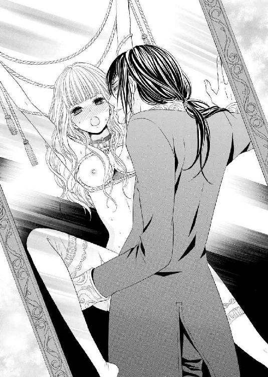
ピンで壁に留められた蝶さながら、エレノアは肉付きの薄い腹部を激しく痙攣させながら、数えきれないほど達してしまう。
焦らし焦らされた挙句の身体はどんなかすかな快感すら貪欲に貪るというのに、子宮がどうにかなってしまうのではというほどの振動に苛まれる。
快感が子宮を通して全身へと拡がっていく。
めくるめく官能の波に脳を掻き回され、何も考えていられなくなる。ただ荒らぶる交わりに本能を剥き出しにされ、はしたない声が喉を突き上げてくるばかり。
「あぁああっ！ ま、またっ！ ンッ！ ンンンンッ！」
全身をわななかせると、エレノアはもはや何度目になるかしれない気をやった。
限界を幾度も上塗りされたことさら深い絶頂の名残に身を委ね、四肢を弛緩させる。
セルジュは一番奥へと己を収めたまま、彼女を強く抱きしめてようやく動きを止めた。
「──エラ、君の中は幸せに満ちているな。歓喜に打ち震えている」
息を弾ませながら色香を帯びた声で囁く。
エレノアは薄く目を開けると、甘えるように彼をじっと見つめた。
何も言わずとも、セルジュは彼女の言わんとすることを察して小さな唇を味わう。
一つに溶け合ったまま、絶頂の余韻に浸りながらの口づけはなんともいえず幸せで、エレノアは笑み崩れながら涙ぐむ。このまま時間が止まってしまえばいいのにと願う。
しかし、唇をついばむだけのキスは、だんだんと深いものへと転じていく。
二人の舌が絡み合い、一旦静まったはずの興奮が再び蘇っていった。
（兄様のが......私の中でさらに大きく......）
張り詰めきった男根は、秘所の奥でエレノアを誘うように上下に力強くしなる。
気を逸らせようとして、エレノアは自分から舌を奥へと突き入れ、深いキスに没頭する。
だが、それをセルジュが赦すはずもない。
彼女を窘めるように頭を撫でると一旦唇を離してしまう。
そして、名残惜しそうに唇を尖らせるエレノアへと命令した。
「もっと力を入れて──自分で締めつけてみなさい」
「──っ!?」
信じられない命令にエレノアは目を見開く。
「そんな、どうやって......分かりません......」
「いつもしているようにすればいい」
思い当たることがなく当惑するが、彼の視線を追ってその意味を知った。
彼のまなざしは床に転がる宝珠へと向けられている。
あの変わった宝石はそのためのものだったのだと今さらながらに悟り、エレノアは恥ずかしくなる。
「......わかり......ました」
躊躇いがちに言うと、ことあるごとに宝石が外に出てこないようにと下腹部に力を込める感覚を思い出して同じようにしてみる。
「ああ上手だ。うまくなっている。もっと自分で動かしてみなさい」
「は、い。ン......あ、あぁ......」
エレノアが力を込めてみるたびに、それに応じるかのようにセルジュが半身を動かす。
情熱の赴くままに激しく交わるのとはまた異なった種の快感が身体の芯に沁みてくる。
先ほどの勇ましい抽送が燃え盛る炎だとしたら、木切れの中で燻る火種──気がつかないうちに内側全体を真っ赤に染め上げるものによく似ている。
セルジュは腰を回すように動かすと、先端で子宮口を刺激した。
一番奥をこんな風にじっくりと虐められるのは初めてのことで、エレノアは腰をくねらせながら喘いでしまう。
最初は意識して姫壺を引き締めていたが、やがてさらなる責めを求め、無意識のうちに締まりはじめた。
「はぁはぁ......あぁ......変な感じ......がして......あ、あ、ああぁ、一体どうしたら......」
「じっくりイきなさい」
優しく囁くとセルジュは再度ゆっくりと腰を動かし、肉棒で奥を突き始めた。
最奥を穿たれるたびに鈍い快感が響き、甲高い嬌声が乱れる。
こんな焦らされ方をされたのは初めてのことだった。深い悦楽をじっくりと身体の奥に刻み込まれ、エレノアは煩悶する。
「あ、ああぁあ......も、もう......駄目です......これ以上は......」
焦点が定まらなくなった目を泳がせながら、総身がガクガクと揺れ始めた。
もうすぐ限界、否、すでに限界を超えているのだと悟ったセルジュが、再び荒々しく腰を動かし始めた。
その動きに合わせてエレノアの細い身体が跳ね、痙攣が止まらなくなる。
「やぁああ！ いやぁああっ！ もうっ......おかしく、なって......あ、あ、あぁああッ！」
一際鋭い嬌声をあげたその瞬間、セルジュが彼女の腰を抱え込むようにして、全身全霊を込めて最奥を穿った。
刹那、時が止まったかのようにエレノアの全身が硬直する。
姫壺が肉槍を何度もきつく締めあげて精液を吸い上げていく。
身体の奥が彼の熱で満たされていくのを、エレノアは深いエクスタシーの彼方でおぼろげに感じていた。
「エラ、愛している......」
「............」
深く結ばれたまま強く抱きしめられ、返事をしなければと口を開くが、乱れた吐息が洩れ出るばかりで何も言葉が出てこない。
セルジュは震える彼女の唇を優しくついばむと、しばらくそのまま動かずにいた。
エレノアの深い呼吸の音だけが部屋に沁み入っていく。
やがて、彼女が落ちついたのを見てとると、そこでようやく彼は半身を引き抜いた。
くぐもった音がすると同時に、大量の精液と蜜とが秘所から滴り落ちていく。
たちまち鼻を突く甘酸っぱい官能的な香りが部屋に満ちた。
「大丈夫か？ エラ」
おずおずと頷いて笑ってみせるエレノアだが、その笑顔はこわばり、あまりにも激しく達してしまった名残の震えはいつまで経ってもおさまりそうにない。
彼女の頭を何度も優しく撫でながら、セルジュは耳打ちした。
「──君のためだけに作らせた宝珠の効果を身をもって思い知った」
エレノアはなんと答えたらいいか分からずに唇を噛みしめる。ずっと埋め込まれていた宝珠が、あんなにもいやらしい目的のために作られたものだとは知らなかった。
「試験は合格だ。この分ならばそろそろ次の段階に進んでもいいだろう」
「え？」
思いもよらない言葉にエレノアが顔をあげた。
彼の色違えの双眸がすぐ近くで妖しい光を放っていて心臓が跳ねる。
汗ばんだ前髪が額に張り付き、いつも隠しているほうの黄金の瞳が露出していたのだ。
まだ獰猛な光を宿したままの危険なまなざしに射抜かれ、エレノアは魔法にかけられたように硬直する。
そんな彼女の目の前へとセルジュが突き付けたのは、夜空に金粉をちりばめたかのようなラピスラズリで作られたオブジェだった。
滑らかな曲線をもつそれはあからさまに男根の形を模していて──エレノアは青ざめる。
「これは......一体」
「説明はいらないだろう？ よく知っているはずだ。ついさっきまで存分に味わっていたと言えば分かるか？」
「............」
間違いない。これは彼の半身の形を模したものなのだろう。その使用用途はさすがのエレノアも察するにあまりあった。
「宝珠は卒業だ。次はこれで君を調教する」
「無理......です。そんな大きな......重そうなもの......」
「主の命令は絶対だ。君は私だけのドールなのだから」
こう言われてしまえば抗いようがない。
エレノアが切羽詰まった表情で閉口すると、セルジュは彼女の股間から滴り落ちていく愛液を掌で受け止め、それを淫猥な張り型へと塗りたくった。
新たな淫具は蜜に濡れシャンデリアの光で鈍い光を放ち、エレノアを威嚇する。
「っ!? あ、あぁああ......」
ひんやりと冷たい無機質な塊が熱く火照る坩堝の中へと侵入してくる感覚に、きつくくいしばられた唇が解け悩ましい声が放たれた。
それは例の宝珠とは比較にならないほど太く長く奥まであたっていた。
「やっ！ う、っく......うぅうううう......」
必死に股間に力を込めるが、さすがにその重さを支えきることはできない。
滑光る張り型が膣圧で外へと半分抜け出てきてしまうが、セルジュの手が無理やりそれを奥へと押し込んだ。
子宮口に張り型の出っ張りが食い込んできて、エレノアは悲鳴をあげる。
「できません......重すぎて......抜けてしまいます......」
「大丈夫だ。すぐに慣れる。それまで抜け出てこないようにこれをつけておきなさい」
安堵に表情を緩めるが、彼が新たに見せてきたものを目にして再び青ざめた。
セルジュが手にしていたものは、美しい透かし彫りが施された銀製のプレートだった。甲冑の一部のようにも見える。
会話の流れからショーツ代わりに使うものだと分かるが──それ以上に何かとんでもない秘密が隠されているような気がして胸がざわめく。
その秘密は彼によって明かされた。
「これは貞操帯だ。張り型が外に出てこないようにするためのものでもあるが、同時に他の男が君を奪えないように防ぐためのものでもある」
フランソワに襲われかけたときのことを思い出して、エレノアは身をこわばらせる。
きっと彼は、二週間後に迫ったリディ主催の仮面舞踏会のことを言っているのだろう。
また同じような目に遭うのだろうか？
前は間一髪のところでセルジュが護ってくれたが、次もそうだという保証はない。だからこそこんなものをつける必要があるのだろう。
エレノアは怯えた表情で目を伏せる。
「兄様は......舞踏会にはいらっしゃらないのですか？」
勇気を出しておずおずと尋ねてみるが、セルジュは憂いに沈んだ様子で黙ったまま彼女の髪を指で梳かし続けるのみ。
その態度から、エレノアは自分一人で舞踏会に参加しなければならないことを悟り──そして、恐らくそのときこそが彼との別れの時になるのだろうと予感する。
胸が鋭い刃物で突き刺されたかのような感覚に身が凍る。
「............」
急に怖くなり、それ以上何も言えなくなったエレノアはきつく唇を噛みしめると俯いた。
あと二週間しか彼と一緒にいられないなんて信じたくない。
覚悟は決めていたはずなのに、自分でも驚くほど動揺し身体が震えてしまう。
（駄目......兄様に心配かけてしまうのに......）
両腕を抱きしめるようにして、懸命に震えを堪えようとするが一向に収まらない。
彼女の背中を撫でながら、セルジュは苦悩を滲ませた声で言った。
「エラ、約束しなさい。私の元を旅立つまではけして誰にも騙されないと。私以外の誰かに身も心も許さないと。ここは魑魅魍魎の魔窟だ。罠と裏切りと死にもっとも近い場所と言っても過言ではない」
別れを強く想起させる彼の言葉が、エレノアの胸を容赦なく抉る。
（私と一緒にいられる方法がないわけではないと仰っていたのに......その方法を教えてはくださらないのね）
最後の最後まで希望を捨て切ることができなかった。
しかし、その芽も彼自らの手によって摘まれ、目の前が深い闇に閉ざされていく。
それでも彼女が気丈に頷いてみせると、セルジュは哀しそうに微笑んだ。
「私の元を旅立ったその後は自分で幸せを掴みとりなさい。そのために必要なものは私が全て用意する。君の幸せが私の幸せだ」
（私の幸せは......ずっと兄様と一緒にいること。兄様のお人形でありつづけることなのに）
どれだけそう言ってしまいたかったか。
しかし、それを言ってしまえば彼との約束を違えてしまうことになる。そもそも秘密の関係を結ぶことができたのは、その約束あってのこと。それを覆すようなことをセルジュが赦すとは思えない。
断腸の思いで沈黙をまもったままエレノアは顔をあげると、彼の前髪を掻きあげ、思いの丈を込めて色違えの双眸を見つめた。
情熱的なまなざしに応え、セルジュが再び彼女の唇を優しく奪いにくる。
穏やかな快感に胸の痛みがほんのわずかに和らぎ、エレノアは無我夢中になって深い口づけに没入する。
今は何もかも忘れて彼のことだけを感じていたい。
二人の身体と熱い吐息が再び折り重なり、淫らに絡み合っていった。
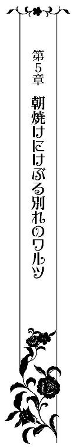
そのドレスは夜明けの大空を彷彿とさせるものだった。
白い布地の上に濃いヴァイオレットのシフォンの布地を重ねてグラデーションをつくり、裾にあしらわれた精緻なレース飾りが優美に揺れるたびに、散りばめられた宝石が星々のように輝く。
これほどまでに美しいドレスは見たことがない。
エレノアは心ここにあらずといった様子で鏡の中の自分を眺めていた。
肩や胸元が剥き出しになり、裾には挑発的なスリットが入っているマーメイドラインのドレスは扇情的なデザインをしているにもかかわらず品があり、自分がいつか着てみたいと夢見ていた以上のものだった。リディに贈られたものと似て非なるのは、オーダーの意図によるのだろうか？
ミステリアスな大人の女性の色香を身にまとった鏡の中の自分が別人のように思えて仕方がない。無論、特注のドレスやアクセサリー、メイクのせいもあるだろう。
しかし、身にまとう雰囲気までは見た目でどうこうできるものではない。最愛の人と過ごした特別な一ヶ月によるものに違いない。
エレノアは夢見るような目つきで彼と紡いだ思い出を振り返っていた。まるで目の前に突き付けられた現実から逃れようとでもするかのように。
セルジュは黙ったまま、丁重な手つきで彼女の髪を櫛で梳いていく。
まるで瞑想のような静けさが辺り一帯を支配する中、懐中時計の針が時を刻む音だけが妙に響く。獲物を逃すまいと追い詰めるかのように。幸せな思い出に浸るエレノアを現実へと情け容赦なく引き戻す。
朝焼けがけぶる中、二人の姿は王城の広大な敷地内にある小さな離宮にあった。正確にいえば、その離宮の庭にひっそりと建てられたこじんまりとした解放的な神殿に。
繊細な浮き彫りが見事な円形天井を十二本の円柱が等間隔に取り囲むように支えているだけの神殿。中央には愛の女神の像が置かれていて、その表情はどこかエレノアに似ている。
そこにセルジュは、アンティークの姿見をしつらえクッションを敷き詰め、エレノアを座らせた状態で彼女の身支度を整えていた。
ここは二人がかつて秘密の遊戯に耽っていた思い出の場所であり、最初に出会った場所でもあった。
彼の心遣いをうれしく思いながらも、エレノアは刻一刻と近づきつつある別れを意識せずにはいられずにいた。
今夜、仮面舞踏会はリディが所有するローズ城でおこなわれる。
世界中から珍しい薔薇を集めた美しい庭園が見事な城で、その名の由来となっている。
子供の頃、セルジュから何度も聞かされていた夢のように美しい城。秘密のごっこ遊びの下敷きであった自作のおとぎ話の舞台──
セルジュの亡き母が国王から贈られた城で、かつて彼が幼少時代を過ごした場所でもある。
おとぎ話に出てくるような可愛らしい城を夢見て、いつか一緒に行ってみたいとは思っていたが、まさかこんな形で訪れることになろうとは思ってもみなかった。
偶然というのは恐ろしい。
否、本当に偶然なのだろうか？
リディのことだから、何か特別な思惑があってのことかもしれない。
そもそも、セルジュにとって特別な思い入れのある城の所有者がなぜリディになっているのだろう？ 彼の母親が所有していたものならば、彼女亡き後、一人息子である彼が譲り受けるはずなのに......。
姉弟の間に横たわる溝は、自分が思っていたよりずっと深く底知れないものなのかもしれない。にもかかわらず、幼い頃のままの関係が続いているのだと信じて疑ってすらいなかった幼い自分が恨めしい。そのくせその溝の奥底を覗き込もうという勇気まではない。自分が信じていたものすべてが壊れてしまいそうで恐ろしくて。
もうすでに彼と多くの秘密を共有することによって、その大半が壊れてしまったような気はするが、これ以上壊れてしまえば本当に自分がどうなってしまうか分からない。
葛藤と自己嫌悪とに苛まれながら、エレノアは懐中時計の秒針に目を落とした。
容赦ない現実は刻一刻と迫りつつある。
ローズ城はアルカディアの辺境、ランスと隔てる国境近くに位置しており、王城を早朝に発てば夕方には着く見込みだ。
もう一日の猶予も残されていない。
こんな風に彼に触れられるのもこれで最後になるかもしれない。そんな悲しい予感に胸に疼痛がはしる。
「──これでいいだろう」
独り言のような彼の呟きを耳にした途端、心臓がぎしりと軋む。
いよいよその瞬間がやってきてしまったのだ。
エレノアは恐るおそる懐中時計から顔をあげると、鏡の中の自分に意識を戻した。
刹那、ティアラにあしらわれた大粒の紫の宝石が顔を出したばかりの太陽の光を反射して強い輝きを放ち、そのあまりもの眩しさに目を細める。
「バイオレットダイヤモンドだ。今の君に一番相応しい宝石を贈りたくて用意した」
色付きのダイヤモンドはどれも稀少なものだが、中でもバイオレットはとても珍しいものだと聞いたことがある。
驚きに息を呑むエレノアにセルジュは囁いた。
「エラ、たった今、君は世界中の誰よりも美しいレディとなった。私の誇りだ」
彼の賞賛は喜ぶべきはずのものなのに、エレノアの胸は悲しみと苦しみではちきれんばかりだった。そんな彼女をセルジュが窘める。
「女性にとって最高のアクセサリーはとびっきりの笑顔だと教えたはずだが？」
「すみません......」
エレノアは、両方の口端を上げて必死に微笑んでみせようとするが、ぎこちない笑みにしかならない。
感情が素直に顔に出てしまう鏡の中の自分をうらめしく思わずにはいられない。大人は場合に応じた仮面を被ることができるもの。まだその域には到達できていない自分がもどかしくも口惜しい。
「エラ、怯えなくてもいい。他の誰も君の心まではけして奪えはしないのだから」
「私の心は......セルジュ様だけのものです」
「無論、私の心も君だけのものだ。それさえ分かっていれば何も恐れるものはない」
慰めの言葉に胸の痛みが幾ばくかは和らぐが、それでも底知れない不安と恐れを拭い去ることはできない。
セルジュが彼女へと鏡越しに笑みかけると、背後から腕を回して抱きしめた。
エレノアは彼の腕にそっと口づける。
「他人に認めてもらう必要などない。二人が認め合っていればいい」
「ええ......」
頷いて同意を示すが、そう頭では分かっていてもどうしても笑顔にはなれない。
（今は認め合っていたとしても、いつか私が他の人の物になってしまったのではないかと疑われてしまったり、失望されてしまったらどうすればいいの？ もうこんな風には会えなくなるのだろうし、誤解を解くことすら難しくなってしまうのでは......）
不安を拭い去ることができず、泣いているような笑ってるような表情しか作れない。
もうこれが最後。心残りのないように、エレノアは意を決してずっと彼に尋ねることができなかった質問を口にした。
「......これが......前に仰っていた私たちがずっと一緒にいられる方法なのですか？」
セルジュは静かに首を左右に振ってみせる。
「君はもうその方法を知っているはずだ。だが、ずっと続けることはできないだろう？」
そこでようやくエレノアは彼の方法がどういったものか理解した。
秘密の通路を使って逢瀬を重ね、誰からも見られてはならない存在──いわゆる愛人という立場であり続けるということ。
「そんなことありません！ 私は......」
「君ができたとしても私が無理だ。君を独占しておきたい。だが、君を他人から後ろ指をさされるような立場に追いやることはできない」
「............」
彼の口調は、誰が何を言おうともけして覆すことができない強い決意を感じさせるものだった。
エレノアの目から涙が静かに一筋流れおちていく。
「君の涙は見たくない。だから、君を手放してしまう前に新たな誓いを立てよう」
恐るおそる目を開くエレノアを自分のほうへと向かせると、セルジュはマントを後ろに払いのけその場へと跪いた。
王が自分の前に跪くなんて恐れおおいことだと、エレノアは慌てふためく。
だが、構わずセルジュは彼女をじっと見つめて言葉を続けた。
「エラ、私と結婚してほしい」
「っ!?」
信じられない言葉が彼の口から紡ぎ出され、エレノアは自分の耳を疑う。
（......これは夢？ セル兄様との別れから逃れるための？）
なんて幸せな──しかし、残酷な夢だろう。ずっと夢見ていた瞬間なのに、ありえないことだと信じることができない。
苦しそうに笑み崩れるエレノアを見つめながら、セルジュは懐から小さな箱を取り出し、蓋を開いて彼女へと恭しく差しだしてきた。
小箱の中にはティアラと同じバイオレットダイヤモンドをあしらった指輪が輝いている。
エレノアが震える右手を差し出そうとすると、彼は彼女の左手をとってその薬指に指輪をはめた。
信じられない思いで、エレノアは涙ながらに薬指に光る婚約指輪を眺める。
「うれしいです......まさかこんな......」
法的な婚約ではない。いわばこれもごっこ遊びの延長のようなものにあたるだろう。
それでも十分すぎるほど幸せだった。
誓いがこうして形になっただけで勇気づけられる。
一縷の希望すら潰え、暗雲に閉ざされた胸の中に一条の光が差し込んでくる。
いつか結婚指輪を交わすときが来るかもしれない。万に一つの希望だとは分かっていても、それがあればなんとかつらい現実を受け止めることができるような気がする。
（私からも何か誓いを形にしてお渡ししたい......）
そう強く思う彼女の目に、いつも一緒だったベスの姿が飛び込んでくる。
エレノアはベスを抱きあげると、一度ぎゅっと抱きしめてからセルジュへと差し出した。
「私の代わりに......この子を置いていきます」
「ベスには君の代わりは到底務まりそうもないが──」
「代わりが務まらないようでしたら人質にしておいてください。必ず......必ず取り戻しにいきますから......」
アメジストの両目から涙がとめどなく溢れて、頬、顎を伝わり落ちていく。
「──そうか。分かった。いつでも歓迎しよう。待っている」
二人は互いに見つめ合うと、吸い寄せ合うように唇を重ねていった。
蕩けるような優しい口づけに、ようやくエレノアの顔に切なく淡い笑みが引き出される。
このまま時が止まればいいのに。別れなんて永遠に来なければいいのに。
切に願いながら、迫りつつある別れから逃れるように情熱的な口づけに没頭する。
いつも以上に甘やかな快感が全身を駆け巡り、たちまち理性を麻痺させてゆく。
しめやかな水音にエレノアの甘い喘ぎ声が混ざり、セルジュの牡を煽りたてる。
だが、いつもならば彼を獣と化する呼び水となるはずなのに、今日はいつまで経っても唇を味わうだけでその先へと進もうとしない。
エレノアが物問いたそうに薄く目を開くと、セルジュは彼女から唇を離して人差し指をあててきた。
そして、呻くように言った。
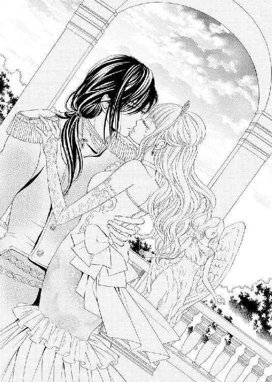
「──ここまでにしておこう。これ以上は危険だ。私の中に眠る獣が目覚めてしまう。何をしでかすか分かったものではない。これまでは瀬戸際でかろうじて止めてきたが......」
セルジュが言葉半ばで前髪を無造作に掻きあげると、自嘲的な笑みを浮かべてみせる。
色違えの瞳が煌々と輝いていたが、その奥には底知れない闇が広がっていた。いわば狂気を宿した双眸。見てはならないものを見てしまった気がしてエレノアは竦んでしまう。
今までに彼が見せてきた獣の本性は、まだまだその本質には程遠いものだったのだと思い知らされ、震えが止まらなくなる。
誰よりも深く愛しているはずの人なのに、本能が彼は危険だと警鐘を鳴らす。
「私の部屋に君を閉じ込めて、本物の人形にしてしまいかねない」
熱っぽい吐息と共に恐ろしい響きを持つ言葉を放つセルジュ。
これは単なる比喩ではない。エレノアはそう直観して身震いする。
その震えが慄きによるものか、興奮によるものか、自分自身にも分からなかった。
ただ、今ここで彼の言葉を認めてしまえば、恐らくとんでもないことになる。取り返しのつかないことになりそうだということだけは感じる。
「それでも私は──」
「エラ、それ以上何も言ってはならない。これは命令だ」
「............」
勇気を奮い立たせて口にしようとした台詞を厳しい口調で止められてしまい押し黙る。
セルジュは禍々しい笑みを浮かべたまま、獣のように荒々しい息を弾ませていた。
必死に内なる衝動と戦っているかのように見える。
しばらくして、セルジュは深いため息をつくと、エレノアの腰に手を回して自分のほうへと引き寄せた。
そして、耳に口を寄せて甘く囁く。
「──エラ、最後に、私と一曲踊ってはくれないか？」
音楽もないのに──と、戸惑うエレノアだが、じきにそんなものは必要ないと知る。
セルジュは彼女の手をとると、優美な身のこなしで彼女をリードしていく。
驚きに目を瞠りながらエレノアは彼のエスコートに身を委ね、軽やかなステップを踏む。
ドレスの裾が風をはらんでふわりと舞い、鮮やかな弧を描いてはちりばめられた宝石が朝日を浴びて煌く。
（信じられない......こんなに踊れるなんて......）
彼の巧みなリードは、ダンスが苦手だということすら忘れさせてしまう。
エレノアの脳裏には、管弦楽団の奏でるワルツが流れていた。
足下を見て確かめなくても、自然と正しいステップを踏むことができる。何も考えなくても身体が流れるように動く。
セルジュは、エレノアの全てを熟知しているかのように絶妙なタイミングで息を合わせて、彼女を導いていく。
朝焼けにけぶる中、二人は寄り添うように重なり合い、のびのびとした動きでワルツを舞い続ける。
（ダンスがこんなにも心地良いものだったなんて......一緒に踊るパートナーによってこんなにも違うなんて......知らなかった）
新たな世界が拓けていくような感覚に、エレノアは切なそうに笑みくずれる。
これまで幾度となく、彼のエスコートによってエレノアの世界は拓けてきた。
最初から最後まで、新たな世界へと導いてくれるセルジュの献身に深く感謝しながらエレノアは彼と踊るワルツに没入する。
（兄様私、絶対に忘れません。兄様が私に教えてくれたこと......）
エレノアは思いの丈を込めてセルジュを熱っぽく見つめながら舞うように踊り続ける。
このままいつまでも彼と二人きりで踊り続けていられたらいいのに......そんな叶うべくもないむなしい祈りを胸に抱きながら。
そのときだった。
セルジュが不意にエレノアの腰を強く引き寄せ、上半身を傾けてきた。
エレノアは彼の腕に身を委ねて背筋を反らすと、間近で彼の色違えの双眸を見つめる。
すでに狂気の色は消え失せていた。
しかし、その奥にはやはり情愛の炎がくすぶっている。
セルジュは彼女の上半身を起こして優しく抱きしめると、耳元に再び囁いてきた。
「ダンスのエスコートには女性の扱い方が出る。男を見抜くのにふさわしい指標となる。よく覚えておきなさい。これが私が君に贈る最後のレッスンだ」
最後のという言葉が鋭く突き刺さり、エレノアは苦しげに目を閉じる。
セルジュが彼女の手へと何かを持たせてきた。
「これは......鍵？」
「ああ、君が本当に結ばれたいと願った相手に渡しなさい」
「──っ!?」
彼の言わんとすることを察したエレノアは大きく目を見開き、身体を硬直させた。
これは常に自分を縛めてきた封印を解く鍵。この鍵を渡されたということは、彼の淫らな束縛から解放されるということ。苛烈な調教を受けている際にはずっと外してほしいと願っていたはずなのに。いざその自由を手にいれると、こんなにも空しく途方に暮れてしまうとは。
仮面舞踏会でセルジュに代わる誰かを選び、その相手にこの鍵を渡すように──彼はそう言っているのだ。
幸せの絶頂から絶望の奈落へと突き落とされ、エレノアは茫然自失となる。
アメジストの目から、再び大粒の涙が零れ落ちていった。
セルジュは、何も言わずに彼女の涙をキスで拭い、その手に鍵を握らせた。
拒もうとしたエレノアだが、まったく手に力が入らず、鍵を受け取ってしまう。
たった今プロポーズされたばかりだというのに、突如別れを突き付けられ、嗚咽が身体の奥から突き上げてくる。
（私が本当に結ばれたいと願う人なんて......兄様以外にいるはずがないのに......どうしてそんなひどいことを......）
頭から冷水を浴びせられたような感覚に唇をきつく噛みしめる。
セルジュは、その場に立ち尽くしたエレノアから離れると、懐中時計を確認して彼女へと冷ややかともとれる口調で告げた。
「さあ、もう時間だ。スレインに馬車を用意させている。じき迎えにくる」
ついに別れの瞬間が来てしまった。
エレノアは両手をきつく握りしめると、哀しそうに彼を見つめる。
こんな突き放されるような別れ方はあまりにも辛すぎる。
せめて最後はきつく抱きしめてキスをして欲しい──そう願うも、セルジュは彼女から距離をとったまま動こうとしない。
つい先ほどの甘やかなやりとりがまるで白昼夢のようだった。
だが、彼が何の考えもなしにこんな振舞いをするはずがない。
エレノアは左指の薬指に光る婚約指輪に目を落として彼の本意に思いを巡らせる。
（......きっとセル兄様は私のためを思って敢えてこうしていらっしゃるんだわ......私の足枷になるまいとして......未練が残らないようにって......）
そこまで考えが及んだ瞬間、ようやく大人のやりとりの機微というものがおぼろげにではあるが分かったような気がした。
しかし、よりにもよってこんな時に知ることになるなんて......。
否、こんな時だからこそかもしれない。変化とは常に痛みを伴うものなのだから。
（兄様の思いやりに応えるためには......どうしたらいいのかしら......）
必死に考え、やがてエレノアは一つの回答を導きだした。
悲しみを胸の奥にしまい、ハンカチを取り出して涙を拭うと、うつむいていた顔を起こし、口端をあげて最高の笑顔をつくりあげる。
そして、ドレスのスカートを両手の指先でつまむと、優雅に腰を落として彼に貴婦人の礼をしてみせた。
「セル兄様、今まで本当にありがとうございました......私はもう大丈夫です。だから、行って参ります。どうか末長くお元気で。ごきげんよう」
声が震えてしまうが、どうにか最後まで言い切ることができた。
もう自分のことだけで手いっぱいな子供ではない。
愛する人のための嘘ならばつくことができる。
引き裂かれそうな胸の痛みを堪え、せめて彼との最後の思い出に最高の姿を残したいと背筋を正し、毅然とした表情を浮かべる。
セルジュはまぶしそうに彼女を見つめると、それでいいと頷いてみせた。
厳かな静けさの中、鳥の鋭いさえずりが折り重なるように空へと突きぬけていく。
しばらくして、馬車が近づいてくる音が聞こえてきた。
エレノアはドレスの裾を翻してセルジュに背を向けると、ゆっくりとした足取りでその場を後にし、馬車のほうへと歩いていった。
何度も後ろを振り返りたい衝動を必死に抑えながら──
ж ж ж
エレノアを乗せた六頭立ての馬車がローズ城へと着いたのは、すでに辺りが夕闇に包まれた頃だった。
色とりどり種々の薔薇が香る庭園にはいたるところにキャンドルが置かれ、暗がりの中、幻想的に浮かび上がっている。
リディ主催の仮面舞踏会は、薔薇が咲き誇る庭園と城を招待客へと解放したものだった。
通常の舞踏会とは趣が異なり、シャンデリアの灯りも抑えられ、闇に紛れてダンスや会話に興じる仮面を被った紳士淑女たちからは妖しげな雰囲気が醸し出されている。
リディの知り合いを集めているのだから顔見知りもいるはずなのに、想像以上にまったく誰が誰だか分からず、エレノアは戸惑う。
しかし、極力その戸惑いを表には出さず、澄ました表情及び態度を貫いて悠然と振舞う。セルジュ同様、周囲から向けられる熱っぽい視線を全く意に介していないかのように。
国王自らが特別にオーダーした一点もののドレスに身を包み、バイオレットダイヤモンドのティアラを頭にいただいたエレノアはセルジュの望みどおりに会場中の視線を集めていた。
以前までの彼女であれば、委縮してその場から逃げだしてしまっていただろう。
だが、エレノアはそんな自分を懐かしく思いながら、甘んじてこの状況を受け入れていた。
ここで逃げだして醜態を晒すわけにはいかない。
この場の誰よりも優雅かつ誇り高く振舞わねばならない。自分は彼が精根こめて磨きあげてくれた人形なのだから。
その自負こそがエレノアに今まで欠けていた自信を与えていた。
この舞踏会で一番の注目を集め、例の鍵を預けるに相応しい男性を探し出さねばならない。
さもなくば、フランソワの元に強制的に嫁がされることになってしまう。それでは今までずっと母のいいなりだった自分となんら変わらない。
自分の歩む道は自分の意志で選びたい──セルジュと禁忌を犯してしまったときから、その思いは強くなる一方だった。
（セル兄様......これが貴方の望んだ私。私の望んだ私......誰にも流されることなく、貴方と私が望んだ未来を掴んでみせます......）
エレノアはセルジュとの誓いを思い出しながら胸の内で覚悟を新たにする。
しかし、その一方で、胸の中央に風穴が空いたような感覚を拭い去ることはできない。
いつまでも子供っぽい自分が嫌いだった。早く一人前のレディになりたかった。セルジュに釣り合う女性になりたかった。
今、ようやく少しだけ彼に近づけたような気がするのに、肝心の彼は隣にいない。
彼に近づきたいと願った結果が、皮肉にも彼を永遠に遠ざけてしまったのだ。
エレノアが寂しげな微笑みを浮かべたそのときだった。
「──お嬢さん、一曲お相手お願いできますか？」
ワインレッドの仮面を被った青年からダンスを申し込まれた。
「ええ、喜んで」
即座に艶やかな微笑みをつくると、エレノアは差しだされた手に自らの手を重ねる。セルジュの最後の教えを思い出しながら──
（ダンスのエスコートには女性の扱い方が出るもの......見極めないと......）
管弦楽団が奏でるワルツの曲に合わせて、ステップを踏み始める。
が、早速相手とのタイミングが合わず、足がもつれてよろめいてしまう。
必死に足下を見つめて足運びを注意しながら相手に合わせて踊ろうとするが、思うように踊ることができない。相手の足を踏みそうになったり、他のペアと肩がぶつかってしまったりして、いつも以上にうまく踊ることができない。
（兄様と......こんなにも違うなんて......）
自分の全てを知り尽くしたセルジュとの心地好い別れのダンスを思い出し、切なさに胸が締め付けられる。
（やっぱり......私には兄様しかいない......他の誰も選ぶことなんてできない......）
痛いほど思い知らされ、今すぐこの場から立ち去りたかった。セルジュの元へと飛んで帰りたかった。
しかし、それはけして赦されないこと。自分にはもはや帰る場所はないのだ。
この場で誰か一人を決めなければならない。さもなくば操り人形のまま。親に決められた道を歩き続けるほかない。
（選べなくても......選ばなくてはならない）
胸の疼痛を堪えながら求められるままダンスの誘いに応じつづけていき、気がつけばエレノアの周囲にはタキシード姿の紳士たちが集まっていた。まるでかぐわしく咲き誇る花の甘い蜜に誘われる蜂のように。
賞賛と羨望のまなざしが、全身にねっとりと絡みついてくるようなものへと変化を遂げていくのを肌に感じ、エレノアは怖くなる。
（だけど、逃げては駄目。この中から......誰か一人を選び出すまでは......）
そう自分に言い聞かせようとするも、慄きと疲労に集中が削がれ、レディの仮面の下から臆病な子供の自分が顔をのぞかせてくる。
そして、必死に取り繕おうとすればするほどダンスの足運びがぎこちなくなり、さらに焦燥が煽られる。
「──っ!?」
高いヒールをはいた足が痛み鉛のように重く感じる。息が上がってしまい意識が朦朧とする。
しかし、相手はそれに気付いていない。
エレノアに見惚れ、細い腰を自分のほうへと強く引き寄せ、耳元に甘やかな口説き文句を一方的に囁いてくるばかり。
セルジュならこんなことはけしてしないはず。
ついそう考えてしまい、切なくてやりきれなくて、エレノアの目尻に涙が浮かぶ。
（どうしよう......これ以上は......もう......）
絶望的な思いで救いを求めるように周囲に視線をさまよわせる。
と、そのときだった。
何者かがエレノアの腰に回された青年の手を払いのけたかと思うと、彼女の手を引っ張って力強く手繰り寄せた。
ドレスの裾が孤を描き、エレノアのか細い身体が回転しながら、その人物の胸へと飛び込む格好となる。
エキゾチックな香水の香りにくらりと眩暈がして、胸がいっぱいになる。
（......兄様？ どうしてここへ？）
信じられない思いで仮面の男を見る。
リディの警戒の目をかいくぐって舞踏会に忍び込むことができたのだろうか？
考えを廻らせようとするが、意識が遠のいて思うように頭が回らない。
（きっと思いなおして......私を迎えにきてくださったんだわ......）
エレノアは涙ながらに縋るように彼の身体を抱きしめた。
その身体を軽々と抱きあげて横抱きにすると、男は堂々とした態度でその場を後にした。
周囲の羨望のまなざしを一身に受けながら。
ж ж ж
乱れた息を懸命に整えるエレノアを男は庭の外れへと連れ出した。
夜の冷たい空気を胸いっぱいに吸い込むと、ようやく頭がはっきりしてくる。
エレノアは細い肩を上下させながら──そこで初めて違和感に気がついた。
（......違う。兄様じゃない!?）
彼の腕の中ではない。そう悟った瞬間、頭から冷水を浴びせられた気になる。
ハッと息を詰めて彼を見据えると、そこでようやく男は足を止めた。
暗がりの中、口端を歪め彼女に目を細めてみせると、仮面を外そうとしてくる。
咄嗟にエレノアは顔を背けてかろうじて彼の手から逃れたが、かえってその動きが彼を煽りたててしまったようだった。
男は顔を庇う彼女の手を払いのけ、無理やり仮面を外しにかかる。
「いやっ......やめ......て！」
顔を両手で覆い隠すが、強引に解かれてしまい、仮面を奪われてしまった。
「驚いた──誰かと思えば君だったとは」
「っ!?」
聞き覚えのある声だった。自信に満ち、どこか相手をからかうような響きを持つ声。
フランソワ──仮面をつけてようが間違いようがない。彼に襲われかけたときの感覚が生々しいまでに蘇り、エレノアは口元を押さえた。
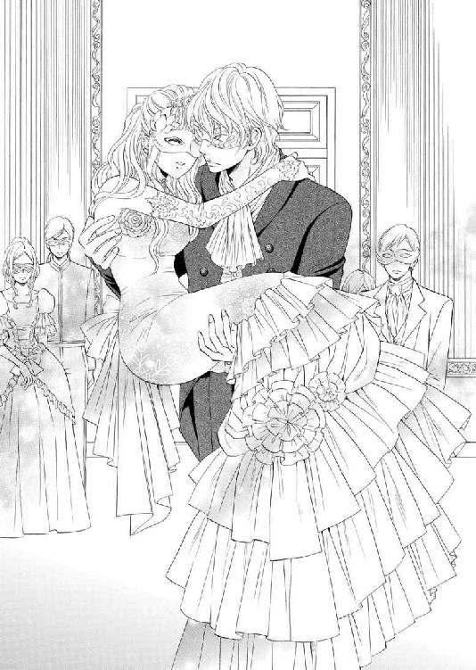
全身がガクガクと震え出して、抑えることができない。
「どうした？ そんなに震えて」
「............」
どこか勝ち誇った愉しげな彼の声色に青ざめる。
朦朧としていたとはいえ、とんでもない間違いを犯してしまった。よりにもよって彼と間違えてしまうなんて。
否、そうするように仕向けていたのかもしれない。セルジュが身につけている香水と同じものを身につけているなんて──
エレノアは唇をきつく噛みしめうなだれる。
「まるで別人だな。これはいくら捜しても見つからないはずだ。リディと一緒にずっと君を捜していたんだが、なかなか見つけることができなくてね。こんなことなら賭けなどせずに入口で出迎えればよかったと後悔していたところだ」
「賭け？」
「ああ、どちらが君を探し出せるかという賭けをしていてね。どうやら私の勝ちのようだ」
「............」
リディとフランソワにとって、自分は遊び道具のようなものなのだろうか？
彼らとの温度差に打ちのめされ、拳をきつく握りしめる。
（一体、人の人生をなんだと......私は真剣なのに......どんな思いで兄様と別れてきたと）
驚くほどの激情が胸に荒れ狂い、やがてそれが嘘のようにしんと静まり返る。
エレノアの顔から一切の表情が消え失せた。まるで本物の人形のように。否、まだ人形のほうが愛想よい微笑みを浮かべているに違いない。
冷ややかな声で彼女はフランソワへと「下ろしてください」と告げた。
だが、彼はそれを無視して、彼女の耳元へと情熱的に囁いてきた。
「──エレノア、ずっと君を捜していた。あの夜以来ずっと」
声色が真剣なものへと転じるが、エレノアの心には届かない。
それでも構わず、フランソワは彼女の耳の凹凸を舌でなぞり耳朶を甘噛みして、一方的に胸の内を滔々と明かしていく。
「っ!? や......いや......離して......」
「ようやく捕まえることができたのに離してなるものか。目の前で奪われ、奪い返したいと願って何度も足を運ぶもなぜか面会は叶わず──舞踏会を待つようにと君の母上に言われ、今日を待ち焦がれていた。これほどまでに焦らされたのは初めてでね。その間、君がどこで何をしているか──否、されているか、気が気ではなかった」
「......私には......何のことか」
「白々しい真似を。私の目をごまかすことはできない。私は君が別人のように美しく花開いた原因を知っている」
「......っ!?」
エレノアが表情を強張らせて身構えると、フランソワは彼女の首輪の宝石へと口づけ、不敵な笑みを浮かべてみせた。
（一体......どこまで知って......）
彼を警戒し、エレノアは今にも破れんばかりに荒々しい鼓動を刻む胸を強く押さえる。
誰にも知られてはならないセルジュとの秘密。それを知られているのだとしたら、とんでもないことになってしまいかねない。もしも彼の敵にその秘密を掴まれでもしたら、失脚だけでは事は済まないだろう。
国王の座を追われた者を待つのは斬首刑──エレノアは青ざめる。
「しかし、これほどまでとは。思ってもみなかった」
「......仰る意味が分かりかねます」
「この首輪がどんな意味を持つものか、分かる人には分かると言えばいいか？」
「っ!?」
フランソワの言葉に身を竦ませる。
ただの脅しに違いないと思いたい。だが、彼の余裕めいた笑みがその邪魔をする。
一見、チョーカーにしか見えないはずなのに、まさか首輪だと見抜かれてしまうなんて。
不安はいっそう色濃さを増し、エレノアのこめかみを冷や汗が伝わり落ちていく。
そんな彼女へと、フランソワは情け容赦なく追い打ちをかけた。
「君の主人は、あの人なのだろう？」
「......っ！」
もはや疑いようもない。彼は確実に自分たちの秘密を知っている。
なんとかごまさねば、否定しなければと思うが、喉の奥に小石が詰まったかのように言葉がうまく出てこない。
それでも必死に取り繕おうとする彼女を見た次の瞬間、フランソワの顔から笑みが消えた。
代わりに悪魔のような恐ろしい表情を浮かべ、苛立ちも顕わに彼女へと告げた。
「妬けるな──やはりあの時、どんな手段を使っても無理やり奪ってしまえばよかった。あの後、会場で君の姿を見ては何度後悔したかしれない。私としたことが、取り返しのつかない失敗をしたものだと」
「......無理やりだなんて」
「その台詞は私にではなく、あの人へと向けるべきものではないか？」
皮肉めいた口調には、あからさまな侮蔑の響きがこめられていた。
自分を非難されるのは別に構わない。だが、彼を非難されるのは耐え難い屈辱だった。
エレノアは目をつりあげて抗議する。
「あの方は無理やり迫ってきたりなどしません」
「ならば、望んで彼を受け入れたとでも言うのか？ それがどんなに恐るべき罪深いことだと分かっていながら」
「............」
フランソワの言葉の一つひとつが刃のように胸の奥深くを引き裂いていく。
赦されないこと、罪深いことだなんて最初から分かっていたことだが、第三者に改めて突き付けられると、己の罪の重さに耐えきれなくなりそうになる。
「苦悩に歪むいい表情だ──もっと虐めたくなる」
不意にフランソワがエレノアの顎を掴んだかと思うと、無理やり自分のほうを向かせて顔を覗き込んできた。
唇を奪われまいと必死に顔を背ける彼女を愉しげに眺めつつ、彼女の陶磁器のような頬を舌で舐めあげる。
「い、や......や、やめて......」
「もっと抵抗するがいい。この瞬間をどれだけ待ちわびたか。挑発されて焦らされた分、じっくりと愉しませてもらうつもりだ」
「挑発だなんて。そんなこと......していません......」
「よくもそんなことが口にできるものだな。何も知らない純粋無垢な少女のフリをするのはやめろ。目の前で奪われ、その上独占され続けていた。知らないとは言わせない」
怒りと嫉妬を顕わにエレノアの首筋に吸いつくと、彼女の首輪を間近で確認する。
「......これは特殊な首輪だな。鍵なくしては外すことができない特注品だ。これほどまでに君を独占したままでいたいとは......無理に外そうとすれば君を傷つけてしまうことになる」
脅しともとれる発言に生きた心地がしない。
「鍵はどこだ？」
「......知りま......せん」
「しらを切るつもりならば、力づくで白状させるまでだ」
フランソワはエレノアを地面へと下ろすと、そのまま覆いかぶさるように彼女の身体へとのしかかってきた。
「い、やっ！ 離してっ！」
激しく身体を左右に捩って魔手から逃れようとするが、足を絡められ固定されては思うように抵抗もできない。
「......その調子だ。もっと抵抗して愉しませろ」
フランソワは乱れた息を弾ませながら、胸元へと顔を埋めてきた。
熱く獰猛な息と舌とを感じて悲鳴をあげるエレノアを恍惚とした表情で眺めながら、容赦なく彼女のドレスの胸元を引きちぎる。
「きゃっ!? あ、あぁ......駄目......見ないで！ いやぁああ！」
「これはこれは、見た目にそぐわず大胆な下着だ。いや、拘束具といったほうが正しいか。実に優美な拘束具だ。見るなと言われても見とれずにはいられない」
革のベルトで胸を絞り出すようなデザインの淫らな下着と鳥肌立った乳房をまじまじと見つめながら、わざと彼女を嬲るような言葉を放つ。
目で犯されながら、エレノアは顔を真っ赤に染めて羞恥に打ちひしがれる。
必死に両手で胸を覆い隠そうとしても邪険にあしらわれ、ついには両手首を掴まれ、地面に縫いとめられてしまう。
彼から逃れようともがくが、動けば動くほど歪に歪んだ乳房がいやらしく揺れ動き、彼の目を楽しませるだけだと気づくのにそう時間はかからなかった。
「──そんなに焦らずとも存分に虐めてやるというのに。随分と大胆に調教されたものだ。さぞかし腕のいい主だったようだな」
フランソワが顔を左右に振って柔肉の感触を存分に味わったかと思うと、目の前で挑発的に揺れる突起へと歯をたててきた。
「っ！ あ、あ、あぁあっ！ ン......ッく......うぅ」
甘い嬌声をあげてしまうエレノアだが、口を引き結んで声を堪える。
だが、そんな態度がかえってさらに牡を刺激する。
フランソワは己の硬さを彼女へと押し付けながら、勃った乳首を口の中で弄び始めた。
「ひっ!? や......やぁ......ン......あ、あ、はぁ......ンンンッ！」
セルジュ以外にこんな声を聞かれたくなんてないのに。我慢することができない。
念入りに調教され、見事に花開いた身体はどんな瑣末な快感すら貪ってしまう。
「こんなにいい声で啼くようになったとはな。君が彼にどれほど愛されていたか伝わってくるかのようだ」
わざとはしたない音を立てながら、フランソワはエレノアの頂を吸いたて、舌先を小刻みに震わせて刺激する。
面映ゆい快感が胸の奥まで沁み込んできて、エレノアは喉元を反らし、首を左右に振りたてて身悶える。
好きでもない相手に意に反して身体に悦楽を刻みこまれるのがこれほどまでに屈辱的なことだとは思ってもみなかった。
全身全霊で相手を拒絶しても、甘い声と反応を止めることができない。
エレノアはセルジュの淫らな調教をこの瞬間だけは後悔した。
フランソワが二つの膨らみを鷲掴みにして中央へと寄せると、左右の頂を一度に口に含み、じゅくじゅくという音を立てて吸い立ててくる。
「っ!? い、やぁあっ！」
エレノアは悲鳴を上げると、四肢を突っ張らせて達してしまう。
奥のほうから大量の蜜が溢れてくるのを感じながら、悔しさのあまり涙ぐむ。
「涙ぐむほど気持ち良いか──もっともっとくるわせてあげよう」
「......違います......断じてそんなことは......」
「ああ、そんなことは分かっている。君は私に責められながら、彼の責めを思い出しているのだろう？」
「............」
思いもよらなかった返答にエレノアは驚く。
てっきり誤解されているのだとばかり思っていたが、どうやらフランソワもセルジュと同種の人間でそういう類の知識があるようだ。ならば、きっと自分の想い人はセルジュただ一人だと分かってくれるはず。諦めてくれるはず。
絶望の中に希望を見出したエレノアだが、フランソワは意地悪な笑みを浮かべてとんでもないことを口にした。
「だが、残念だったな。他人のものには興味がない男も多いだろうが、あいにく俺は他人のものを奪うほうが燃える性質でね──」
「......そん......な......」
「そして、欲しいと思った女性は一つの例外もなく奪ってきた。他の色に染め上げられた相手を俺の色に染め直すのは至難の業だが、その分遣り甲斐があるというもの」
下卑た笑いを噛み殺しながら、青ざめきった彼女のドレスをたくし上げていく。
ドレスの下にはさらなる秘密が隠されている。けして知られてはならない秘密が。
エレノアは絶望的な思いで、きつく目を瞑る。
「なるほど──まさかこんな拘束具まで仕込まれていようとはな......。それでか。君を無防備にも一人でこの危険な仮面舞踏会によこした理由は」
陶然としたため息をつきながら、フランソワは貞操帯をしげしげと眺めた。
頬を真っ赤に染め上げたエレノアは、彼の視線を浴びながら俯く他ない。
「ああ、ますます奪いたくなった」
低く唸るように言うと、貞操帯に顔を近づけ、その造りをフランソワは仔細に調べ始めた。
「見ないで......いや......」
エレノアはドレスの裾を戻そうとするが、そんないじらしい抵抗すら彼にとっては官能のスパイスにしかならないようだった。
「──首輪の鍵と同じもので外せるようだな。一体どこに隠した？」
「............」
指輪と一緒にネックレスの鎖に通したものをティアラと髪の間に編み込んであるが、それを悟られてしまうわけにはいかない。顔を背け、沈黙を貫くエレノアにフランソワは肩を竦めてみせる。
「あの人が持っているという訳ではなさそうだな」
「っ!?」
「図星か。ならば、君の全身を隅なく捜すしかないな。それとも、君が降参するまで淫らな拷問を続けるほうがいいか」
貞操帯の鉄板に縦長に設けられた隙間からのぞく粘膜を彼の舌が舐めあげてきた。
ねっとりとした蜜を存分にたたえた敏感な個所に滑らかな塊が触れてきた瞬間、エレノアの唇から甲高い声が放たれる。
「っ!? あああぁあっ！ いやぁあああっ！」
鋭すぎる快感が下腹部にはしり、腰を震わせながら軽く達してしまう。
蜜潮がとろりと奥から溢れだしていく。
「たったこれだけで達してしまうとは。狂わせ甲斐があるな。俺に逆らった報いを嫌というほど思い知らせてやろう」
フランソワが蜜を味わいながら、花弁の奥に護られた真珠を舌で掘り起こしていく。
舌先が肉核を弾いた瞬間、再びエレノアは声ならぬ声をあげて、鋭く達してしまう。
恥蜜が奥から勢いよく飛び出し、フランソワの顔や前髪を濡らした。
「──っ!? はぁはぁ......や、あ、そんな......に......したら......」
「我慢できなくなるだろう？ 奥にも欲しくなるはずだ」
彼女の腰を抱え込むと、フランソワは本格的に舌を躍らせ始めた。
感度の塊を舌で嬲られ、吸い上げられ、エレノアは半狂乱になって身悶えながら何度も何度も達し続ける。
必死に彼の頭を両手で押さえて自分から遠ざけようとしても、力で叶うはずもない。
絶頂を刻みこまれて蜜壺がきつく締まるたび、奥に仕込まれた張り型が存在を主張し、下腹部の奥へと鈍い快感が沁みていく。
何度もこれ以上は無理だと思うのに、絶頂は上書きされていき、よりいっそう感度が鋭くなっていく。
他の男に嬲られながらも、感じるのはセルジュただ一人。
その矛盾がエレノアの胸を妖しく掻き毟る。
ひっきりなしにはしたない愛液を洩らしながら身悶え、醜態を晒してしまう自分が赦せない。
セルジュへの裏切りのようにすら思え、目尻から涙が伝わり落ちていく。
だが、それすらも快感の涙と勘違いされてしまうのだろう。それが悔しくてならない。
エレノアは細い身体を波打たせて、くるわんばかりに首を前後左右に振りたてた。
セルジュに結いあげられた髪が乱れ、ティアラが外れそうになり、隠しておいた鍵がフランソワに見つかってしまうのではと気が気ではない。
鍵を見つけられてしまえば──今度こそ無理やり彼のものにされてしまうだろう。
もしも力づくでフランソワのものになってしまったとしたら、自ら望んで鍵を彼に渡したとセルジュに誤解されてしまうかもしれない。それは彼のこれまでのおこないの全てを全否定したことになる。
誕生パーティーのときとは違うのだ。自分を護るものは自分しかいない。なんとしてでもこの窮地を乗り切らねばとエクスタシーの高波に襲われながらも必死に考えを廻らせる。
強制的に何度も気をやらされて息も絶え絶えになるが、なんとしてでも理性を手放してなるものかと自らの太股をきつくつねり、痛みで快感を退けようと試みる。
「この期に及んでなおも主に操を立てようというのか。健気だな。だが、果たしてどこまで我慢できるかな？」
いったん唇を離すフランソワ。
貞操帯の溝と唇とに蜜が糸を引きながら、闇の中へと消えていった。
怒涛の悦楽責めから解放され、エレノアは全身を弛緩させて深い息をつきながら、乱れきった呼吸を整えようとする。
しかし、フランソワの責めはこれで終わったわけではない。
貞操帯の隙間からひっきりなしに滴り洩れてくる愛液を舌先で内腿に塗り広げ始める。
「あ......っく......うぅ......」
絶頂の余韻さめやらぬ敏感な身体に、今度は焦らすような快感が沁みていく。
考える余裕ができた分、かえって彼の責めをこと細かく意識させられることになる。
フランソワは、黒のレース仕立てのハイストッキングを力任せに破くと、そこから覗いた白磁の肌をじっくりと堪能していった。
ぬるりとした感触がエレノアの内腿からふくらはぎ、くるぶしへと移動していく。
やがて、ヒールまで脱がされてしまうと、足の指を口に含まれ、指同士の間を舌先で舐められ始めた。
「っ!? そんな......とこ......まで......」
「言っただろう？ 身体の隅々まで調べると。君の主はここは教えてくれなかったのか？ ということは、まだまだ俺にも調教する余地は残されているということだな」
笑いを含んだ言葉はセルジュへの侮辱のように思え、エレノアの頭に血が昇る。
自分のことならいくら侮辱されても堪えることができるが、セルジュへの侮辱はどんな些末なものであっても聞き捨てならない。
エレノアは唇を噛みしめると、決死の覚悟で足を勢いよく跳ね上げて彼の喉元を蹴ると、しつこくまとわりついてくる唇と舌から逃れることに成功した。
土を掴んでフランソワの顔へと投げつけると、身体を起こし、よろめきながらも無我夢中でその場から逃げだす。
恐ろしい呻き声を背後に聞きながら一心不乱に薔薇が咲き乱れる庭を駆け抜けていく。
きっとすぐに追いつかれてしまうだろう。逃げるなら今しかない。再び捕まってしまえば、今度こそ二度と逃げられないよう全身の自由を奪われた上で責められるに違いない。
「エレノア、逃げても無駄だ！ 戻れ！ 俺を怒らせるな」
忌々しげに激情を顕わにした怒号が後ろから追いかけてきて、生きた心地がしない。
フランソワを激怒させてしまった──もはや鍵を探し出してからじっくりとエレノアを味わうなどといった悠長なことは考えず、力づくで傷つけてでも無理やり襲ってきかねない。
エレノアは死に物狂いで逃げ惑う。
心臓がドクドクと太い鼓動を刻み、全身から嫌な汗が噴き出す。
背丈以上ある庭木を迷路のように成形した茂みの中へと飛び込み、何度も角を曲がって追手から逃れきろうとするが、ドレスが重く感じられ、すぐに息があがってしまう。
助けを求める声が誰かに届けばそれでいい。
裸足に小石が食い込み、腕には枝による細かな傷が無数に刻まれるが、そんなことに構う余裕はない。
やがて、庭木の迷路を抜けたちょうどそのときだった。
闇に沈む茂みから何者かが姿を現し、彼女の前へと立ちはだかった。
「っ!?」
エレノアが裂かれたドレスの胸元を掻き寄せて身構えて目を凝らす。
が、次の瞬間、安堵のあまりその場に崩れ落ちるように座り込んだ。
「あぁ、スレイン......」
セルジュの味方である彼と合流できたのだからもう大丈夫──不安と緊張が溶けて、全身の力が抜けていく。
しかし、そんな彼女を見下ろす彼の目はいつにも増して冷ややかだった。
ようやくエレノアが違和感に気づいて眉根を寄せると、スレインは腕を組み、皮肉めいた笑みを浮かべて彼女へと告げた。
「まるで助かったと言わんばかりの表情ですね」
「......っ!?」
憎しみが込められた口調は刺々しい。
スレインは、重苦しい沈黙の後、深いため息をつくと、理解しかねるといった風に首を左右に振った。
「おこがましい。いつ私が貴女の味方になったと？」
まさかこんな言葉を彼から向けられるとは思いもよらなかったエレノアはショックのあまり言葉を失う。
（どういう意味？ スレインはセル兄様の従者なのに......）
嫌な予感に心臓が軋みだす。
「貴女は昔からそうだった。誰からも愛されてきて何一つ疑うことなく育ってきた。世界には善良な人ばかりで誰も自分を傷つけたりはしない。そう信じていた。でしょう？」
「............」
これほどまでに明確かつあからさまな敵意を向けられるのは初めてのことで、うろたえてしまう。
「私はそんな貴女に昔から苛立っていました。稀少であるが故に殺伐とした世界の住人を虜にし、いつか滅ぼす魔性の存在」
「滅ぼすだなんて......」
「私の目をごまかせるとでも？ セルジュ様を呪いにかけておきながらよくそんなことを言えたものですね」
「......呪い？」
「ええ、そうです。呪いを断ち切るために必要なことならばと協力してきましたが、どうやら間違いだったようです」
そこで言葉を切ると、スレインは押し殺した声で言った。
「もういい加減、あの方を解放してはもらえませんか？」
「どういう......意味ですか？」
「他の主を見つけることです。それを約束していただけるならば、リディ様もこれほど乱暴な罠をわざわざ貴女に仕掛けたりはしないでしょう」
「スレイン......貴方......」
なぜ、今ここでリディの名が彼の口から出てくるのだろう？
胸がざわつき、動悸が加速していく。
疑念を確かめるのが怖い。だが、一度気づいてしまった違和感は拭いされない。
（まさか、スレインは兄様を裏切って......最初からリディ様と通じていた？）
動揺に揺れ動く胸を押さえるエレノアを追い詰めるように彼は歩を進めてきた。
「遥か東方に国王をたぶらかし、国を滅ぼした悪女がいるという話はご存じですね？」
「っ!?」
セルジュとの二人きりの会話を引き合いに出され、エレノアの顔に血が昇る。
間違いない。彼はリディ側の人間でずっと自分を見張っていたのだ。セルジュと二人きりだと信じて疑っていなかった時ですら......。
ショックと屈辱と羞恥が入り混じり、胸を千々に引き裂いては掻き回す。
エレノアは、胸の奥から突き上げてくる吐き気を堪え、両手で口元を押さえた。
そんな彼女を見下ろすスレインの目は凍てついた光を宿したまま、まったく動じない。
「貴女はその女王よりも性質が悪い──くだんの女王は自らの意志をもって国を滅ぼした。自覚があればこその痛みも味わったに違いない。だが、貴女は違う。自分の行い、存在そのものが国を滅ぼすものであるという自覚もなければ、痛みすら感じていないのだから」
「......っ」
そんなつもりじゃないという言葉が唇から出かかって、エレノアはハッとする。それは彼の発言を裏付けるものだと気づいて青ざめる。
「貴女は呪われた人形なのです。何も知らない無邪気な笑顔をして持ち主をくるわせ死に至らしめる」
何一つ彼に反論することもできずに放心してしまう。
ずっと彼のためだと思っていた。彼が望んだからこそ禁忌を犯して、彼の人形になったのだと、そう信じていたのに。
愛のためにこそと疑いすらしなかった信念が根底から覆され、身体の中央に風穴が開けられたかのような空虚な思いに支配される。
「今ならまだかろうじて間に合います。だが、本当にくるってしまえば恐らく誰にも止められなくなる。獣の瞳の伝承──単なる言い伝えとばかり思っていましたが、あながちそうとも言い切れない......」
「......言い伝え？」
「黄金の片瞳を持って生まれた者には獣の血が混ざっている。貴女も気づいていたでしょう？ 彼に秘められた狂気に」
「............」
時折、まるで別人のように危うい一面を見せるセルジュ。獰猛な輝きを放つオッドアイが脳裏に蘇り肌が粟立つ。
折に触れて感じていた彼の獣の本性。あの獅子のような黄金の瞳にまさかそんないわれがあったとは思いもよらなかったが、妙に腑に落ちるものがあった。
「狂王は己のみならず国をも滅ぼします」
「まさか、兄様がそんなことなさるはず......」
「本当にないと言い切れますか？ 獣の本能に幾度となく理性を奪われ禁忌を重ね、もはや瀬戸際まで来ているというのに」
苦悩を滲ませた彼の呟きには鬼気迫るものがあった。
「もしもセルジュ様が獣に支配されたそのときには──私の命を賭してもあの方を止めてみせます。狂王の誕生は阻止せねばなりません。誰もが不幸にしかならない破滅の道ですから」
スレインの強い覚悟に触れ、エレノアの胸が熱く震えた。
（ああ、スレインは兄様を裏切ったわけじゃない。兄様のことを真剣に想うからこそ......例え敵に回ろうとも憎まれようとも構わない......そう思っているんだわ）
なんて強いのだろうとまぶしそうに彼を見る。同時に深い感謝の念が込み上げてきた。
「......ありがとう。スレイン」
「貴女に礼を言われる覚えはありません」
「ええ、だけど、ありがとう......兄様の味方でいてくれて......」
「............」
涙を浮かべて笑みくずれるエレノアにスレインは怪訝そうな顔をする。
「私も......兄様の幸せのためならば、なんだってします。だから、どうかその方法を教えてください。貴方の考える兄様の幸せを教えて」
エレノアは毅然とそう言い切った。彼への想いならば自分も負けないという自負がある。
彼女の覚悟を耳にしたスレインの険しい表情が一瞬だけ緩んだ。
「その言葉を待っていました。本来ならばもっと早くに伝えるべきだったのですが......」
言葉を濁すところを見ると、本当は伝えずに済むことならばそうしたかったのだと伝わってくる。愛と憎しみは紙一重。それを肌で感じたエレノアの傷ついた胸に、あたたかいものが拡がっていく。
「獣の瞳の言い伝えを単なる迷信の類と笑い飛ばすこともできるでしょう。ですが、その迷信を信じる者たちこそが厄介であり、私のもっとも危惧するところなのです。国王が些末な不祥事で容易に王の座から引き下ろされることは珍しいことでもない。そして、失脚した王を待つのは死のみ」
死という不吉な言葉にエレノアは息を呑む。
脳裏には、かつて彼が垣間見せた憂いを帯びた表情が思い出されていた。
（兄様には敵もたくさんいる......傍にいて護ってさしあげたいと思っていたけれど、逆に私が兄様を危険に晒してしまっていたなんて......）
愕然としてうなだれる。
「......分かりました。もう二度と兄様には会いません。それが兄様のためならば」
「分かっていただけてなによりです。でなければ、貴女をこの場で捕まえ、フランソワ卿に差しだす他なかった」
「............」
恐ろしいことを淡々と口にするスレインの言葉も、もはやエレノアの耳には届かない。
どこか遠い世界の出来事を俯瞰して見ているかのようにしか感じられない。
（もうセルジュ兄様には会えない......）
アメジストの瞳からは生気が消え、摩耗したガラスのように変化していった。
もはや何も見えない。聞こえない。感じない。すでに彼の人形ではなくなったはずなのに、今のほうがよほどそのような心地がしていた。
まるで糸を切られた操り人形のように。
「それでは、リディ様の元へとご案内しましょう──貴女の覚悟が決まった際には全ての真実を明かす。そういう取り決めでしたから」
スレインがタキシードの上着を脱いでエレノアの肩にかけ、彼女の手を恭しくとると、さらに色濃い闇が揺らめく庭の奥へと案内していった。
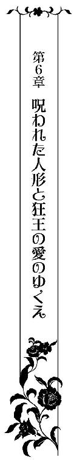
エレノアを連れ、スレインは奈落へと続くかに思われる螺旋階段を下りていく。
もしかしたらリディの話は嘘で、このまま人知れず彼に殺されるのかもしれない。そんな考えがエレノアの頭をよぎるが、不思議と恐怖は感じなかった。
現実味がなく他人事のようにしか思えない。
もうセルジュとは会わない──そう決めたそのときから、心が死んでしまったかのように何も感じなくなってしまった。
彼のいない人生なんて、もはやどうなろうが構わないという投げやりな気持ちに支配されていた。心が死ぬことは身体の死とそう変わらない。だから恐怖を感じないのかもしれない。
そのガラス玉のような虚ろな目はどこも眺めていなかった。
延々と続く階段を降り切った先に、古ぼけた扉が現れた。
「この先でリディ様がお待ちです。ここから先はお一人でどうぞ。二人きりで話をしたいとのことですので」
そう言うと、スレインは扉を開き、エレノアに中に入るよう促した。
エレノアが一歩扉の中へと歩を進めた先には、だだっ広い空間が拡がっていた。
天然の洞窟を利用した地下の礼拝堂のようだった。
異様な──禍々しいと言ってもいいほどの空気が場を支配していた。
その原因は一目瞭然だった。いたるところにエレノアに似せて作られた大小さまざまな人形が置かれ、肖像画が飾られていたのだから。
加えて、奥の祭壇にまつられているのは、国教が崇める女神ルナではなく、やはりエレノアに似せられた女神像だった。
「............」
エレノアが茫然自失となってその場に立ち尽くしていると、祭壇前の椅子に物憂げな表情で腰かけていたリディが立ちあがって口を開いた。
「エラ、とうとうここまで辿り着いてしまったのね......」
つらそうな表情を浮かべてエレノアのほうへと歩いてくると、人形のよう、否、それ以上に表情を失った彼女を力いっぱい抱きしめる。
「ごめんなさい。本当は隠しおおせるものならば隠したままでおきたかったけれど......彼への未練を断ち切らねば前には進めない。幸せにはなれない。だから、こうする他なかったの」
「......ここは......一体」
「セルジュが秘密裏に創らせた礼拝堂よ。私がお父様に無理に頼み込んでローズ城を譲り受けたのもあの子の狂気の証拠を残しておかねばと思ったから。これがあの子の恐ろしい本性」
いつからこんな礼拝堂を創っていたのだろう。少なくともリディが嫁ぐ前には既に存在していたはず。
彼の自分に対する恐ろしいほどの執着をまざまざと思い知らされ、冷たいものが足下から這いあがってくる一方で、エレノアの口元には淡い微笑みが浮かんでいた。
その歪な笑みに気がついたリディは悔しげに声を震わせる。
「──弟を止めることができなくて本当にごめんなさい。護りたかったのに護れなかった。スレインから全て聞きました......本物の人形のように扱われていたなんてつらかったでしょう。救い出したかった。だけど、警戒されてどうにもできなかったの」
「............」
エレノアは眉根を寄せて首を傾げる。リディの言葉が理解できないというかのように。
「今のほうが......よほどつらいです」
「......エラ？」
首輪に愛おしげに触れると、今にも崩れてしまいそうな危うい微笑みを浮かべる。
「私は無理やり兄様のお人形になったのではありません。初めて自分で選んだ道でした」
「違うわ！ セルジュがそう錯覚させているだけよ！ 洗脳みたいなもの。目を覚まして」
「錯覚でも洗脳でも構いません。幸せな夢をずっと見ていたかった......でも、赦されないことだということも分かっています......」
スレインから投げかけられた辛辣な言葉を反芻しながら、静かに目を閉じる。
「......理解できないわ。貴女はあの子が恐ろしくないの？ セルジュの貴女に対する異様なまでの執着は狂気の沙汰。それなのに......一体なぜ......」
「さあ......私にも分かりません。だけど、怖くはないです。むしろ、これほどまでに愛されていたんだと分かってうれしいです」
「......エラ、貴女一体......」
「私もまた兄様と同じようにくるっているのかもしれません。何せ呪われた人形ですから」
「............」
陶然と語るエレノアの言葉にリディは戸惑い言葉を失った。
ややあって、彼女は呻くように呟いた。
「どれだけ抗っても結局はこうなってしまうなんて......二人とも護りたかったのに......」
と、そのときだった。
突如、低い地鳴りのような音と共に、祭壇前の女神像が動き始めた。
リディがエレノアを背後に庇うと、険しい表情で胸元から精緻な鷲の彫金細工が施されたピストルを取り出して構える。
女神像があった場所には階段が現れ、そこから姿を現したのは──セルジュだった。
彼の姿を目にした瞬間、エレノアの摩耗した瞳に生気が蘇る。
（兄様？ まさか......迎えに来てくださったの!?）
夢か幻かと目をこするが、セルジュの姿は紛れもなくそこにあり消えることはなかった。
エレノアの視界が涙で滲む。
「他人の聖域に土足で踏み込むとは。姉上も随分と挑発的ですね。そんなにも私を敵に回したいのですか？」
「お黙りなさい。よくもエラにひどいことを......壊したのね......」
「壊したのは貴女だ。姉上──責任転嫁はやめていただきたい」
張り詰めた声でセルジュはリディを睨みつけた。
姉弟の間に緊迫した空気が流れる。
刹那、セルジュがゆらりと動くと、懐から銃を取り出しリディへと狙いを定めた。
「──っ!?」
姉弟が銃口を向けあう恐ろしい光景にエレノアは自分の目を疑う。
だが、二人はまるでこうすることが当然だと言わんばかりに落ち着き払っている。
「もう、やめてください！ こんな怖いこと！」
エレノアが悲痛な声を振り絞り、手を広げて二人の間に割って入った。
そんな彼女を見たセルジュの表情が歪にゆがむ。
「エラ、どきなさい。いい子だから」
「嫌ですっ！ やめてください......お願いですから......姉弟で傷つけ合うなんてどうかしています。昔はあんなに仲良しだったのに......一体どうして!?」
「身内だからこそ傷つけ合い殺し合う。それが権力を手にした一族の運命。私も何度身内に殺められそうになったことか。だが、母上や父上の仇を討つまでは死ぬわけにはいかない」
セルジュはエレノアの懇願にも耳を貸さず、冷ややかな表情のまま銃を下ろそうとしない。むしろ笑みすら浮かべて引き金に指をかけている。
彼は本気だ。エレノアの血の気が引き、足下から震えが這い上がってくる。
まさか彼の両親の死の原因が身内の権力争いだったなんて──恐ろしい事実を知り、そこでとある可能性に思い至る。
（......もしかして......お父様も？）
母は父の死に関しては昔から多くを語ろうとはしなかったが、それは残酷すぎる現実から傷つきやすく脆い自分を遠ざけるためだったのかもしれない。
エレノアが困惑した表情で肩越しにリディを見やると、彼女は眉根を寄せて辛そうに打ち明けた。
「......貴方たちはあまりにも純粋すぎて、その恐ろしい現実から逃れずにはいられなかった。おとぎの国のお人形遊びに耽るほかなかった......分かっているわ。悪いのは権力の魅力におぼれた大人たちだったって。だとしても、いつまでもそのままというわけにはいかない」
リディが頑なに自分たちを引き離そうとしていた本当の理由が明らかになって、エレノアは愕然とする。
「──ごっこ遊びは終わりにして現実を生きてちょうだい。もうこれ以上、大切な人たちが殺されるのを見たくはない。セルジュが獣の瞳を御すことができて国王として国を治めつづけることができれば、きっとすべてがうまくいくはず」
「そんなことは姉上に言われるまでもなく承知しています」
「ならば、なぜ貴方はここにいるの!?」
「さあ、なぜでしょうね？ その答えは私の獣の瞳だけが知っている──」
セルジュが色違えの目を眇めると、歌うような節回しで言った。
獰猛な獣を彷彿とさせる危険な雰囲気が彼の全身から迸っていて、エレノアは無意識のうちに後ずさってしまう。
それに気づいたリディが、彼女にだけ聞こえる小声で忠告した。
「人は危険なものに惹かれてしまうもの。でも、彼に捕えられたら身の破滅よ。なんとしてでも拒絶しなさい。もうおそらくそれしか彼を御する方法はないわ。このままだと獣の瞳に呑まれてしまう......」
エレノアは返事を迷い、俯いてしまう。
「さてと、姉上、そろそろ席を外してもらいましょうか？ エラと二人きりで話がしたい」
「そんなこと、私が赦すはずないでしょう？」
「赦さざるを得ないはずです。招待客たちを危険に晒したくなくば──」
「そんな脅しが通用するとでも思って？」
「この地下室は、簡単に壊すことができるように設計してある。なるべく早く上にいる人々を避難させたほうがいい」
「......っ!?」
リディは彼の脅しの言葉に歯噛みし、吐き捨てるように毒づいた。
「セルジュ、貴方はおとぎ話を現実にしようとでもいうつもりなの!? そんなことできるはずがないのに」
「エラのためならば、なんだって叶えてみせますよ」
「......くれぐれも何が本当にエラのためか、よくよく考えなさい」
心配そうな面持ちで見つめてくるリディを安心させるべく、エレノアは彼女にしっかりと頷いてみせた。
リディは後ろ髪をひかれるようにその場から立ち去っていく。
扉の閉まる重々しい音がして、辺りが静まりかえった。
一体、セルジュは何を考えているのだろう？
エレノアはゆっくりとした足取りでセルジュのほうへと歩いていく。
全てを知ってしまった今、手放しで彼との再会を喜ぶことができない。そんな自分に気が付き、罪悪感に襲われる。
緊張と喜びと慄きの入り混じった複雑な感情が胸の内を吹きすさび、猛々しい心音が身体の内で反響する。
現実感が乏しく、悪夢を見ているのではという感覚にとらわれ足下がおぼつかない。
（一体、私はどうしたらいいの？）
リディとスレインの言葉が胸を掻き乱し、自分で自分の気持ちが分からなくなる。
祭壇の前で待ち構えていたセルジュの元へと足を運んだそのとき、獣の瞳を隠していた前髪が刃物で刈りとられたかのようにざっくりと切られていることに気付く。
獣の本性を隠すことをやめた彼を前にエレノアは息を呑む。
「エラ、鍵を預ける相手は見つかったか？」
そう尋ねられ、躊躇しながらも頷いてみせるが、鼻で笑われる。
「相変わらず嘘が下手だな。前よりは幾分かはマシにはなったが」
「嘘じゃありません......」
「ならば、どこの誰か教えなさい。君に相応しい男か、確認しに来た」
「............」
エレノアは押し黙る。
鍵を渡したいと願った相手は後にも先にもセルジュただ一人だけ。
だが、それを打ち明けることはできない。
彼のためには嘘を貫き、身を引かねばならないのだから。
何のしがらみもなく、彼の胸に飛び込めたらどれだけいいだろう。例え、それがどれほど危険なことだとしても......。
しかし、それは同時に彼を滅ぼすことになる。
獣の瞳──狂気を剥き出しにした彼を目の前にし、ようやくスレインやリディの言っていたことが分かったような気がする。
（兄様と私は一緒にいてはいけない......嘘をつき通さないと）
エレノアは覚悟を決めると、ぎこちない微笑みをつくって彼へと告げた。
「......ええ、嘘です。鍵は捨てました。誰にも渡さないと決めました。修道院に身を寄せ、修道女として生きることにします」
「それもまた嘘だな」
決死の思いでついた嘘まで瞬時に見抜かれてしまい、声を荒げてしまう。
「っ!? どうして！ いつだってそんな風に私のことを決めつけるのですか!?」
「──分かってしまうだけだ。なぜなら、私はずっと君だけを見つづけていたのだから」
「......っ!?」
哀愁を帯びたセルジュの苦しそうな微笑みにエレノアは言葉を失った。
「なぜそんな嘘をつく？ 姉上とスレインに何を仕込まれた？」
「......何も」
「私の本性を知って怖くなったか？」
「違います！ そんなことはけして......」
「もう一度尋ねよう──鍵はどうした？ なぜ隠そうとする」
「......言えません......」
「それは淫らな尋問の催促と受け取っていいのだな？」
「なっ!?」
セルジュは切れ長の目を不敵に細めると、エレノアの頬を両手で包み込み、熱を込めたまなざしで見据えた。
強い目力を持つオッドアイに捕えられ、エレノアは彼から目を逸らすことができない。
彼から逃れねば──そう思うのに石化の魔法にかけられたかのように微動だにできなくなってしまう。
（......拒絶しなくては。私は兄様を破滅に追いやってしまう呪われた人形なのだから......）
本能、本心に抗い、一生に一度の大きな嘘をつき通さねばならない。
悲壮ともいえる強固な決意を胸に、彼の手から逃れようと顔を背けた。
だが、力づくで唇を奪われてしまう。
「ンッ!? ンンンッ......」
首を左右に振って唇から逃れようとするが、セルジュは舌を奥まで差し入れ、口中の隅々をまさぐるように情熱的に動かしてくる。
荒々しいキスに、たちまちエレノアの身体は反射的に燃え上がってしまう。
（あぁ......嫌......こんなキスをされてしまったら、全部思いだしてしまうのに......）
身体の端々まで刻みつけられた甘やかな記憶が蘇り、全ての感覚が異様なまでに研ぎ澄まされ、彼だけを感じようとする。
「はぁはぁ、あ、ン、ンンンンンっ!?」
舌を絡めとられただけで絶頂の高波が押し寄せ、やすやすと達してしまう。
「......や、あ、あぁ」
全身を激しく痙攣させながら、エレノアはがくりとうなだれ、その場に崩れ落ちた。
荒らぶる獣のような息を弾ませたセルジュが、彼女の身体を石床へと組み敷くと、床に両手をついて唸るように詰め寄る。
「──まさか無理やり鍵を奪われてしまったのではないだろうな？」
恐ろしいほどの嫉妬を顕わにしたセルジュの姿にエレノアは気圧される。
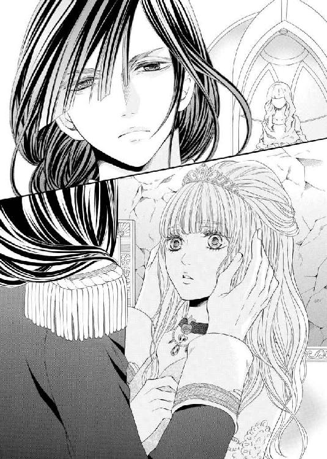
フランソワに再び襲われかけたのだと知られてしまえば彼を殺しかねない。そこまで思わせる殺意がセルジュの全身から迸っていた。
エレノアが必死に首を左右に振ってみせる。
すると、セルジュはおもむろに彼女のドレスの裾を引き裂き、彼女の太股を割り開いて貞操帯の状態を確認した。
「いやっ！ 兄様、見ないでっ！」
悲鳴をあげると、両足に力を込めて太股を閉じようとする。
貞操帯が付けられたままであることを証明するためには、むしろ自ら足を開くべきだと頭では分かっていた。
しかし、フランソワに淫らな愛撫を受けた名残をセルジュに知られてしまうのは、耐え難いことだった。
罪悪感と羞恥とに身悶えながら、エレノアは首をがむしゃらに前後左右へと振りたてる。
「どうやら君の護衛として貞操帯をつけたのは正解だったようだな。でなければ、今頃君は他の男に奪われていた」
憎々しげに言うと、セルジュは内腿の淫靡な痕を見て目を眇めた。
「──誰にどんな風にされた？ 教えなさい」
「私は大丈夫です......ですから......それだけはお赦しください」
「私が我慢ならないのだよ。君の可愛らしい声、滑らかな肌、甘い蜜を他の男が味わったというだけで赦しがたい。生かしておくべきではない──」
「............」
独占欲を剥き出しにし、恐ろしいことを口にするセルジュはまるで別人のようだった。
否、時折、彼が垣間見せてきた恐ろしい本性に乗っ取られたといったほうが正しいかもしれない。
自分が彼をくるわせている。
認めたくはなかったが、もはや認めざるを得ない。
やはり、自分は彼の元から去らねばならないのだという哀しい決意が改まる。
だが、セルジュはそんな彼女の胸の内を知らずに、フランソワが残した淫らな痕を自らの舌と唇とで舐め清めていく。
「あ......や......ン......ぅ......」
フランソワにされるのとはまるで異なる悦楽が媚薬のように内腿へと沁みていき、腰が勝手に揺れてしまう。
彼の舌先が焦らすように内腿を這っていくにつれ、心身が危ういほどの喜悦に震え、身体の奥のほうに熱が籠もる。
セルジュの危険なほどの嫉妬と独占欲に自分の全てを支配されたい──エレノアの本能はそう叫んでいた。
しかし、理性がそれをかろうじて止めていた。
ここで彼を受け入れてしまえば、きっと取り返しのつかないことになる。
もはやすでにそうなっているのかもしれないという可能性も否定はできないが、正真正銘、今が最後の砦であると直感していた。
「はぁはぁ、う、っく......あぁ、ンンッ!? 兄様......駄目です......お願いですから、ン、これ以上はやめてください......」
彼の舌が内腿を這いあがっていき、徐々に貞操帯の溝へと近づいていくのを感じながら、エレノアは必死にセルジュから逃れるべく、腰を左右に揺らして抵抗する。
「なぜだ？」
「だって......鍵を渡す人は私が選ぶようにって......解放してくださったはずじゃないですか!? だからこそ......私を舞踏会にエスコートしてくださらなかったのでしょう？」
「ああ、そうだ。そのつもりだったはずなのだがな」
「なら、なぜこんなことを......」
「獣の血がそれを赦さなかった。君が誰か他の男を選び、奪われることを想像しただけで恐ろしい衝動に襲われた。それが私がここにいる理由だ」
くちゅりという音がして、セルジュが肉核を舌で掘り起こすと同時にじゅるりと蜜もろとも思いっきり強く吸い立ててきた。
「っ!? あ、あぁあああっ！ いやぁあああっ！」
エレノアの絶頂の嬌声が辺りへと響くが、それで満足する彼ではなかった。
本格的に彼女の腰を抱え込むと、わざとはしたない音をたて、舌を躍らせながら官能の真珠と花弁と蜜とを獰猛に味わいつくす。
まるでフランソワの責めに対抗するかのように、いつも以上に執拗に、顔を左右にスライドさせながらエレノアを意地悪に責めつづける。
彼女が全身を激しく痙攣させながら数えきれないほど達してもなお、一向に責めの手を緩めようとはしない。
「あああンッ！ や......やぁ、あ、おかし......く、な、って......ン、あ、あぁあああ、ま、またっ！ ふ、はぁはぁ、あぁああああぁ！」
幾度となく淫猥な蜜しぶきをあげながら、エレノアは乱れくるう。
「ここには隠していないか。一体どこへと隠したものやら──」
わざとらしい言い回しで言うと、セルジュは凄絶な笑みを浮かべて、エレノアのドレスをさらに力任せに引き裂き始めた。
上質な布の裂ける音が、エレノアに新たな妖しい興奮を呼びおこす。
セルジュは、エレノアの敏感な個所を指でくすぐりながら、舌と唇で全身をくまなく愛撫していく。
全てを知り尽くしたセルジュの責めによって、足の付け根、鎖骨や臍、脇のくぼみを舌でなぞられるたびにエレノアは達してしまいそうになる。
背筋を指でつっとなぞられただけでもこわいほどの快感が弾け、自分の身体でなくなったかのような錯覚すら覚える。
彼の唇、舌、指、肌のぬくもり──それら全てがエレノアを際限なく昂らせていく。
「っ!? はぁはぁ......っ!? あぁあ！ ン、いやぁああ！」
何度も絶頂を迎えすぎて、何も考えられなくなる。
このまま理性を手放して本能に従いくるうことができたらどれだけいいか。
それでもエレノアは必死に理性のかけらにしがみつき、頑として鍵のありかを黙秘する。
「もっと乱れくるえばいいものを。なぜ抗おうとする？」
汗ばんだ彼女の顔が愉悦に歪む様子を間近で堪能すると、セルジュは彼女のブロンドの編み込みを解き、指で梳いていく。髪に顔を埋め、首筋と耳とに舌を這わせながら。
「はっ!? あ、あ、あぁ......ン......っくぅ、は、離して......ください......ずるいです。いまさらこんな......」
「確かに──いまさらと言われてしまっても仕方ない。だが、どれだけ君を諦め、手放す努力をしようとも結局無駄だったのだと思い知った」
セルジュが唇でイヤリングを外し、ティアラをも外していき、そしてついに隠されていた鍵を見つけ出してしまう。
「──見つけた。やはり捨てたというのは嘘だったか」
「駄目です！ 返してください！」
「ああ、返してあげよう。だが、君の本心を聞いてからだ。どうやら覚えなくてもいい嘘までも覚えてしまったようだからな」
歌うように言うと、セルジュが鍵を使って貞操帯を外した。
何度も聞きなじんできたかすかな金属音にエレノアの総身が粟立ち、心臓が淫らな期待に太い鼓動を刻む。
股間を覆っていた蜜に濡れた金属の板が外されると同時に、奥に仕込んでいた張り型が勢いよく蜜潮と一緒に飛び出してきてしまう。
「やっ!? いやぁああぁあああああぁあっ！」
今まで感じたことのない最大の羞恥に咽び啼きながら、エレノアは一際激しくまだ見ぬ高みへと昇りつめた。
小水のように甘酸っぱい液体が溢れ出て、官能的な香りを放つ。
セルジュは濡れた張り型を手にとると、それを元の場所に戻すのではなく、その後ろにあるすぼまりへとあてがった。
「っ!? やっ!? な、何......を......」
「嘘なんてつく余裕を奪うには、今までにないきつい尋問が必要だからな──それだけ、君の決意は固いと見た」
太い塊が菊座へと食い込んできて、エレノアは青ざめ半狂乱になる。
「そんな！ 無理です......や、ああ......」
「果たしてそうだろうか？ 最初は無理だと思えたことでも、そう思いこんでいたに過ぎないだけだと、何度も教えてきただろう？」
「............」
セルジュの言葉にエレノアはハッと息を呑む。
いつだってそうだった。
絶対に無理だと思っていたことでも、常にセルジュが自分を導いてくれ、無理ではないと証明してくれた。
自分が強くなれたのは、紛れもなく彼のおかげなのだと改めて感じ入り、胸が切なく締め付けられる。
「──それと同じことだと、君を一度手放してみてようやく気づかされた」
独りごちると、セルジュが力を込め、張り型の出っ張りを情け容赦なく菊穴へと食い込ませていった。愛蜜が潤滑油代わりとなり、じりじりと無機質な肉茎がエレノアの後ろの穴を押し拡げていく。
「っ!? ひ、あ......あ、っく......あぁ......」
恐ろしいほどの拡張感に青ざめ、エレノアは全身を強張らせいきんでしまう。
だが、それは逆効果だった。かえって痛みと熱が増してしまう。
「いっ、やっ......い、っつ......うぅ、あ、あ、あぁあ、は、入らな......い......あぁ」
「エラ、落ち着いて深呼吸をしなさい。そうすれば楽になる」
激しく取り乱すエレノアとは対照的に、セルジュは落ち着き払った口調で彼女の背中を撫でながら窘めつつも、自らの剛直の先端を彼女の秘裂へとあてがった。
「きゃっ!? お願いです！ 兄様っ、赦して！」
ようやく彼がしようとしている恐ろしい責めがどんなものか気づいたエレノアは、細い肩を交互に突き上げるように激しく抵抗する。
ただでさえ太い半身を前にも後ろにも同時に挿入れられるなんて。
考えただけで全身へと震えが拡がっていく。
「や......あぁ......さ、裂けて......しま......うのに......いやいや、いやぁああああぁ」
逼迫した鋭い悲鳴が響きわたる。
が、セルジュは手を緩めることなく、恐ろしい微笑みを浮かべたまま彼女の全てを同時に征服した。
「あ！ あっ！ あぁ......」
息を詰まらせたエレノアは目を見開いたまま、四肢を突っ張って愕然と目を見開く。
いつも以上に硬く熱くそそり勃起った肉棒と同型の張り型とが身体の中央に張りつめきっていて、身じろぎすることすら躊躇われる。
にも関わらず、セルジュは嗜虐心を顕わにした表情で彼女の腰を抱え込み、腰を前後へと動かし始めた。
「っ!? い、やぁあっ！ やぁああ......こ、壊れ......て......無理......あぁああ」
「悪いが、今すぐ君の全てを私だけのものにしなければ気が済まない──」
彼女の腰を抱え込むと、凄まじい締めつけをものともせずに抽送を続ける。
少し動くだけで身体の中央で太い塊同士がぶつかり合い、腰とその奥の子宮に重たい衝撃がはしる。
「あぁああ......や、あぁ......」
エレノアが我を忘れて甲高い嬌声をあげた瞬間、意識が遠のく。
だが、遠のき終えるよりも前に鋭い痛みが走り、再び悲鳴をあげてしまう。
前のほうからは信じがたいほどの快感が、後ろのほうからは信じがたいほどの痛みと熱が、交互に身体の奥深くへと刻みこまれていき、エレノアを淫らにくるわせる。
「ゆ、赦して......ああ、怖......い......これ以上は......もう......」
「この鍵を委ねると決めた相手を打ち明けなさい。そうすれば赦してあげよう」
セルジュがエレノアの首へと鍵と指輪を通したネックレスをかけた。
「それは......それだけは......言えませ......あぁあああっ!?」
返事を待つより早く、セルジュが腰を勢いよく突きだし、太い衝撃を子宮口へとたたき込んできた。
エレノアは涙を流しながら腹部を痙攣させ、息を切らしながら一気に絶頂を迎える。
彼女の首元でネックレスが跳ね、バイオレットダイヤと秘密の鍵が鈍い光を放った。
「教えなさい、エラ」
「あ、あぁ......そんなことを知って......どうするつもりです!?」
「私には君を幸せにする責任がある。失敗はけして赦されない。君が選んだ相手を見極める必要がある」
「............」
スレインの話を聞く前だったならば、二人きりの秘密の結婚式を挙げたときであれば、どんなに良かったことか。どうして今なのか？
肉棒と張り型の同時責めにくるわされながら、エレノアは眉をひそめ、自分の上で雄々しく腰を突き上げてくるセルジュを物問いたそうに見つめる。
自分の幸せは最初からずっとただ一つだけ。選んだ相手もただ一人だけ。
エレノアは泣いているような笑っているような表情を浮かべて、言葉を詰まらせながら訴えかけた。
「兄様ほどの方ならば、その答えは分かっていらっしゃるはず......なのに、なぜそんな残酷な質問をなさるのですか？ 私の幸せは叶わない......叶えてはならないものなのに」
「君にそんなことを言わせてしまうとは──やはり私は間違っていたようだ」
「......え？」
「私も君に嘘をついていた。やはり君を誰にも渡したくない。未来永劫私だけの人形にしておきたい。例え、誰を敵に回しても──」
一つに溶け合ったまま強く抱きしめられ、エレノアは涙ながらに笑み崩れる。
「だけど、私は呪われた人形です......もしも私のせいで兄様に何かあったら......」
「君の呪いならば甘んじて受けとめよう。前にも言ったはずだ。君はただ私の傍で笑ってくれさえいればいい。元々呪われた身だ」
セルジュのまっすぐな告白がエレノアの胸を打つ。
「あぁ、兄......様......信じて......よいのですか？ 本当に......」
エレノアに頷いてみせると、セルジュは彼女の唇へと人差し指をあててたしなめるように微笑むと、再び腰を緩やかに動かし始めた。
「その呼び方は止めなさい。そう教えたはずだが？」
「あ、ああっ......セルジュ様......」
圧倒的な彼の存在感を身の内に感じながら、エレノアは引き攣れた声を洩らし、背筋をアーチ状に逸らしてのけぞる。
何度も絶頂に追いやられた末に、いつも以上に太く熱い肉槍に姫壺をねっとりとした腰つきで掻き回され、もはや何も考えていられない。
たっぷりの蜜を湛えた秘所の奥深くを彼が穿つたびに、いやらしい粘り気のある音がして、二人の本能をさらに煽り立てていく。
「さあ、エラ、私を信じて全てを委ねなさい。今度こそ全て受けとめてみせよう」
エレノアは蕩けた表情で縋るようにセルジュを見つめると、震える手で自分の首から秘密の鍵を通したネックレスを外して彼の首へとかけた。
「鍵を渡したい相手は......セルジュ様だけ......他の誰にも渡したくありません」
「──ああ、もう誰にも渡さない。約束しよう」
セルジュはネックレスの鎖から婚約指輪だけ外すと、エレノアの薬指へとつけた。
大粒のダイヤモンドが煌いて、紫の強い輝きを放つ。
「もう誰にも隠さなくていい。前例がないならばつくればいいだけの話。そう、私が今までずっとしてきたことと同じことだとようやく気付くことができた。強い信念は多くの味方をつくり、不可能を可能にする。私はそうやって国王の座を得たのだから」
「許されない恋......本当に祝福してもらえるのでしょうか？」
「ああ、おとぎ話を現実にしてみせよう。これまでの悩みも葛藤もすべてを国民に打ち明けて理解を請うとしよう。誠意をもって伝えれば必ず味方は得られるはずだ。多くの味方さえ得ることができれば敵も下手に動きづらくなる。王族の血塗られた歴史を断ち切ることができる」
「すぐには分かってもらえなかったとしても、伝わるまで伝え続けましょう。いつかきっと分かってもらえるはず。偽りの人生を生きるよりもずっといいです」
エレノアらしいまっすぐな言葉に、セルジュは頷いて同意を示す。
二人は互いの指を絡め合うと、思いの丈を込めて情熱的に身体を重ねていく。
愉悦の高波に意識を攫われるたびに、至福感が心身の隅々まで拡がっていき、エレノアは涙を流しながらくるおしくも甘やかな声を紡ぎ出す。
それは、哀しみの涙ではなく悦びの涙だった。
こうして互いを思い合いながら一つに溶け合っていくだけで、かけがえのない存在だということが無言のうちに伝わってくる。
怖いものなど何もない。彼と一緒ならばなんだってできる気がする。
悦楽が深まっていけばいくほど雑念が消えていき、研ぎ澄まされていく。本当に大事な核だけが残り、その他全ての余計なものが削ぎ落とされていく。
「エラ、愛している──」
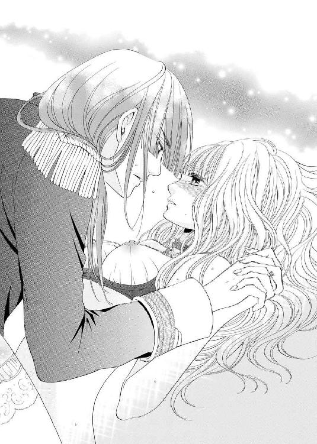
やがて、エレノアの昂ぶりに合わせてセルジュが彼女の奥深くで半身を解放した。
エレノアは身体の奥深くで雄々しく脈打つ彼を感じながら、屈託のない微笑みを浮かべて絶頂の余韻を味わう。
セルジュが汗をしたたらせながら、厳しい表情と口元とを緩めて彼女の笑顔に見入る。
「その笑顔だ。エラ。今まで君の笑顔にどれだけ救われてきたかしれない。私が妾の子、忌み子だと周囲から疎まれていたにも関わらず国王の座まで上り詰めることができたのは、君の笑顔を傍で見ていたいと願う一心だったからと言っても過言ではない」
その言葉が、彼のためにこそ彼の元を去るべきなのだと一度は哀しい決意をしたエレノアを勇気づける。
「......私が呪われた人形だったとしても......お傍にいてもよいのですか？」
震える声で耳元に囁くように尋ねてきた彼女へとセルジュは答えた。
「いてもらわなくては困る。君は私だけの人形なのだから──」
と。
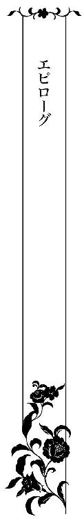
ローズ城の地下室が崩落し、仮面舞踏会が中止されたという報せは国中を騒がせた。
大規模な事故であったにも関わらず、主催者であるリディが招待客を事前に避難させていたこともあり死傷者は皆無。
だが、あまりにも不自然すぎる事故にさまざまな憶測と噂が流れる中、それを隠れ蓑にセルジュはエレノアと正式に結婚するための準備を着々と進めていた。
もしかしたらそのためだけにあの地下室を破壊したのかもしれない。恐ろしい考えではあるが、獣の瞳をもつ彼ならばやりかねない......。
エレノアが自分の隣を歩くセルジュに疑惑の視線を投げかけると、彼はいつもと変わらないクールな表情で、「過去と訣別するためにもあれは必要なことだったのだ」と答えた。
が、もはやその答えをそのまま鵜呑みにするエレノアではない。
いまいち納得しかねるといった風に眉根を寄せて首を傾げてみせるが、セルジュはそれに気づいていないふりをする。
やがて、とある扉の前で二人は同時に足を止めた。
ここはセリスの私室──エレノアが不安そうな面持ちでノックを躊躇っていると、セルジュが励ますように彼女の肩に手を置き、耳元で囁いた。
「さあ、エラ、今度は君の過去と訣別すべき時だ」
「......はい」
エレノアは意を決して顔をあげると、勇気を奮い立たせてドアをノックした。
そして、久し振りに耳にする母の返事を懐かしく思いながら、部屋の中へと入っていく。
「ああ、セルジュ様、よくいらしてくれました......エラも......無事だったのですね」
憔悴しきった母の姿を目にした瞬間、エレノアの胸が痛む。
「お母様、申し訳ありません......ご心配をおかけして......」
「無事であるならよいのです。リディ様のお城の事故で貴女が行方不明になったとの報せが届いたときには、嫌がる貴女を無理やり行かせたことを何度後悔したことか......」
セリスがエレノアの身体を力いっぱい抱き締めると、深いため息をついた。
「お父様が貴女を連れていってしまったのかと思いました......私には貴女しかいないのに」
「............」
息もできないほど強く抱き締められ、エレノアは涙ぐむ。
あれだけ恐れてきた母が小さく見えて戸惑いを隠せない。
「実は今日は大切なお願いがあってまいりました」
セルジュの言葉に我に返ると、セリスは彼とエレノアを交互に見て首を傾ぐ。
恭しく胸に手を当てて礼をすると、セルジュは一呼吸置いて言葉を続けた。
「エラを私の妻に迎えたく、そのお許しをいただきにうかがったのです」
「っ!?」
驚きのあまり、セリスの手から扇子が滑り落ちる。
その扇子を拾い上げると、セルジュは彼女へと手渡した。
しかし、セリスは扇子を受け取る余裕もなく狼狽する。
「......どういうことですか？ エラにはリディ様からの縁談がありますのに」
いつもの母の厳しいしかめ面に、エレノアは反射的に委縮してしまう。
だが、ここで退くわけにはいかない。過去と決別し、新たな未来への一歩を踏み出さねばならない。自分のためにも、彼のためにも。
エレノアは自らを奮い立たせて一歩前へと踏みだすと、母の目をまっすぐ見つめて懸命に伝えようと思っていた言葉を紡ぎだす。
「お母様、王族の結婚は公のものであって個のものではない。そう教わってきました。けして赦されないということだと分かっています。でも、どれだけ離れようとしても諦めようとしてもできなくて......セルジュ様以外には誰も考えられなくて。勘当されても仕方のないことだと思います。ですが、どうか結婚をお赦しください」
掠れた震え声ではあったが、生まれて初めて自分の意見を母に伝えきることができた瞬間、胸の内に心地よい風が吹き抜けていく。
これが今の自分にできる精一杯。最善を尽くせば後悔しようがない。
エレノアは晴れ晴れとした表情で母の返事を待つ。
セリスは黙ったまま、娘を複雑な表情で見つめていた。
やがて、深いため息を一つつくと、セルジュの手から扇子を受け取って広げ、遠い目をして言った。
「赦されない秘めた恋なんて幸せになれません。エラに務まるとはとても思えません。絶対に後悔するに決まっています」
「後悔なら、もう何度もしてきました。でも、それで分かったのです。自分の本当の気持ちを偽るほうが後悔すると──私は嘘が苦手です。自分の心に嘘はつけませんから」
「............」
いつまでも子供だとばかり思っていた娘の揺るぎない返答にセリスは驚きに目を瞠る。
長い沈黙の後、彼女は自嘲的な声色で呟いた。
「......どうやら私は貴女をまっすぐ育てすぎたようですね。貴女には幸せになって欲しくて。それだけが私の生きがいでした。それなのに......どうしてこんなことに......」
「お母様......」
肩を落とし打ちひしがれた母の姿は見るに堪えなくて、エレノアは目を伏せてしまう。
「──エラは私が必ず幸せにしてみせます」
セルジュの言葉に目を吊り上げると、セリスは声を荒らげた。
「男の人には分からないのです。日陰で生きねばならない女の気持ちがどれだけ屈辱的で不幸なものか......それをエラに強いるなんてあんまりです」
「エラにそんな思いはさせませんよ。私はエラを正妃として迎え入れるつもりですから」
「っ!? そんなこと......できるはずが......」
「確かに容易なことではない。だが、エラの幸せを願う気持ちは誰にも負けません。無論、貴女にも」
エレノアの肩を抱き寄せると、セルジュは真摯な面持ちで言葉を続けた。
「どんな困難があったとしても私が必ず護り抜く、幸せにすると誓います。ですから、どうか結婚を認めてはいただけませんか？」
「............」
厳しい表情のまま、セリスはその場に固まってしまう。
やがて、宙を睨むように見据えた目から、一筋の涙がこぼれ落ちていった。
「私とリディ様の考えが間違っていたと証明してくださると約束していただけますか？」
「ええ、約束します」
一分の迷いもなく答えると、セルジュは自信と覚悟に満ちた微笑みを浮かべてみせる。
日の光を浴び、色違えの双眸が宝石のような強い輝きを放つ。
「セルジュ様みたいな方に出会えていれば──私もリディ様も違った道を歩めたのかもしれませんね」
ぽつりと呟くと、セリスはエレノアの手をそっと握りしめてうなだれた。
エレノアも彼女の手をしっかりと握り返す。
言葉はなくとも、こうしているだけで、これまでの確執がゆっくりと溶けていくような気がする。
「エラ、今まで貴女に思い通りの道を歩ませようとしてきた私をさぞかし憎んでいることでしょうね......」
「いいえ、だって、自分の気持ちに嘘をつかないように、正直であるようにと育ててくださったのはお母様ですもの。感謝しています」
「............」
セリスは泣き顔を娘に見られまいと扇で顔を覆い隠すと、わざと明るい声で言った。
「......分かりました。結婚を認めましょう」
「ありがとうございます」
エレノアとセルジュは顔を見合せて安堵の表情を浮かべる。
セリスは「そうと決まればやらねばならないことがいろいろあります」と言い残すと、そそくさと部屋を出ていった。扉を閉めるのも忘れたまま──
カーテンが柔らかな風をはらんでふわりと揺れ、部屋に残された二人へと午後の強い日差しが斜めに注がれる。
「絶対に無理だと思っていたのに......信じられません」
「誠意と情熱は伝わるものだ。こうやって一人ずつ味方を増やしていけばいい。いずれ姉上もスレインも分かってくれるはずだ」
「ええ......」
エレノアは感極まって涙ぐみ、彼に頷いてみせた。
彼と一緒ならば何も怖くない。不思議とどんなに不可能に思えることでもできるような気がしてくる。
目尻に浮かんだ涙が宝石のように輝き、それをセルジュのキスが拭う。
くすぐったそうに肩を竦めたエレノアの仕草に、彼の色違えの双眸が不敵に細められた。
セルジュは彼女の小さな顔を抱え込むようにして、その可憐な唇を貪りにかかる。
「ン......や......あぁ......駄目です。こんなときに......」
熱いため息をつきながら、エレノアは彼の腕の中から逃れようと身を捩る。
しかし、セルジュの逞しい腕は彼女をきつく抱きしめ、けして逃そうとしない。
「もう二度と君を手放さない」
「ずっとお傍にいますから......安心してください」
「ああ──君が間違いなく私だけの人形だと確かめるたびに安心するだろう」
なんとか彼を宥めようとするエレノアだが、嗜虐心を剥き出しにしたセルジュは獣の瞳をぎらつかせていたいけな人形へと襲い掛かっていく。
まさか秘密のごっこ遊びが現実となるなんて──不思議な思いに包まれながら、エレノアは彼の巧みな責めに素直に身を委ねることにした。
（私は......セルジュ様だけのお人形なのだから......）
そう自分へと言い聞かせて。
二人が共に歩んでいく道は、甘く危険な予感に満ちていた。
あとがき
みかづき紅月です。「大人の人形あそび」ってなんか......イィ！ と、本作を書かせていただきました。ただし、テーマがテーマだけに、こう背徳的な感じがむんむん増していきましてアレレとプロットとずれていき......必然的にセルジュが一歩間違えればなんとかって感じになっていきまして。書いているほうがハラハラでした......。これどうなるんだろう......って。
皆さんにも背徳的かつ耽美な非日常を味わっていただければと思います。
セルジュもエレノアもとにかくまっすぐなタイプで妥協を良しとしない、大人のルールに染まりきれないというタイプで、まさに今はやりのアナ雪の「ありのままで～♪」という感じですね（ちなみにオラフが気にいってます。あの危うい無邪気さがなんとも）。大人と子供のいいとこどりができる人っていうのが一番魅力的かもなあと思いながら書きました。気にいってもらえますように。
最後に、環境が変わり、執筆時間がなかなかとれないなか大変お待たせしてしまい......編集さんには頭があがりませんが......根気強くまっていただき本当に感謝しています。また龍本みお先生の素敵なイラストにも本当に感謝でいっぱいです。この場を借りてお礼申し上げます。そして、本作を読んでくださった方々もありがとうございます！
また他の作品でもお会いできますように♪ いろいろとたくさん書いていますので、読んでいただけるとうれしいです。
「エレノアさん、お目にかかりたかったですわ！ 本物のお人形みたいに愛らしい方ですのね」
「お噂はかねがね！」
王城のサロンにて国王主催のアフターヌーンティーが開かれていた。着飾った男女に口々に褒められて、エレノアは気恥かしそうに頬を染め、幼い頃から常に携えている人形をぎゅっと抱きしめた。
その仕草がまた愛らしいと、皆が絶賛する。
そんな彼女を国王セルジュは、満足そうに眺めていた。それもそのはず、エレノアの身支度をするのはいつだって彼であり、ドレスもアクセサリーも全てが彼自ら選んだものなのだから。
セルジュのまなざしに気づいて、エレノアの頬はさらに赤く色づく。落ち着きなく視線を彷徨わせるとそっと長い睫毛を伏せた。
二人には秘密があった。その証である首のチョーカーに触れると困り果てたように眉をひそめる。
彼女が煩悶する理由を知るのはセルジュのみ。端正で優しげな顔立ちに嗜虐の色が滲む。
「そのチョーカーも素敵ですわね！ それも国王陛下からの贈り物ですの？」
「え、ええ......」
（これがチョーカーではないって気づかれてしまったら......どうしよう......）
今にも泣き出してしまいそうなほどに眉をハの字にして、エレノアはぎこちなく頷いてみせる。
救いを求めるようにセルジュをちらりと見るが、彼はポーカーフェイスのまま、気づかないフリをして悠然と紅茶のカップに口をつけている。
（私が困っているって気づいてらっしゃるくせに助けてはくださらないのね。意地悪ばかり......）
エレノアが唇を尖らせ上目遣いに彼を甘く睨みつけた。二人の間には親密な空気が流れているが、周囲は気づいていない。
と、そのときだった。
不意にセルジュが片側だけ伸ばした前髪を無造作に掻きあげたその瞬間、エレノアは雷に打たれたかのように反射的にびくっと肩を跳ね上げた。
ミステリアスな黄金色の瞳が彼女を捕えて離さない。黄金と青の色違えの双眸は獰猛な光を湛えて危うげに揺らいでいた。
この目に見つめられると、彼に貪られた記憶がありありと蘇ってしまい、変な心地になる。
エレノアは苦しそうにその愛らしい顔を歪めると席の両隣に会釈をして席を立った。
いったんこの場を離れて平静を取り戻さなければと思うが、足がふらついてしまう。
「エラ、大丈夫か？」
セルジュが席を立つと、彼女の身体を支えて気遣う素振りをみせる。
（大丈夫も何も......兄様のせいなのに......）
エレノアは兄のように慕ってきた従兄弟をうらめしそうに見ると、彼の腕に掴まって部屋を退出していった。
「兄様、あまり意地悪なさらないでください。他の人の目があるところでは......困ります......」
扉が閉まり終えるのを確認してから、エレノアは小声でセルジュへと訴えかけた。
「エラ、今に始まったことではないだろう？ 昔から私は君の困った顔が好きでね──」
セルジュはエレノアの手をとって甲に口づけると、鋭い光を宿した目で彼女を一心に見つめる。
「だが、困ったと言うわりには、こんなに淫らな表情をしているのはなぜだ？」
「っ!? そんなことはっ!?」
否定しようとするエレノアの唇を彼の長い指が押さえて言葉を阻んだ。
「私の目をごまかすことはできない。それでも頑なに違うと言い張るならば確かめてみるまでだ」
歌うような口調で言うと、セルジュは胸元から小さな鍵を取り出してみせた。
その鍵を目にした瞬間、エレノアは切なげな表情で熱いため息をついてしまう。
それは、チョーカーに見せかけた首輪と貞操帯の鍵だった。どちらもセルジュが彼女のためだけにと用意した特注品で、一見美しい装飾品だが、いかなるときも常に彼女を官能の鎖で縛める淫らな責め具がその本性だった。
「駄目です......誰かに気づかれてしまったらとんでもないことになります......」
「気づかれないように善処しなさい」
セルジュが彼女の腰に手を回して、半ば強引に隣の部屋へとエスコートしていく。
そして、後ろ手にドアを閉めると、彼女のドレスの裾を容赦なくたくしあげた。
「っきゃっ!? や、や......ぁ......」
小さな悲鳴をあげて、慌てて口元を両手で押さえるエレノアに構わず、繊細な透かし掘りが施された貞操帯の鍵を外す。
次の瞬間、ごとりという音と共に、彼女の奥へと埋め込まれた猥具が床へと転がった。
ラピスラズリで創られたそれはたっぷりの蜜にまみれ、鈍い光を放っている。
「まだ何もしていないというのに、もうこれほどまでに濡れていたとはな──レッスン調教は上々のようだ」
「やっ......言わないでくだ......さい」
「なぜだ？ 私は事実を言ったまでだが」
意地悪な口調で言うと、セルジュは太いディルドー張り型を拾い上げ、エレノアに見せつけるように舐めてみせた。
「切ない味、男をくるわせる媚薬だな──」
いつもは優しい彼の声色が恐ろしい響きを帯びたのを感じて、エレノアは身震いした。
獣の本性を剥き出しにした彼の恐ろしさは身をもって知っている。
顔が熱く火照り、胸の鼓動が加速する。
セルジュが彼女を抱き寄せたかと思うと、片足を抱え込むようにして、己の半身をあてがった。
「いや！ それだけはお赦しください」
「君は私だけのドール人形になるという誓いを忘れたのか？」
「忘れてなんかいません。ですが......」
「ならば、何も言わずに私に身を委ねなさい」
彼に優しい口調でいやらしい命令をされると、従ってしまう。秘密の人形遊びには抗えない。
妖しい気持ちに酔いしれながら、エレノアは彼にされるがまま身を委ねていくのだった。
「エレノアさん、お目にかかりたかったですわ！ 本物のお人形みたいに愛らしい方ですのね」
「お噂はかねがね！」
王城のサロンにて国王主催のアフターヌーンティーが開かれていた。着飾った男女に口々に褒められて、エレノアは気恥かしそうに頬を染め、幼い頃から常に携えている人形をぎゅっと抱きしめた。
その仕草がまた愛らしいと、皆が絶賛する。
そんな彼女を国王セルジュは、満足そうに眺めていた。それもそのはず、エレノアの身支度をするのはいつだって彼であり、ドレスもアクセサリーも全てが彼自ら選んだものなのだから。
セルジュのまなざしに気づいて、エレノアの頬はさらに赤く色づく。落ち着きなく視線を彷徨わせるとそっと長い睫毛を伏せた。
二人には秘密があった。その証である首のチョーカーに触れると困り果てたように眉をひそめる。
彼女が煩悶する理由を知るのはセルジュのみ。端正で優しげな顔立ちに嗜虐の色が滲む。
「そのチョーカーも素敵ですわね！ それも国王陛下からの贈り物ですの？」
「え、ええ......」
（これがチョーカーではないって気づかれてしまったら......どうしよう......）
今にも泣き出してしまいそうなほどに眉をハの字にして、エレノアはぎこちなく頷いてみせる。
救いを求めるようにセルジュをちらりと見るが、彼はポーカーフェイスのまま、気づかないフリをして悠然と紅茶のカップに口をつけている。
（私が困っているって気づいてらっしゃるくせに助けてはくださらないのね。意地悪ばかり......）
エレノアが唇を尖らせ上目遣いに彼を甘く睨みつけた。二人の間には親密な空気が流れているが、周囲は気づいていない。
と、そのときだった。
不意にセルジュが片側だけ伸ばした前髪を無造作に掻きあげたその瞬間、エレノアは雷に打たれたかのように反射的にびくっと肩を跳ね上げた。
ミステリアスな黄金色の瞳が彼女を捕えて離さない。黄金と青の色違えの双眸は獰猛な光を湛えて危うげに揺らいでいた。
この目に見つめられると、彼に貪られた記憶がありありと蘇ってしまい、変な心地になる。
エレノアは苦しそうにその愛らしい顔を歪めると席の両隣に会釈をして席を立った。
いったんこの場を離れて平静を取り戻さなければと思うが、足がふらついてしまう。
「エラ、大丈夫か？」
セルジュが席を立つと、彼女の身体を支えて気遣う素振りをみせる。
（大丈夫も何も......兄様のせいなのに......）
エレノアは兄のように慕ってきた従兄弟をうらめしそうに見ると、彼の腕に掴まって部屋を退出していった。
「兄様、あまり意地悪なさらないでください。他の人の目があるところでは......困ります......」
扉が閉まり終えるのを確認してから、エレノアは小声でセルジュへと訴えかけた。
「エラ、今に始まったことではないだろう？ 昔から私は君の困った顔が好きでね──」
セルジュはエレノアの手をとって甲に口づけると、鋭い光を宿した目で彼女を一心に見つめる。
「だが、困ったと言うわりには、こんなに淫らな表情をしているのはなぜだ？」
「っ!? そんなことはっ!?」
否定しようとするエレノアの唇を彼の長い指が押さえて言葉を阻んだ。
「私の目をごまかすことはできない。それでも頑なに違うと言い張るならば確かめてみるまでだ」
歌うような口調で言うと、セルジュは胸元から小さな鍵を取り出してみせた。
その鍵を目にした瞬間、エレノアは切なげな表情で熱いため息をついてしまう。
それは、チョーカーに見せかけた首輪と貞操帯の鍵だった。どちらもセルジュが彼女のためだけにと用意した特注品で、一見美しい装飾品だが、いかなるときも常に彼女を官能の鎖で縛める淫らな責め具がその本性だった。
「駄目です......誰かに気づかれてしまったらとんでもないことになります......」
「気づかれないように善処しなさい」
セルジュが彼女の腰に手を回して、半ば強引に隣の部屋へとエスコートしていく。
そして、後ろ手にドアを閉めると、彼女のドレスの裾を容赦なくたくしあげた。
「っきゃっ!? や、や......ぁ......」
小さな悲鳴をあげて、慌てて口元を両手で押さえるエレノアに構わず、繊細な透かし掘りが施された貞操帯の鍵を外す。
次の瞬間、ごとりという音と共に、彼女の奥へと埋め込まれた猥具が床へと転がった。
ラピスラズリで創られたそれはたっぷりの蜜にまみれ、鈍い光を放っている。
「まだ何もしていないというのに、もうこれほどまでに濡れていたとはな──レッスン調教は上々のようだ」
「やっ......言わないでくだ......さい」
「なぜだ？ 私は事実を言ったまでだが」
意地悪な口調で言うと、セルジュは太いディルドー張り型を拾い上げ、エレノアに見せつけるように舐めてみせた。
「切ない味、男をくるわせる媚薬だな──」
いつもは優しい彼の声色が恐ろしい響きを帯びたのを感じて、エレノアは身震いした。
獣の本性を剥き出しにした彼の恐ろしさは身をもって知っている。
顔が熱く火照り、胸の鼓動が加速する。
セルジュが彼女を抱き寄せたかと思うと、片足を抱え込むようにして、己の半身をあてがった。
「いや！ それだけはお赦しください」
「君は私だけのドール人形になるという誓いを忘れたのか？」
「忘れてなんかいません。ですが......」
「ならば、何も言わずに私に身を委ねなさい」
彼に優しい口調でいやらしい命令をされると、従ってしまう。秘密の人形遊びには抗えない。
妖しい気持ちに酔いしれながら、エレノアは彼にされるがまま身を委ねていくのだった。
国王陛下だけの愛玩ドール ～背徳のマリア─ジュ～
電子第１版発行 ２０１５年２月13日
著 者 みかづき紅月
発行所 株式会社ジュリアンパブリッシング
東京都千代田区九段北１-５-９-３Ｆ
０３-３２６１-２７３５
ＨＰ http://www.julian-pb.com/
※本電子書籍は左記の作品に基づき製作されました。
発行 株式会社ジュリアンパブリッシング
ロイヤルキス文庫『国王陛下だけの愛玩ドール ～背徳のマリア─ジュ～』
(初版発行 ２０１４年11月30日)
(c)Kougetsu Mikazuki 2014
※本書の一部、あるいは全部を無断で複製複写（コピー）、転載、上演、放送することは法律で認められた場合を除き、著作権の侵害となるため、禁止します。